| アスラクライン（13） さくらさくら (電撃文庫) | |
| 三雲 岳斗 & 和狸 ナオ | |
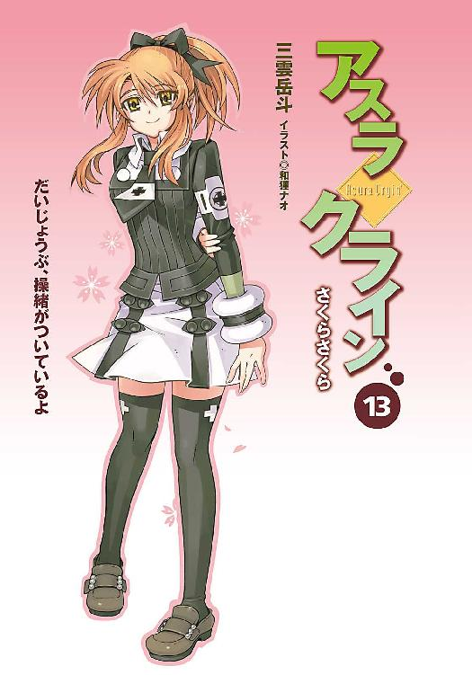
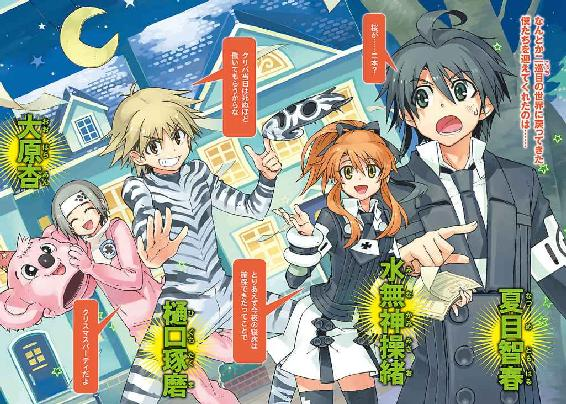
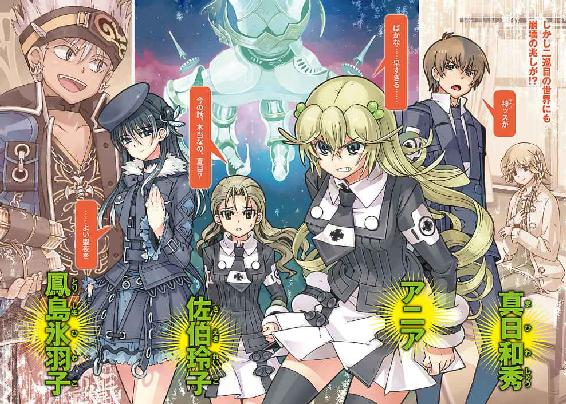
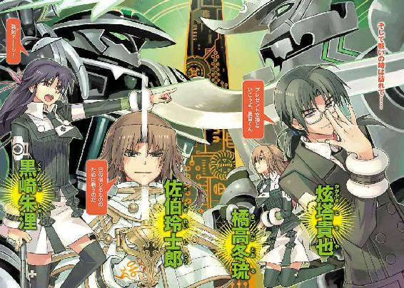
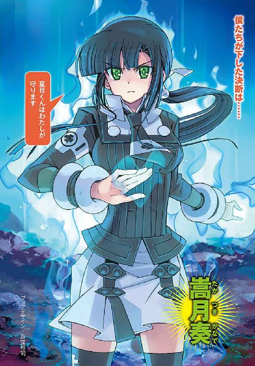
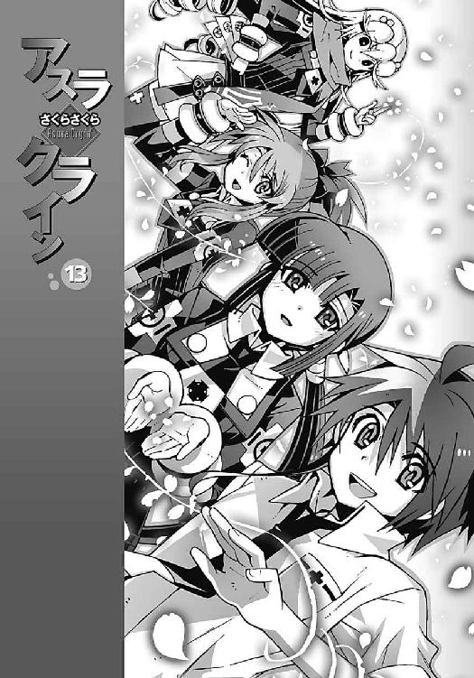
本書（電子版）に掲載されているコンテンツ（ソフトウェア／プログラム／データ／情報を含む）の著作権およびその他の権利は、すべて株式会社アスキー・メディアワークスおよび正当な権利を有する第三者に帰属しています。
法律の定めがある場合または権利者の明示的な承諾がある場合を除き、これらのコンテンツを複製・転載、改変・編集、翻案・翻訳、放送・出版、公衆送信（送信可能化を含む）・再配信、販売・頒布、貸与等に使用することはできません。
φ プロローグ
夜明け前の暗い海面に、無数の破片が漂っていた。
それは墜落した航空機の残骸だった。海に落下した国際線の旅客機が、空港近くの防波堤に乗り上げ、片翼を失った無惨な姿を晒している。
天候はひどく荒れていた。気温も低い。凍えるような風が吹きつけ、波は白く濁っている。
成田発、ロンドン・ヒースロー空港行きの大型旅客機。機体は着陸態勢に入ったところで、原因不明の事故により失速。最悪の角度で海面に激突し、大破した。
乗員の半数近くは、ほぼ即死。生き残った乗客のほとんども負傷していた。機体には浸水が始まっているようだった。裂け目から吹きこむ冷たい外気が、傷ついた人々の体力を容赦なく奪っていく。
「智春ッ......！」
多くの乗客が泣き叫ぶ機内に、ひときわ甲高い声が響き渡った。
日本人の少女の声だった。全体的に色素が薄い印象の、小柄な少女だ。まだ真新しい中学校の制服を着て、その腕の中に負傷した少年を抱いている。
少年の身体は、凄惨なまでに傷ついていた。無数の傷を負った全身は血塗れで、身体中あちこちを骨折しているらしい。おそらく内臓にも相当なダメージを受けているだろう。墜落の衝撃で彼らの座席を固定していた金具が破壊され、座席ごと壁に叩きつけられたのだ。
しかし彼の隣にいた少女は、奇跡的にほとんど無傷だった。よほどの強運の持ち主なのか、それとも少年が身を挺して彼女を庇ったのか──おそらく、その両方なのだろう。
「お願い、誰か助けて！ 智春が......智春が死んじゃう！」
傷だらけの少年を強く抱きしめたまま、少女が悲痛な声で叫んだ。
だが、彼女の呼びかけに答える者はいなかった。機内はあまりにも多くの負傷者であふれていたし、そもそも他人を助けられるほど余裕のある人間は誰もいなかったのだ。
それでも少女は諦めようとしなかった。
意識のない少年に必死で呼びかけながら、制服のスカーフで彼の傷口を止血し、座席に挟まれた彼の身体をどうにか引きずりだそうとする。
彼女のそんな悲壮な姿を、僕は、かすかな驚きとともに見つめていた。
僕は彼女の名前を知っていたからだ。
「水無神操緒、か......そうか、きみはこの飛行機に乗っていたんだな」
機巧魔神の能力で空間を歪め、僕は彼女たちの背後に出現する。その異様な気配に気づいたのか、少女が驚いたように振り返った。
彼女の目には、僕たちが、どこからともなく唐突に姿を現したように思えたはずだ。おそらく人間以外の存在──死神か悪魔のようにも映ったかもしれない。そして、それはあながち間違いというわけでもない。
だが〝二巡目〟の世界の水無神操緒、おそらく今はまだ十二歳──中学生になる直前の彼女は、怯えの表情を浮かべることもなく、ただ気丈に僕を睨みつけた。
僕が、この世界の夏目智春を助けてくれるのかどうか──ただそれだけを見分けようとしているような瞳だった。
「あなた、誰？」
どうして自分の名前を知ってるのか、と確認するように幼い操緒が訊いてくる。
僕は彼女の質問に答えず、ただ静かに、操緒の腕の中に抱かれている少年の姿を見下ろした。〝二巡目〟の世界の僕の姿を──
「夏目智春......死んでいるのか」
僕の冷ややかな呟きに、操緒がびくり、と肩を震わせた。信じたくない、というふうに首を振る。彼女が初めて見せた気弱な表情だ。
しかし彼女も本当は気づいているのだろう。夏目智春は、もう死んでいる。
「僕が悪魔化したのは、これが原因か......」
自分の両手を見下ろしながら、僕は溜息混じりに呟いた。
「あく......ま？」
幼い操緒が、呆然とした表情で僕を見上げた。
僕は無意識にうなずいた。
ひとつの世界に、同じ人間が、二人同時には存在できない。
だから僕が〝一巡目〟の世界から時間を遡ってここに来たとき、〝二巡目〟の世界の夏目智春は消滅するはずだった。僕が彼の存在を、上書きして乗っ取るはずだったのだ。
だが実際の結末は違った。僕はこの世界に同化することができず、世界の異物──悪魔という不安定な形で存在することになった。
なぜなら僕が来たときにはすでに、僕が乗っ取るはずだったこの世界の夏目智春は死んでしまっていたからだ。完全に想定外の状況だった。最悪だ。
だが、それを嘆いていられる状況でもなかった。
「嵩月、生存者を捜してくれ。救助しよう」
僕は、背後に浮かんでいる射影体の少女に呼びかける。ゆらゆらと音もなく空中を漂いながら、黒髪の少女が無言でうなずいた。
「きみも一緒に来るんだ。そいつは置いていけ」
そう言って僕は、水無神操緒の腕をつかむ。その腕を、操緒は無理やり振りほどいた。
「待って」
僕の顔を真っ直ぐに見上げて、操緒は言った。彼女の瞳に浮かんだ強烈な意志の光に、僕は一瞬、気圧された。
「お願い、智春を助けて！」
夏目智春の死体をぎゅっと抱きしめて、操緒が声を絞り出す。
「無駄だよ。言っただろ、そいつはもう死んでる」
僕は、彼女をなだめるように静かに告げた。だが、それに対する操緒の返事はひどく意外なものだった。
「だったら今すぐ生き返らせて」
「え......!?」
「あなたは悪魔なんでしょ。さっき自分でそう言ったわ」
「違う。それはきみが想像しているような意味ではなくて......」
僕は困惑しながら首を振る。しかし操緒は言い訳する僕を遮って、
「智春を生き返らせなさい！」
小柄な少女が発したものとは思えない、異様な力のある言葉に、僕は絶句する。
「駄目だ。それよりも早くここから出るんだ」
「駄目？ 無理じゃないのね。できるんだ、やっぱり」
今にも泣き出しそうな表情のまま、操緒は強気な笑みを浮かべて僕を睨んだ。僕が彼女の願いを聞き届けるまで動かない、という決意の表情だ。
僕は、彼女のその表情を知っていた。〝一巡目〟の世界の操緒と同じ表情だったからだ。
「駄目だよ、操緒。それはできない」
「どうして？ あなたが悪魔だというのなら、あたしの願いを叶えてよ！」
駄目だ、と僕はもう一度首を振った。
そのとき僕の背後で小さな声がした。
ゆらり、と実体化した黒髪の少女が、悲しげな表情で淡々と告げる。
『......できます。彼を生き返らせることは』
「嵩月！」
『機巧魔神の能力を使えば、時空を歪めて、生きている状態の彼の肉体を呼び寄せることができるはず』
突然姿を現した射影体の少女を見上げて、操緒が呆然と目を瞬いた。
それでも操緒は怯むことなく、
「あなたは誰なの？ 幽霊？」
困ったような顔の嵩月に質問する。
「彼女は生贄だよ。僕の機巧魔神の」
「生贄？」
「ああ」
僕は素っ気なくうなずいた。不親切な説明だったが、操緒はどこか納得したように嘆息し、
「そっか......悪魔に願いを叶えてもらうためには、その代償が必要ということね」
「............」
僕は何も答えない。
たしかに僕の機巧魔神は、ある程度まで時間を操れる。飛行機事故に遭う直前の、まだ生きている夏目智春の肉体をここに呼び寄せれば、彼を生き返らせることも可能だろう。
だが、そのためには機巧魔神《鋼》に生贄として封印されている嵩月の魂を削ることになる。〝一巡目〟の世界から来たばかりで消耗している嵩月に、そんな余計な負担を与えるのは危険だった。そんな代償を支払ってまで、この世界の僕を生き返らせたところで、今さら僕が人間に戻れるわけでもない。
「悪いけど、僕たちはもともとそいつの〝存在〟を奪うつもりで、この世界に来たんだ。彼女の魂を犠牲にしてまで、そいつを生き返らせる理由はない」
『あ......構いません。わたしは......』
嵩月が操緒を気遣うように、微笑みながら僕に告げる。
しかし幼い操緒はきっぱりと首を振った。
「そのお姉さんを犠牲にしろ、なんて言うつもりはないわ」
「え？」
「あたしの魂を使いなさい。あたしが生贄になってあげる。だから智春を助けてよ」
「......馬鹿な」
絶句する僕に、操緒は自分の胸元を押さえて言い返す。
「あたしが生贄じゃ不満なの？」
「そういう問題じゃないんだよ！」
僕は叫んだ。脳裏に浮かんだのは、非在化して消滅寸前の状態で、培養槽に入れられて眠り続ける〝一巡目〟の世界の操緒の姿だった。
僕は彼女を救うために〝二巡目〟の世界に来たのだ。その僕が、この世界の操緒を副葬処女なんかにするわけにはいかないのだ。
「機巧魔神の生贄になるのが、どういうことかわかってるのか。肉体を異空間に封印されて、実態を持たない幽霊のような姿になって、最後には魂を削られて消滅するんだぞ」
「それでも、そこまでしてでも、あなたたちには叶えたい望みがあったんでしょう？」
幼い操緒が、静かな声で訊いてくる。彼女の言葉に、僕はハッとする。
「操緒も同じだよ。智春を生き返らせてくれるなら、なにもいらない。あたしはただ智春と一緒にいたいだけなの。それを叶えてくれるなら魂と引き替えでも構わない」
微笑みながらそう告げる操緒に、僕は何も言い返せなかった。
ここにいるのが僕の知っている〝一巡目〟の世界の操緒でも、彼女と同じことを言うに違いない、と思えたから──
「......嵩月」
僕は、軽い敗北感を覚えながら、自分に憑いている射影体の少女の名を呼んだ。嵩月が、長い黒髪を揺らして無言でうなずく。そして彼女の身体は、揺らめいてゆっくりと消滅した。その直後、僕の足元から、強大な魔力が噴き出した。
「来い、鋼！」
僕は低い声で、機巧魔神の名前を呼んだ。
墜落して大破した旅客機の、暗い機内。その闇の中に出現したのは、鋼色の鎧に包まれた、巨大な機械人形だった。右腕に巨大な剣を握った、機械仕掛けの人造の悪魔だ。
「......これが、機巧魔神......!?」
闇の中に立つ《鋼》を見上げて、操緒が呻いた。
僕は唇を噛みながらうなずいた。
「鋼の量子転送回路を経由して、きみの肉体を、異空間にある機巧魔神の母艦に送りこむ」
「......母艦？ この悪魔の中に入るんじゃないの？」
「違う。鋼の体内には、すでに嵩月が封印されているんだ。今回は、そいつを生き返らせるために必要な魔力を、きみに借してもらうだけ」
そう言って僕は首を振った。そして血塗れで倒れている、〝二巡目〟の世界の僕を、複雑な気分で見下ろした。
「きみを封印する機巧魔神は、そのうちそいつのところに送り届けるよ」
「......智春に？」
「ああ。この先、きみは射影体として、生き返ったそいつに取り憑くことになる。きみの魂が消え去る日まで......」
「さっきのお姉さんみたいに？ ん、守護霊みたいなものね？」
「守護霊？」
幼い操緒の思いがけない言葉に、僕は苦笑した。たしかに彼女の言うとおりかもしれない、と思ったのだ。
「......まあ、そうかな」
「よかった......ね、智春」
操緒は満足そうに微笑んで、智春を抱く腕に力を入れた。動かない彼の頬にそっと唇を寄せ、囁くようにそっと告げる。
「だいじょうぶ、操緒がついてるよ──」
それは夏目智春という少年が、飛行機事故から謎の生還を遂げた日の出来事だった。
その日から水無神操緒という少女は行方不明になり、それから三年が過ぎたある日、彼らの許に一個の贈り物が届くことになる。
《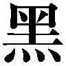鐵》という名前の、機巧魔神が──
一章
どこまでも果てしなく落ちていくような感覚があった。眠っているとき、不意に全身がビクッと引き攣るような、そんな落下の恐怖感がいつまでも続いている。
世界の境界を越える瞬間、僕が感じていたのは、それによく似た不快な錯覚だった。
「──鐵ッ！」
その恐怖感を振り払うように、僕は自らの機巧魔神の名前を呼ぶ。
機械仕掛けの悪魔の巨大な腕が、僕たちの身体をしっかりと抱きしめ、漆黒の重力障壁で保護してくれている。銀色の籠手をつけた漆黒の腕が巨大な剣を握りしめ、世界の境界を切り裂くように、虹色の軌跡を描いている。 塔貴也に無理やり吹き飛ばされた前回とは違う。僕は、今、自分の意志で世界を移動しようとしているのだ。
塔貴也に無理やり吹き飛ばされた前回とは違う。僕は、今、自分の意志で世界を移動しようとしているのだ。
僕たちが本来いるべき世界へと──
永遠に続くかと思われた落下感は、やがて唐突に消失した。
その直後に襲ってきたのは、衝撃だった。巨大な津波に巻きこまれたように、為す術もなくその衝撃に翻弄されて、僕は地面に投げ出される。
芝生と砂利が容赦なく僕の皮膚を削って、おちおち気絶することも許してもらえなかった。硬い地面の感触を確かめながら、僕はのろのろと上体を起こした。船酔いしたみたいにグラグラと視界が揺れていたが、周囲にあるのは見慣れた街の風景に思えた。
「二巡目の世界？ 成功したのか......!?」
弱々しく呻く僕の影の中に、漆黒の機巧魔神が沈んで消えていく。その《鐵》の腕から飛び降りたのは、金髪の小柄な少女だった。ドリルビットを思わせる見事な巻き毛に、赤いマフラーをなびかせた女子高生──アニアだ。
「私が手を貸してやったのだから、当然だ......と言いたいところだが......」
彼女は軽やかに地面に降り立つと、碧い瞳で周囲を睥睨した。そして唇を歪めて僕を見た。
「やりすぎだ、馬鹿者。おまえは加減というものを知らないのか、このバカオロカ」
「え？」
どうして罵倒されているのか理解できずに、僕も慌てて周囲を見回す。
僕の頭上にあったのは、冬枯れの大きな桜の木だった。ほぼ同じ場所から生えた二本の巨大な幹が、絡み合うようにして大きく枝を広げている。
その背後には、煉瓦造りの巨大な建物──
怪物が出るといわれたら素直に信じてしまいそうな、不気味な古い洋館だ。
鳴桜邸。それがその洋館の名前だった。
「桜が......二本？ どうして鳴桜邸が!? 部長たちに爆破されたはずじゃ......」
僕は唖然として呟いた。〝二巡目〟の世界の鳴桜邸は、塔貴也の陰謀によって僕たちの目の前で爆発炎上し、瓦礫の山へと変わっていたはずだった。
そのせいで僕は、数日ほど警察に追われる羽目になったのだ。見間違うわけがない。
「だからやりすぎだと言ったのだ」
アニアが溜息をつきながら首を振る。
「おまえ、一巡目の世界の鳴桜邸ごと、こちらの世界に跳んできたな、バカ智春」
彼女の指摘に、あ、と僕は絶句した。言われてみれば、僕たちの目の前にある洋館は、本来この世界にあった鳴桜邸とは微妙に違っていた。たとえばカーテンの柄や、壊れた壁の補修の痕跡など。実際に住んでいる人間にしかわからない微妙な差だが、たしかに違う。
ここにあるのは、爆破されたこの世界の鳴桜邸ではない。〝一巡目〟の世界でアニアが住んでいたほうの鳴桜邸だ。どうやら僕は、自分たちが過去に戻るついでに、この屋敷を丸ごとこちらの世界に持ってきてしまった、ということらしい。
「鐵の重力障壁に巻きこんじゃったのか。この建物を丸ごと全部？」
「演操者のくせに、自分の機巧魔神の力の加減もできないのか、おまえは」
「そんなこと言われても、こっちだって自力で異世界に移動するのは初めてなんだよ」
呆れ顔のアニアに責められて、僕はぼそぼそと言い訳する。
僕の背後にゆらり、と現れた操緒が、復活した鳴桜邸の姿を面白そうに見上げて、
『まあ、いいんじゃない。とりあえず今夜の寝床は確保できたってことで』
いつもの無責任な口調でそう言った。重力を無視して空中をふわふわと漂いながら、幽霊の少女は、ふわ、と小さくあくびをする。
「たしかに私たちはべつに構わんが......」
アニアが渋面になってそう言った。
その直後、屋敷を取り巻くブロック塀の向こうから、恐怖の悲鳴が聞こえてきた。通りすがりの中年女性が、再生した鳴桜邸に気づいて、絶叫しながら逃げ出していく。
「爆発して廃墟になってたはずの建物が、いきなり元の姿に復活してたら驚くよな。ただでさえ近所の人たちに不気味がられてたっていうのに......」
僕はがっくりと肩を落として溜息をついた。アニアも重々しい表情で首肯して、
「もはや化け物屋敷以外の何物でもないな」
しかし操緒だけは、むしろ騒ぎを楽しんでいるように悪戯っぽく笑って、
『まあ、やっちゃったものは仕方ないよ』
「そんな気楽な......立ち退き要求の署名とかされたらどうするんだよ。せっかく嵩月が潮泉の爺さんに頼んで、爆破事件のことを揉み消してくれたのに──」
そう言いかけて、僕はハッと顔を上げた。もう一人──〝一巡目〟の世界から一緒に帰ってきた仲間は、もう一人いるはずなのだ。
「そうだ、嵩月は......!?」
慌てて周囲を振り返る。棺桶に似た形の生命維持カプセル。青い溶液を満たしたその水槽の中に、嵩月は仮死状態で眠っているはずだった。密閉された金属製のカプセルは、桜の根元に、月光を浴びながら横たえられている。
「嵩月......！」
僕はそのカプセルへと駆け寄ろうとした。その直後、突然バランスを崩して転倒する。手を突いて立ち上がろうとするが、両腕が思うように動かない。再びその場に突っ伏して呻く。
『......智春？』
僕の身体に起きた異変に気づいて、操緒がふわりと降下してきた。だが僕は彼女の呼びかけに答えられない。
「ぐっ!? ぐあ......」
全身を凄まじい激痛が駆け抜けて、僕はそのまま地面の上でのたうち回った。身体中の骨という骨が軋み、筋肉という筋肉が引き攣る。極度の筋肉痛と成長痛が一度に襲ってきたような苦痛だった。
「なんだ、これ。痛い......身体が......」
苦悶の表情を浮かべて、僕が呻く。しかし操緒は、緊張感のない態度で首を傾げ、
『どうしたの、智春？ 筋肉痛？』
「ぎっくり腰か？」
アニアが素っ気ない口調で言う。ははーん、と操緒も、なぜか納得したように目を細め、
『あー......なんだ、そういうこと。やりすぎだね』
「うむ。やりすぎだな」
やけに冷ややかな表情で、苦しむ僕を突き放したように見下ろす二人。
『調子に乗って何回もやるから。初めてだったくせに、やらしい』
「ちょっと待て。おまえら、なんの話をしてるんだよ!?」
わけがわからず僕は訊き返す。
『なんの話って、ねえ......』
そう言って操緒は、意味ありげな視線を、嵩月が眠っているカプセルへと向けた。
「あれだろう、おまえと奏が、中央渦界域で、せ......」
「わああああああああっ！」
僕は絶叫でアニアの言葉を遮った。このガキ、どさくさに紛れてなにを言おうとしたんだ、今。
「それは関係ないだろ、今は！ 全然！ てか、そんな何回もやってない！」
『でも、一回ってことはないよねえあれは」
いつになく無愛想な表情で、なにかを指折り数え始める操緒。
僕は全身の苦痛に耐えながら、どうにか立ち上がり、
「何数えてんだよ！ やりすぎとかじゃなくて、全身が......焼けるように......」
『んー、なんだろ？ 天罰？』
「うむ、神の裁きだな」
操緒とアニアはとりつく島もない。
「なんでそうなる......」
どうして彼女たちが怒っているのか理解できずに、僕は途方に暮れた。二人にこんな冷たい仕打ちをされるようなことをした心当たりはないのだが──
「心配するな、智春。それはただの反動だ。すぐに治まる」
さすがに僕のことが哀れになったのか、アニアが面倒くさそうに口を開いた。
「反動？」
「〝一巡目〟の世界で悪魔化した肉体が、〝二巡目〟に戻ってきたことで再びただの人間に戻ろうとしているんだ」
「そうか......この筋肉痛みたいなのは、悪魔化した状態で能力を使った反動ってことか......」
僕は〝一巡目〟の世界で自分が使った、悪魔としての能力のことを思い出して呻く。財団の量産機を一瞬で破壊し、ダルアの使い魔を傷つけた、対消滅能力を持つ黒い魔精霊。あんな怪物を生み出すような膨大な魔力の放出に、人間の身体が耐えられるはずがない。違う世界に飛ばされて、悪魔化していたから平気だったのだ。
しかし本来の自分の世界に帰還したことで、僕の身体は普通の人間へと戻った。そのせいで、悪魔化していたときの反動が今ごろ襲ってきた、ということらしい。
だが、僕が普通の人間に戻ったということは──
「あ......」
踏み出そうとした足に激痛を感じて、僕はその場に再び倒れこんだ。
そんな僕の身体を、不意に柔らかな感触が包みこむ。水滴をしたたらせている長い黒髪が、僕の頬を優しく撫でた。金属製のカプセルの蓋が開いて、その中で眠っていた美しい少女が、倒れこむ僕の身体を支えてくれていた。人間離れした美貌を持つ、炎使いの悪魔の少女──
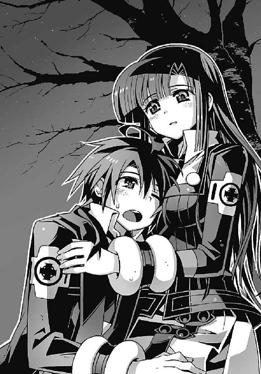
「あの......大丈夫？」
嵩月奏が互いの息がかかるほどの至近距離から、心配そうな表情で、僕のことをのぞきこんでいた。そんな彼女の両目が、淡い緑色に輝いている。
悪魔は、この世界の人間の持つ愛情と引き替えに、自らの魔力を行使する。僕が普通の人間に戻ったことで、悪魔である嵩月と僕の契約は成立した。
彼女が非在化して消えることはもうないのだ。僕が彼女への想いを忘れない限り──
「嵩月......よかった」
僕は彼女の胸に抱かれたまま、安堵の息を吐く。嵩月は少し照れたように頬を赤らめると、
「はい」
そう言って柔らかく目を細めた。
○
「......彼女は死んだのかい。完全に非在化する前に......？」
それは僕たちの感覚の中では、ほんの数時間ほど前の出来事だ。
重力が生み出す闇色の異空間。超弦重力炉の底に沈んだ次元潜行チェンバー〝うずしお〟の内部。クラウゼンブルヒ財団との戦いで絶命した傷だらけの嵩月を見下ろして、
「ふーん。運が良かったね」
本物の夏目直貴はそう言った。
僕は信じられない気分で、彼の言葉を聞いた。こみ上げてくる怒りを抑えきれずに、激しく肩を震わせる。嵩月は僕を庇って死んだのだ。機巧魔神の母艦であり、世界の崩壊を止めるために造られたこの〝うずしお〟を守るために。
「運が......良かった？」
僕は怒りに顔を歪めて、見た目には年下の直貴を睨む。しかし直貴は平然と首肯し、
「そうさ。最初にそう言ったじゃない。きみの選択肢がひとつ増えた、って」
「選択肢......!?」
「ああ」
両腕に嵌めた無数の時計を弄りながら、直貴が笑った。腕時計の回転式ベゼルがカチカチと耳障りな音を立てる。
「さあ......そろそろ時間だ。答えを聞かせてもらおうか、夏目智春？」
「なんだよ、それは!? あんたはいったいなにを言って──」
僕が直貴を見つめて声を荒らげた瞬間、直貴が身に着けていた時計たちが、一斉にカチリと音を立てて止まった。そして、時間が静止したかのような静寂が訪れる。
どこか遠くで鐘の音が鳴り始めた。
教会の鐘楼のような、重々しい音色。その音色が波のように押し寄せてきて、僕の視界が、ゆらりと揺らいだ。
「なんだ!?」
眩暈のような不快な感覚に襲われて、僕は膝を突きながら呻いた。
『見て、智春──！』
操緒が、そう言って僕の背後を指さした。
教会の聖堂を思わせる石造りの壁。その柱の隙間には、透き通った少女たちの彫像が並んでいる。しかし美しかった彼女たちも、今は無惨に崩れ落ち、ほとんど原型を留めていなかった。財団の襲撃によって破壊されたのだ。
だがその傷ついた彼女たちの姿に、予期せぬ異変が起きていた。
「副葬処女の像が......直っていく？」
僕は呆然とその異変を眺めた。砕け散った彫像がビデオの逆再生のようにゆっくりと再生し、傷ひとつ存在しない元の上体へと戻っていく。
あまりにも非現実的なその光景に、ぞっとするような感覚を味わいながら、僕はうっすらと笑っている直貴に気づく。
「これって、いったい──」
「最初に言わなかったか、智春？ このクライン空間......次元潜行チェンバーの中では時間がループしてるって」
「時間が......ループ......」
完全に再生を終えた副葬処女像を眺めて、僕は息を呑んだ。彼女たちは再生したのではなく、最初の状態に戻ったのだと直感的に理解する。破壊される前の本来の彼女たちの姿へと。
「そうか......時間の流れが外とは違う、ってのは、こういうことだったのか。ここは同じ時間を無限にループしている世界、だとかなんとか......」
「そうだよ。トータルで九千九百九十九秒間。それがこの世界に存在する時間のすべてだ」
直貴が、無数の腕時計を嵌めた両腕を、僕に見せつけるように掲げてみせる。
「そのリミットを過ぎた瞬間、この世界の時間は巻き戻る。量子化して時間軸から切り離した僕たちの記憶以外のすべては、九千九百九十九秒前の状態に復帰する。破壊された彫像も、致命傷を負った悪魔の少女も──」
「悪魔の少女......!?」
僕はハッとして自分の腕の中にいる嵩月を見下ろした。そこには傷ついて絶命していた悪魔の少女の姿はなく、代わりに困ったような表情で僕を見上げている嵩月がいた。
生き返った、というよりも、死ぬ前の状態にリセットされたのだ。彼女がこの〝うずしお〟に入ってきた初期状態へと。
「あ......あの......」
僕に抱きしめられていることに気づいて、嵩月が頬を赤らめる。しかし僕は彼女を放すことができなかった。腕をほどいたら、そのまま彼女が消えてしまいそうな気がしたからだ。
「よかった......嵩月......」
思わず涙声になって、僕はそう呟いた。
「夏目くん......」
心配させたことを詫びるように嵩月が目を伏せる。
普段なら僕たちを茶化してくるはずの操緒は、めずらしく何も言わなかった。ただ寂しげに微笑んで僕たちを見下ろしているだけだ。
「感動の場面に水を差して悪いんだが、まだ何も問題は解決してないんだ」
沈黙を破って呟いたのは、直貴だった。鐘の音はいつの間にかやんでいた。時間が完全に巻き戻って、再び流れ始めたのだ。
「この空間の中にいたから今は復活することができたけど、外に出れば彼女は消滅する。非在化が進みすぎたんだ。おそらく正常な時間の中では、彼女はもう──」
「......わかってる」
僕は直貴の言葉を遮った。非在化の進行した悪魔の身体に戻ったことで、嵩月の運命は決まってしまった。この〝うずしお〟の外に出てしまったら、嵩月はすぐに消滅する。彼女が生きていられるのは、時間がループしているこの狭い異空間の中だけだ。
「きみに与えられた選択肢はふたつだったな、智春。〝一巡目〟の世界に残って大人しく滅びを受け入れるか。それとも元の世界に戻って、塔貴也にイグナイターを渡すか」
直貴は冷たく微笑んで、僕に選択を突きつけた。
しかし僕は首を振る。
「僕は、どちらも選ばない」
「そう......それが新たにきみが手に入れた第三の選択肢だ。彼女がきみにそれを与えてくれた」
直貴はうなずいて、僕に支えられたままの嵩月を見た。そして冷ややかに告げる。
「だけど、きっと後悔することになるよ。その結末を選んだことを」
「それでも......もう決めたんだ」
僕は迷いのない視線を直貴に向けた。
直貴は諦めたように首を振って、仕方ないな、と頭をかく。
「やれやれ。また、鐵を修理しなければいけないのか。面倒だな」
そうか、と僕は直貴を見返した。時間がループしているということは、彼が修理した《鐵》も、壊れた状態に戻ってしまったということだ。僕が一度この〝うずしお〟の外に《鐵》を喚び出して、ループの初期状態をリセットするまで、直貴は延々と《鐵》の修理を続けなければならない。時間がループしているというのは、いいことばかりではないらしい。
「まあ、今度は邪魔も入らないだろうし、ゆっくり修理してくるよ。アニア・フォルチュナと水無神操緒。きみたちにも手伝ってもらおう」
「え？ 僕たちは......」
「ほら」
直貴は僕の質問には答えずに、左腕に嵌めていた腕時計を一個外して、僕に放り投げた。時計の針は九時十四分を指していた。残り二時間と四六分で、十二時ちょうど──
それが〝うずしお〟の中の時間の流れが再びリセットされるまでのタイムリミットだと僕は気づく。直貴は、僕と嵩月に、その時間を与えてくれたのだ。
「行くよ、クロエ」
幼い姿をした直貴が、自分の使い魔である巨大なフクロウの名を呼んだ。フクロウが大きく翼を広げると、その内側に、空間を移動するためのゲートが開いた。機巧魔神の格納庫へと続くゲートだ。
「智春......」
アニアが僕の前に屈みこみ、いつになく真剣な表情を浮かべてみせた。
「奏は、もうここからは出られない。もし、今の奏を〝二巡目〟の世界に連れ戻せば、私の姉様のように消滅する。〝一巡目〟の世界に残しても、いずれは......だから」
「心配ないよ、アニア。そんなことはさせない」
約束したんだ、と僕は呟いた。たとえ時間がリセットされたとしても、死の直前の嵩月と交わした契約を僕は忘れてはいなかった。そう、絶対に忘れない。これから先も。どんなことがあっても──
「自分がなにをすればいいのか、わかっているんだな」
ふん、とアニアが普段と同じ不機嫌そうな表情で訊いてきた。
「え、ああ。いや、たぶん」
腕の中にいる嵩月と目を合わせ、僕は声を上擦らせた。嵩月が非在化してしまうのは、彼女が契約者を持たないせいだ。彼女に魂を分け与える人間がいれば、非在化は免れる。だがそれは彼女の命の重さを僕が背負い続けるということでもある。悪魔との契約によって僕が手に入れるであろう、強大な力と引き替えに──
その運命の重大さに対して、僕がかすかな逡巡を覚えたとき、
『すけべ』
僕の耳元で、操緒がこっそりと囁いた。なっ、と僕は絶句する。そういうことで悩んでいたわけじゃない、と言い返そうとしたときには、操緒はとっくに僕から離れてしまっている。
「おまえは、いいのか？」
ひどく意外そうな表情を浮かべて、アニアが操緒を見上げた。
操緒はどこか不敵な笑みを浮かべ、
『いいよ、もちろん。だって智春は──』
誰にともなく呟く操緒の言葉は、途中で途切れて声にならない。けれど、
最後はあたしのところに帰ってくるからね、そんなふうに呟いたように僕には見えた。
○
〝二巡目〟の世界は夜だった。間もなく深夜零時になるところだ。
さすがに十二月の寒空の下、いつまでも外をうろついているわけにはいかず、ほかに行く当てもない僕たちは、仕方なく鳴桜邸の中に戻っていた。
『やっぱり自分ん家がいちばん落ち着くねえ』
のんきな口調でそんなことを言いながら、空中で背伸びしているのは操緒だ。
「家族旅行から帰ってきたお父さんかよ、おまえは」
僕はうんざりと溜息をつく。実際、鳴桜邸の中の状況は、操緒が言うほど快適ではなかった。ついさっきまで廃墟と化していたのだから当然といえば当然だが、電気もガスも止められてしまって照明すら使えない有様だ。ロウソクの頼りない光に照らされている操緒の姿は、本物の幽霊を見ているようで、落ち着かないこと甚だしい。
「だいたいここは自分ん家っていうか〝一巡目〟の世界の......操緒？」
気のせいか、いつもよりさらに影の薄い操緒を見上げて、僕は眉を寄せた。
操緒はどこか眠そうに目を擦りながら、
『んー......ごめん。あたし、眠いから寝るね......』
「あ、おい......操緒？」
呼び止める僕に答えずに、彼女はすっと姿を消した。本当に眠ってしまったらしい。
操緒が消えた天井近くを見上げたまま、僕はやれやれと溜息をついた。
アニアはソファに寝転がったまま、そんな僕を見つめていたが、
「智春......おまえに言っておくことがある」
不意に声を低くしてそう言った。
「アニア？」
奇妙に重苦しい彼女の口調につられて、僕は無意識に姿勢を正す。
アニアは、かすかに苦悩するような表情を浮かべて、
「鐵は、もう使うな」
「え？」
「たとえ新しい鐵の力をもってしても、世界間の移動は膨大な量の魔力を消耗する。操緒の魂は、たぶんおまえが想像している以上に消耗しているはずだ。あいつは頭のいい女だから、それをおまえに気づかせないようにしているだけで」
そう言ってアニアは深い溜息をついた。悲しげな光をたたえた碧い瞳を、ゆらゆらと揺れるロウソクの明かりが照らし出す。
「だから鐵はもう使うな。使うとしても、あと一度だけ......それが限界だ」
「そうか」
僕は小さく頷いた。《鐵》が使った魔力の代償として、操緒はこれまでにも自らの魂を相当削っているはずだ。そして機巧魔神の設計者であるアニアは、そのことに責任を感じてもいるのだろう。
だがそれでも部長と戦うことになったら、僕たちは否応なく《鐵》に頼ることになる。だから、あと一度だけ、とアニアは言ったのだ。それが彼女の最大限の譲歩というわけだ。
「わかったよ。覚えとく......でも、約束はできないよ、アニア」
「私の忠告が聞けないだと？」
アニアの端正な顔立ちが、ぴき、と怒りで強張った。その剣幕に軽い恐怖を感じながらも、
「前に操緒と約束したんだ。誰かを救うために力が必要なら、僕は迷わず鐵を使うよ。でないと部長は止められないし──」
僕はアニアを見返してそう告げる。
部長は自らの目的を果たすために、冬琉会長や鳳島氷羽子を、容赦なく利用するだろう。そんな彼を止めるためには、僕にも覚悟が必要なのだ。
操緒や嵩月の命を賭ける覚悟。そしてその罪を背負う覚悟が。
愛する者の魂と引き替えに願いを叶える。それが悪魔の力の本質なのだから──
「智春、貴様、自分が何を言っているのかわかっているのか。おまえも塔貴也と同じように、操緒や奏の命を使い捨てる気か？ ずいぶん勝手な話だな？」
「違う......」
それまで黙っていた嵩月が、興奮するアニアをなだめるように、彼女を背後から抱きしめた。むっ、と困惑したように動きを止めるアニア。そして嵩月は、アニアに言い聞かせるように、彼女の耳元で、
「夏目くんは、あの人とは違う、から。誰も犠牲にしたりしない。絶対に」
「なぜそう言い切れる？」
アニアが不機嫌そうに嵩月を見上げて聞き返す。嵩月は少し困ったように微笑んで、
「わたしがそう信じてる、から......水無神さんも、きっと」
ほとんどアニアにしか聞き取れないくらいの声でそう囁いた。
アニアはますます不機嫌な顔になって、むっつりと嵩月を睨んでいたが、不意に振り返って僕のほうに身を乗り出すと、
「がぶっ」
いきなり僕の腕に噛みついた。
「痛っ......なにすんだよ、アニア!? 噛むな！ 吸うな！」
「ふるさいっ、智春の分際で私に口答えなどするからだ。生意気な！」
「どんな言いがかりだよ!?」
アニアは犬歯を突き立てたまま、僕の腕から運気的ななにかを吸えるだけ吸い取り、
「奏、おまえもだ。非在化から回復したばかりで、まだ体調は完全ではないくせに。だいたい肝心の契約者がこんな頼りないやつでは......ええい、デレデレしおって」
きいいいっ、と歯がゆそうに髪をかきむしり、再び僕の耳に噛みついてくるアニア。
「べつにデレデレしてなんかないだろ......！」
耳にかかるアニアの吐息に抵抗する気力を奪われながらも、僕は必死で言い返す。ついこないだまでは十歳のガキんちょだったから噛まれてもあまり気にならなかったが、十五歳に成長した今のアニアにのしかかられると、どう抵抗していいのかわからない。
「それで、これからどうするつもりだ、智春？」
いいように弄ばれてぐったりソファに倒れた僕を見下ろし、アニアが醒めた口調で訊いた。
「これから？」
「具体的にどうやって世界の滅びを止めるんだ？」
イライラと白い歯を剥いて唸るアニア。
「さあ......？」
「さあ!?」
「いや、だってこっちに戻ってきたばかりだし、とりあえず情報を集めないと。部長たちがどこでなにをしているのかもわからないし」
「情報か......たしかにそれは必要だな」
ふむ、とアニアは腕組みしてうなずいた。
「で、どうやって塔貴也の行動を調べるつもりだ？」
「え？ それは考えてなかった......けど......とりあえず部長の携帯に電話してみるとか？」
「ば......馬鹿者！」
アニアのこめかみのあたりで、血管が切れるような音がした。制服の懐に手を突っ込んだ彼女が、なにかを取り出し、僕に向かって投げつけてくる。
それは奇妙な紋様が描かれた呪符だった。アニアの確率操作能力によって、マイナスの運気をたっぷりと溜めこんだ呪いの御札だ。ギリギリでそれに気づいて、僕は慌てて飛び退いた。
「うわっ!?」
アニアが放った呪符は、僕が寝そべっていたソファに貼りつき、ソファの運気を吸って変色する。その直後、メキ、という鈍い音を立ててソファの木枠がへし折れた。不幸にも、僕が飛び退いた反動で、木枠を固定していたネジが外れたらしい。偶然ではない。これが運喰らいと呼ばれるアニアの能力なのだ。
「わざわざ私たちが戻ってきたことを教えてどうする！ 今やつらに襲撃されたら、手も足も出ないぞ。イグナイターをみすみす向こうにくれてやるようなものだろうが！」
「わかったよ！ わかったから、その御札はやめろっ」
新たな呪符を構えるアニアを、僕は必死でなだめすかす。アニアは、ちっ、と舌を鳴らして、
「とにかく、奏と操緒の体力を回復させないことには身動きがとれないな......今夜のところは、ここで休んでおくか。塔貴也たちも、この鳴桜邸はノーマークのはずだからな」
ああ、と僕は納得する。僕たちが〝一巡目〟の世界から戻ってくるまで、この屋敷は完全な廃墟と化していたのだ。さすがの部長も、まさかそんな場所で僕たちが寝泊まりしているとは思うまい。下手に出歩くよりは、よっぽど安全なはずだ。
「あの......だったら......わたし、着替えてきても？」
嵩月が怖ず怖ずと手を挙げながら質問した。
「着替え？ ああ、そうか......」
そういえば嵩月はついさっきまで、怪しげな溶液を満たしたカプセルの中に漬けられていたのだった。濡れていた服や髪はもう乾いていたけれど、着替えたい気持ちはよくわかる。
気を遣っている嵩月を追い払うように、アニアは手を上下に振って、
「行け行け。水道とボイラーは使えるようだし、ついでに風呂にも入って、さっき抱きつかれてこびりついた智春臭を落としてくるがいい。そのままにしておくと不幸が伝染るぞ」
「智春臭ってなんだよ!? 伝染らないよ！」
僕は顔をしかめて言い返す。アニアは、ふん、と鼻を鳴らして、
「いいや、伝染するな。爆発的感染拡大の危機だ」
「くっそ......他人の不幸を伝染病みたいに......」
僕が不満げに嘆息したその直後、テレビの上の古い置き時計が音を立てた。短針と長針が重なって、日付表示が新しくなる。十二月二十二日。深夜零時。
「日付が変わったか」
アニアが表情を険しくして呟いた。
「クリスマスにはギリギリ間に合ったが、一カ月近くの間、私たちはこの世界を空けていたことになるな。塔貴也がその間、なにもしてなかったとは思えないが......」
「......そうか、樋口」
僕は携帯電話を取り出した。む、とアニアが警戒して再び呪符を構える。だからその御札はやめろってば。僕はじりじりと後退しながら、メモリーしてあった電話番号を呼び出した。
「樋口に電話して訊いてみる。あいつなら、この街で起きた異変には詳しいし、もしかしたら部長の動きもつかんでいるかも」
「なるほど。困ったときのワラ頼みというわけだな」
アニアが、いちおう納得したようにうなずいた。僕は苦笑し、
「なんかそれは微妙にいろいろ間違ってるような気が......うわっ!?」
通話ボタンを押そうとした瞬間、僕の携帯が振動し、いきなり着信音を鳴らし始めた。逆に誰かから電話がかかってきたのだ。液晶画面に表示された通話相手の名前は──
『智春！』
「ひ、樋口!?」
『帰ってきてたのか!? おまえ、今までどこに行ってた!?』
いきなり電話口から聞こえてきた樋口の声に、僕はわけもなくうろたえた。〝一巡目〟の世界の樋口とは、ほんの数時間前に別れたばかりなのに、〝二巡目〟の樋口と会うのは約一カ月ぶりということになる。頭が混乱してどうにかなりそうだ。
「あ、いや......それは、話すと長くなるんだけど......」
『まあいいや。それよりも外見ろ、外！』
僕の言い訳を適当に聞き流し、興奮した口調で樋口が叫んだ。
「外って......？」
『上だ！ 南天の方角』
「空？ そんなところになにが......？」
『いいから見てみろって。すげえから──！』
寒いのに嫌だなあ、と思いながら僕は仕方なく窓を開けた。錆びた窓枠から身体を乗り出し、樋口に言われたとおり空を見上げる。空は意外によく晴れていたが、市街地の光に邪魔されて、それほど多くの星が見えるわけではない。月はすでに沈んでしまったのか、僕の目に映る範囲には見あたらなかった。だが──
「智春！ 見ろ！」
「え......？」
僕の小脇から子猫のようにヌッと顔を出して、アニアが叫んだ。近所の迷惑というものを、まるで顧みない大声だったが、僕は彼女を咎めることができなかった。呆然と目を見開いて、僕は絶句していたからだ。
闇色に澄んだ空の彼方、そこには虚空の裂け目から突き出した銀色の腕が浮かんでいた。
本来そこにあるべき月よりも、さらに巨大な──機械仕掛けの巨大な腕が。
銀河系の渦状腕部が機械の身体を手に入れて、そのまま実体化したような、天体とも人工物ともつかぬ異形の姿。宇宙という名の深淵から伸ばされたそれは、まさしく神の腕としか形容できない存在だ。
電話口の向こうで樋口がなにか騒いでいたが、僕はそれを聞いてはいなかった。
「〝神〟......！」
ただアニアの静かな呟きだけが、やけに大きく僕の耳に反響する──
○
「なんで〝神〟が〝二巡目〟の世界に......!?」
夜空に浮かぶ巨大な腕を見上げたまま、僕は掠れた声で呻いた。
中央渦界域で見た異世界の風景が、恐怖の記憶とともに脳裏に甦る。邪魔な枝を払いのけるように、世界そのものを破壊していた機械仕掛けの〝神〟の腕。やつがこの世界に出現するのを防ぐために、〝一巡目〟の世界の僕は過去に戻ったはずだった。なのに──
「ばかな......早すぎる......〝二巡目〟ではまだ超弦重力炉は稼働してないはずだ！」
握りしめた拳を震わせながら、アニアが呻く。
僕はなにも言い返せないまま、ただ呆然と空を見上げた。機械仕掛けの巨大な腕は、まるでそれ自体が太陽系のひとつの天体であるかのように、静かに夜空に浮かんでいる。あまりにも非現実的で幻想的で、美しいとすら思える光景だ。
肉眼で見える腕の大きさは、おそらく満月よりも一回り大きい程度。だが実際にはあの腕は、月軌道よりも遥かに遠い場所に存在しているのだ。それがどれほどの大きさなのか、想像することもできなかった。そしてその巨大な腕が、突然、すっと夜空に溶けこむように消えた。
「あ......」
僕は〝神〟が消滅した夜空を見回すが、どれだけ目をこらしても、虚空に浮かぶ巨大な腕はもう見つからなかった。
『......なあ、見たか？ なんだと思う、あれ？ 二、三日前から、世界中で、何度か目撃されるようになったんだけどさ、オカルト専門家の間でも意見がわかれてるんだよ。もちろん政府機関は公式には存在を認めてないしな──おい、智春？ 聞いてるか？』
携帯電話のスピーカーから、樋口の騒ぐ声が聞こえてくる。
「あ......うん、聞いてる、けど......」
『集団幻覚って説が今のところ有力なんだが、写真やビデオにも記録されてるって噂があるし、巨大な質量の存在が確認されたとか、されてないとか──」
「待った、樋口。おまえ、今どこにいるんだ......？」
樋口の声に違和感を覚えて、僕は訊き返した。携帯電話から聞こえてくるやつの声に、変なエコーがかかっている気がする。
『俺？ 今、おまえん家の前に着いたとこだけど？』
「は!? なにやってんだよ、こんな夜中に一人で!?」
僕は唖然としながら、屋敷の玄関へと向かった。
どうしてこんなふうにいきなり樋口が、廃墟と化していたはずの鳴桜邸を訪ねてくるのだ。まるで僕たちが、この時間、この場所に戻ってくることを、あらかじめ知っていたかのように。
そして樋口は、そんな僕の疑問に平然と、
『ん？ べつに一人ってわけじゃないが？』
「え？」
「智春！」
僕が樋口に訊き返すよりも先に、鳴桜邸の玄関ドアが勢いよく開いた。そして洛高の制服を着た、小柄な女子生徒が飛びこんでくる。
「杏......!? なんで!?」
大原杏の姿を呆然と見返して、携帯電話を握りしめたまま僕は硬直した。
「なんで、じゃない！」
杏は、そんな僕の胸ぐらをつかんで、ぐい、と引き寄せる。
「どこに行ってたのよ。一カ月も連絡を寄越さないで、勝手にいなくなって！ それにこの家、どうなってるの？ 爆発して壊れてたんじゃ......怪我は!? ちゃんとご飯食べてたの？」
「あ、杏......苦しい、息が......」
杏の襟締めを喰らって酸欠状態になった僕が、朦朧とした意識の中で呻く。非常によくない状況だった。なんの言い訳も考えていないこの段階で、事情を知らない杏たちと遭遇するというのはとにかくまずい。問い詰められたら間違いなくボロが出る。いっそこのまま気絶してしまおうかとも思う。
しかしさらに間の悪いことに、玄関での異変を聞きつけた嵩月が、慌てて浴室から出てくる気配がした。制服のブラウスのボタンは留めかけ、濡れた髪にバスタオルを巻いたまま、という姿で飛び出してきた嵩月は、
「──な、夏目くん!?」
いきなり杏に首を絞められている僕を見て、混乱したように動きを止め、
「あれ？ 嵩月？」
「え、ええ──っ!? なんで嵩月さんが、こんな時間に智春ん家で、お、お風呂......」
そんな嵩月を見て、今度は杏が絶句する。息をすることも忘れて、口をぱくぱくと開け閉めする杏を、心配そうに樋口が見つめて、
「落ち着け、大原。酸欠で倒れるぞ？」
「だ、だって......」
こぼれそうなほど大きく開いていた杏の目が、さらに限界を超えて見開かれた。なんの騒ぎだ、と言いたげに廊下に顔を出した金髪の少女を見てしまったのだ。
「え、ええっ......ニアちゃん!? なんでそんな大きく......あ、あたしより背が高い......」
「む......杏？」
思いがけないタイミングで遭遇してしまった杏に、アニアもめずらしくうろたえて、
「う、うむ......成長期だからな......」
「成長期って......そんな、いくらなんでも......」
あまりにも苦しいアニアの言い訳に、さすがの杏も不審そうに目を細めた。しかしアニアは、あくまでも堂々とした態度を崩さず、
「まあ、我が一族にはよくあることだ。日本人には、めずらしく思えるかもしれないが」
「そ、そういうものなの？」
アニアのきっぱりとした物言いを、杏は困惑しながらも受け入れたらしい。基本的に素直な性格なのだ。
「はー......世界は広いね」
びっくりしたような顔で呟く杏を眺めて、順応性高いなあ、と僕は溜息をつく。
「それよりも、杏たちはなにをやってたんだよ。こんな時間まで制服で出歩いて......」
ようやく杏の襟絞めから解放されて、僕は軽く咳きこみながら訊いた。杏は少し心外そうに頬を膨らませて、
「出歩いてたんじゃなくて、学校にいたの」
「クリパの準備で、学校に泊まりこんでたんだよ。舞台の大道具とか衣装作りとかでな」
樋口の言葉に、僕は〝一巡目〟の世界で見た洛高のお祭り騒ぎを思い出す。ミッション校である洛高では、クリスマスパーティは文化祭以上の盛り上がりを見せる名物だという話だった。
「そうか......クリスマスパーティ......」
「このクソ忙しいときに、おまえも嵩月も操緒っちもガキんちょもいなくて大変だったんだぜ。クリパ当日は、おまえら死ぬほど働いてもらうから、覚悟しとけよ」
「ああ......うん」
樋口にがしがしと頭を揺さぶられながら、僕は軽いウラシマ気分を味わっていた。さすがに一カ月ぶりにヨソの世界から帰ってくると、知らないことが増えすぎていて困る。そうか。うちのクラスの出し物は演劇か。
「......どうして学校に泊まりこんでいたはずのおまえらが、ここにいる？」
アニアが怪訝そうに樋口を睨んで訊いた。ああ、と樋口は自分の携帯電話を軽く掲げて、
「教えてもらったんだよ。智春たちが帰ってきてるって。大原は、おまえたちのことをずっと心配してたから、ついでに連れてきたんだけど」
「......教えてもらった？」
「正直信じてなかったんだけど、驚いたぜ。なんで、この屋敷、元に戻ってんだ？ どういうトリックを使ったんだ？ それとも本当に幽霊屋敷の呪いか？」
樋口は興味津々といった表情で、復活した鳴桜邸の中を見回した。アニアは、そんな樋口をイライラと眺めて、
「待て、樋口。誰がおまえに、私たちのことを教えたんだ？」
「んあ？ 黒崎先輩だけど。携帯にメールが送られてきて」
「朱浬......さん？」
髪を拭いていた嵩月が、唖然とした表情で樋口を見た。アニアが憤慨したように、歯を剥きながら樋口に詰め寄って、
「馬鹿な！ そんなことがあるわけがないだろうが......！」
「え？ なんだ、おまえらが頼んだんじゃなかったの？」
「まだ言うか、貴様！ ええい、放せ、智春！」
まあまあ、と僕は興奮するアニアをなだめながら、
「どういうことだ、樋口？ 朱浬さんがメールするなんて、そんなことあるはずがないんだよ。だって、あの人は......もう死んでるのに......」
「え!?」
ぽかん、とした表情を浮かべて僕を見返したのは杏だった。
「死んだって......いつ？」
樋口もどこか間の抜けた顔で訊いてくる。僕はつらい記憶を呼び覚ましながら、唇を噛んで、
「え......と、だから、この屋敷が爆破された翌日に......」
「は？」
怪訝そうに顔を見合わせる樋口と杏。
「黒崎先輩なら、こないだ見かけたけど......」
「俺はちょっと話したぜ......昨日も」
「き......昨日？」
僕は呆然と訊き返す。ああ、とうなずく樋口や杏の表情に、僕たちをからかっているような気配は微塵もない。
「いや、だって......そんなはずは......」
なにがどうなっているのか理解できずに、僕は青ざめた顔で頭を抱えた。
朱浬さんはたしかに死んだはずだった。冬琉会長の刀で心臓を刺し貫かれ、さらに氷羽子の使い魔のブレスを喰らって、粉々に砕け散ったのだ。いくら全身を機械化した朱浬さんでも、あの状況で生きていられるわけがない。
しかし杏は、動揺する僕を不思議そうに眺めて、
「クリスマス・パーティの科學部の出し物のアレも、造ったのって黒崎先輩じゃないの？」
首を傾げながらそう言った。
「科學部の......出し物？」
「うん。もしかしたら、ここからでも見えるんじゃないかな」
杏が樋口を見上げて確認する。樋口もうなずき、
「ああ、かもな。先っちょくらいなら」
「さ、先っちょ？」
なんなんだそれは、と僕はさらに混乱する。先っちょが見える出し物、ってそれはいったいなんの先っちょだ？
「二階の窓からなら、たぶん見えるだろ。行ってみるか？」
そう言って樋口は靴を脱ぎ、勝手に二階にある僕の寝室へと上がっていく。杏も軽やかなステップでそれに続き、僕たちも仕方なく彼らのあとを追った。
『んー......なに？ どうしたの』
突然押し寄せてきた樋口たちを見て、僕のベッド上空で寝ていた操緒が目を覚ます。
「気にするな。おまえは寝ていろ」
アニアが無愛想に言い放ち、ふーん、と納得したように操緒は再び眠りに落ちた。
この季節の操緒がパジャマ代わりに着ているのは、中学生のような芋ジャージの上着にスパッツだった。寝相が悪いせいで、ちらちらと脇腹が見えていたりする。とはいえ服が服だけにあまり色気は感じられないが──
「すげえ、恰好だな。おまえ、いつもあんなんと一緒に寝てるの？」
樋口が呆れたように操緒を見上げて嘆息し、
「いや、一緒に寝てるっていうか......」
そういう誤解を招きそうな表現はやめてくれないかな、と僕は嵩月やアニアの様子を横目でうかがう。しかし彼女たちは、僕たちのやりとりに気づいていなかった。二人が見ていたのは、窓の外、洛高のある方角だ。鳴桜邸から洛高は地形的に見えないはずだったが、
「なんだ......あれは......!?」
街の明かりに照らし出された影。洛高の上空へと向かって高く伸びている建造物に気づいて、アニアが呻いた。
それは見たこともない巨大な塔だった。
艶やかに黒光りする三角錐型の尖塔だ。周りの建物から比較すると、高さは、最低でも七、八十メートルはありそうだ。どう考えてもクリスマスパーティの出し物というレベルを超えている。学校のグラウンドにあんなものを押っ立てて、建築基準とか日照権とか大丈夫なのか？
「タワー・オブ・イグニタス......〝の塔〟って言うらしいぜ」
呆然としている僕たちを、ニヤニヤと面白そうに眺めて樋口が言った。
「クリスマスパーティ当日に、科學部の出し物として使うんだとさ。やってくれるよなあ、あの部長も」
「の......塔......」
夜空に屹立する黒い尖塔の名前を、僕はただ、為す術もなく繰り返す。
魔神相剋者の力を手に入れた塔貴也が、自らの名前を冠した塔を使ってなにをしようとしているのか──塔はなにも語ることなく、不気味な威容を晒し続けていた。
二章
その日、僕はほとんど眠れないまま朝を迎えた。あれ以来〝神〟が姿を現すことはなかったが、部長が押っ立てた黒い尖塔は、今も洛高の校庭に人目もはばからずそびえ立っている。真夜中にあんなものを見てしまっては、とてもじゃないが熟睡できる精神状態ではなかった。
あまり眠れなかったのは嵩月やアニアも同じらしい。嵩月は普段より五割増しくらいぼーっとした表情で、空になったコーヒーカップを無心にかき混ぜ続けているし、アニアは目を開けたまま眠っているのか、椅子に座って微動だにしないのがおっかない。
寝不足気味の顔で食パンを齧りながら、僕が登校の準備を整えていると、
『おっはよー。今日はいい天気だねえ、って......うわ!?』
一人だけやけにすっきりした表情の操緒が、いきなり空中に現れて、騒々しく呻いた。
『なに？ どうしたの、その服？ なにかイヤなことでもあったの、みんな？』
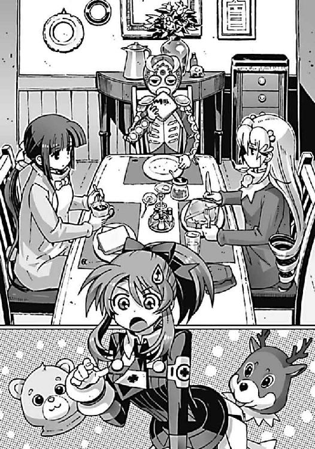
驚くというよりも、本気で心配しているような口調で操緒が訊いてくる。
僕とアニアと嵩月は、なんともいえない表情になって、互いに顔を見合わせた。
操緒が心配する気持ちもよくわかる。アニアと嵩月が制服の上に着ていたのは、トナカイとクマの着ぐるみだ。校内でも指折りの美少女二人が、着ぐるみ姿でもそもそと食パンを食べている光景は、お笑い番組のコントを彷彿とさせるシュールな光景だった。
「衣装、です......わたしたちのクラスが、パーティでやる出し物の」
クマの着ぐるみの嵩月が、心なしかほんの少し嬉しそうに説明する。意外にそのクマが気に入っているらしい。アニアもようやく思い出したようにまばたきして、
「樋口に持ってこさせたのだ。これを着てれば塔貴也に見つからずに洛高に行けるからな」
『学校に？』
「うむ。あの塔のことを調べなければならないからな、やむを得ん」
『はー......でも、こんなの着てたら、余計に目立つんじゃない？』
「いちおう樋口が言うには、その心配はないらしい。クリパの直前は、クラスの出し物の宣伝を兼ねて衣装を着たままうろついている生徒が多いからな。防寒対策にもなるし」
『まあね、たしかに暖かそうではあるよね』
そう言って操緒は、もこもこの着ぐるみの表面を撫でるような仕草をした。そして、んーっ、と眉間にしわを寄せ、
『でも......嵩月さんがクマで、ニアちゃんがトナカイの着ぐるみっていうのはわかるんだけど、智春のそれは、なに？ アステカ文明の出土品？ 覆面レスラー？』
「......クリスマスの精霊らしい。いちおう」
悪役レスラー風の覆面をかぶった僕は、複雑な気分で溜息をつく。
樋口が僕のために持ってきた衣装は、闘牛士というか、黄金文明というか、とにかくラテンアメリカ風味の派手な装飾を施した全身タイツだった。
予想通り操緒は、呆れたように目を丸くして、
『は？ 精霊......？』
「ああ。うちのクラスの出し物って〝クリスマス・キャロル〟だから」
『〝クリスマス・キャロル〟......そっか......今のあたしたちにはぴったりかもね』
妙に納得した顔でうなずく操緒。
そうかもな、と僕もいちおう同意する。〝クリスマス・キャロル〟は、イギリスの文豪ディケンズが書いた古い小説だ。スクルージという冷酷無慈悲な商人が、精霊の導きで過去と現在、そして未来の自分の姿を見たことによって、人間らしい心を取り戻す、という物語だった。
ある意味それは、一度滅びた過去であり、そして未来でもある〝一巡目〟の世界から現在に戻ってきた僕たちの立場とよく似ている。だがしかし──
『それでどうして覆面なの？』
操緒が、当然の疑問点を突いてくる。
言い淀んでいる僕の代わりに、嵩月が怖ず怖ずと、
「あ......夏目くんの役は、封印が解けて復活した邪神の部下で、五体のクリスマス精霊の一体、マリポーサだそうです」
『マ......マリポーサ？』
困惑の表情を浮かべた操緒に、嵩月は、
「はい。ほかにもソルジャーやビッグボディなどのクリスマスの精霊がいまして、さらわれた少年ティムを取り戻そうとする正義の守銭奴スクルージと、熱いダンス対決を繰り広げるミュージカルだとか──」
『ダンスミュージカル？ クリスマス・キャロルって、そんな話だったっけ......？ ていうか、正義の守銭奴ってなに？』
ひどい眩暈に襲われたかのように、顔をしかめながら操緒が呻き、
「さあ......？」と本気で首を傾げる嵩月。
「しょせんは高校生のパーティの余興だからな」
投げやりな口調でアニアが言った。だろうな、と僕も嘆息した。どうせ、楽しければなんでもいい、とばかりに樋口あたりが悪ノリして筋書きを決めたのだろう。その光景が目に浮かぶようだった。おかげでロクに練習していない僕たちも、なぜか当日参加させられることが決まってしまっているわけだが──ミュージカルなんてどうすればいいんだ。聞いてないぞ。
『ねえ、操緒の出番はないの？』
なぜか期待に弾んだ声で操緒が質問する。出たいのかよ、と僕は呆れ果て、アニアは淡々と、
「おまえは邪神である悪霊マーレイ役だそうだ。ラスボスだぞ」
『ラスボス？ 衣装は？』
「ない。そのままでいいそうだ」
『なんで操緒は素顔のままでラスボスなのよ──!?』
きいっ、と操緒が声を裏返して喚き散らす。気持ちはわからないでもないが、たぶん全身タイツよりはマシだと思う。僕は携帯電話の時計表示を眺めて、やれやれと息を吐いた。
午前八時。樋口との待ち合わせの時間まであと三十分。今日は授業は休みだが、ほとんどの生徒がクリスマスパーティの準備で登校することになっているという。生徒の少ない朝の早いうちに、塔の調査は済ませておきたかった。
「時間だ、行こう」
嵩月とアニアがうなずいて、着ぐるみの頭をもぞもぞと被った。僕は真剣な目つきで、覆面のヒモを縛り直す。そんな僕たちの姿を眺めて、
『変な集団......』
操緒がぼそりと呟いた。
○
洛芦和高校の敷地は、市内の高校としてはかなり広い部類に入る。落ち着いた洋風建築の校舎が、緑に覆われた敷地内のあちこちに点在して、明るく開放的な雰囲気を醸し出している。
しかしそんな自慢の風景を、校庭にそそり立つ巨大な塔が見事にぶちこわしてくれていた。
遠目からでも異様な存在感を放っていた黒い尖塔は、学校に近づくにつれて、ますますその存在の異常性を増していた。隣に建っている三階建ての校舎が、哀れなくらい小さく見える。
塔の直径はせいぜい五メートル程度だが、高さは八十メートルくらいはありそうだ。朝陽が落とす塔の影はさらに長く、学校から数百メートル離れた民家の屋根にまで、黒い翳りが伸びている。否応なく不安を感じさせる光景だった。
『はー......間近で見るとめちゃめちゃでかいね。駅前の十五階建てのビルより高くない？』
操緒が塔の先端を見上げて、無邪気に感心したような声を出す。
僕は洛高の校門をくぐったところで足を止め、
「なんに使うつもりなんだ、これ。入口とか......どこにも見あたらないけど」
「どのみち、この形状では内部に人が活動できるほどの空間はあるまい」
トナカイの着ぐるみを着たアニアが冷静に指摘する。たしかに、と僕はうなずいた。
「部長がこの中に隠れてるわけじゃない......ってことか」
「うむ。武器というわけでもなさそうだが、なにかの魔術装置なのか？ しかしこんな巨大な装置を必要とする儀式魔法の存在を私は知らないぞ。塔貴也め、なにを考えている......？」
アニアは真剣に悩んでいるらしいが、間の抜けたトナカイマスクでそんなことを言われても、今ひとつ緊張感が盛り上がらない。そのせいか操緒も、いつもと同じのんきな口調で、
『こんなばかでかい塔、どうやって建てたんだろうねえ？』
「わからん......が、おそらく塔貴也一人の仕業ではあるまい」
アニアの口調はあくまでも真剣だ。その言葉に操緒は、おや、と首を傾げ、
『誰かが部長に手を貸してるってこと？』
「ああ。それも魔術の取り扱いに慣れた大規模な組織がな。でなければ、第一生徒会がこいつの存在を放置している理由にも説明がつかん」
「そうか......佐伯兄......」
アニアの指摘に、僕は、色んな意味で暑苦しい美形の第一生徒会長のことを思い出す。もしこの塔が無許可で建造されたものなら、校内の治安維持を目的としているあの連中が、それを見逃すとは思えない。いや、それをいうなら悪魔の存在をあれほど危険視していた佐伯兄たちが、魔神相剋者と化した部長を野放しにしていることが、そもそもおかしいのだ。
それはつまり、第一生徒会でも手が出せないような何者かが、部長の〝出し物〟に協力しているということではないのだろうか──？
「なあ、操緒......」
僕は、ふと奇妙な既視感を覚えて、黒い尖塔の表面をじっと眺めた。
「この継ぎ目のない壁の感じ......なんとなく見覚えがないか？ 色とか艶とか」
『んー......？』
操緒も目をこらして塔に近づいていく。そして、
『あ、もしかして部長ん家の庭にあったシェルターと同じ？』
「それだ。部長が引きこもってたあの厚切りモノリス......！」
僕はようやく既視感の正体に気づく。部長が科學部に復帰する前、彼は半年近く不登校を続けていた。そのとき彼が引きこもっていた場所は、外部からの干渉をすべて遮断する堅牢なシェルターの内部だったのだ。護法結界によって守られたそのシェルターの外壁は、ドリルなどの工具はもちろん、銃弾や機巧魔神の攻撃をも跳ね返し、ほとんど傷つくことすらなかった。この黒い尖塔の表面素材は、あのシェルターの外壁に似ているのだ。
「試してみるか......奏、頼む」
アニアが深刻な表情を浮かべて、嵩月を見る。
嵩月は無言でうなずいた。彼女の両目が淡く緑色に発光し、掲げた掌の上に灼熱の炎が出現する。炎使いの悪魔である嵩月の血液は、彼女の意志に応じて炎に変わるのだ。摂氏数千度の地獄の業火。その温度に耐えられる金属は、そう滅多に存在しない──はずだった。
だが、嵩月が放った炎の直撃を喰らっても、塔の表面には焦げ跡ひとつ残らない。うっすらと魔法陣のような紋様が浮き上がって、炎を弾いただけだった。塔表面の金属壁を、人工的な魔力が防護しているのだ。
「やはり護法結界か。これでは手が出せんな」
ちっ、と荒々しくアニアが舌打ちする。
そんなアニアの背後に立っていた覆面の男が、ほう、と感心したように息を吐き、
「ふーん。智春の機巧魔神ってヤツでも駄目なのか？」
「うん。前に雪原瑤が試したんだ。白銀の空間切断能力でも、あの壁には通用しなかった......って、樋口!?」
僕は、覆面男の中身に気づいて、ぎょっと目を剥いた。全身の血の気が、さっと音を立てて引いていく。嵩月が魔力を使うところを見られた、のか？ それどころか機巧魔神の存在すらも知られている？
しかし、あたふたとうろたえる僕を、樋口は平然と見返し、
「おう、よくわかったな」
そう言ってもぞもぞと覆面を脱ぐ。ちなみに樋口が被っていた覆面は、白黒のゼブラ模様のマスクだったが、そんなことはどうでもいい。
僕は震える指先で樋口を指さして、
「なんで、おまえが機巧魔神のことを知ってるんだ？」
樋口はあっさりと答えを告げた。
「教えてもらったんだよ、昨日......いや、一昨日か」
「......教えてもらった!?」
「ああ。いやあ、驚いたぜ。おまえらがなにか隠してることには薄々感づいてたんだが、まさか影の中に機械仕掛けの悪魔なんてものを飼ってるとはな。でもって操緒っちが、その生贄で、嵩月も人間じゃなかったなんて......」
僕は、ぐ、と言葉に詰まる。樋口の持っている知識は正確だ。ハッタリやカマをかけているわけではないらしい。誰かこいつに真実を伝えた人間が本当にいるのだ。昨夜、樋口がやけに協力的だったのもそのせいか。できればこいつは巻きこみたくなかったのに。
樋口は厳めしい表情で腕を組むと、
「まあ、ずっと俺に黙ってたことはムカつくが、正体を知られたら悪魔の呪いで動物にされるんだったら仕方ないよな......あれ？ 脳細胞が破壊されてパーになっちまうんだったけか。まあ、どっちでもいいが、安心しろ、大原たちには内緒にしといてやるから」
「ど、動物にされる......？」
なんだそれは、と僕は当惑した。そんな設定、初めて聞いたぞ。樋口が納得しているからいいようなものの、もう少しマシな言い訳は思いつかなかったのだろうか。
『ねえ、樋口は誰からその話を聞いたの......？』
操緒が眉間にしわを寄せながら訊いた。樋口は、やれやれと溜息をつき、
「だから黒崎先輩だよ。会って話をしたって言ったろ」
『しゅ......朱浬さん？ 本当に......!?』
「生きてるのか、あの人は......」
驚愕する僕たちを、樋口はむしろ不思議そうに眺めて、
「当然だろ。まだ病院から学校に通ってるみたいだけどな」
「病院？」
「烈明館医大付属病院ってあるだろ。駅の北側の」
ある。妙に小綺麗な建物の大病院だ。
「そこに朱浬さんが入院しているのか......」
僕はいまだに信じられないような気分で呟いた。粉々に砕け散って死んだはずの朱浬さんが、本当に、生きている？ でもどうして？
「この塔は、科學部の出し物に使うと言ってたな、樋口」
混乱のあまり動きを止めた僕の代わりに、口を開いたのはアニアだった。トナカイの着ぐるみを被ったまま樋口を睨んで、
「朱浬もこいつの存在を知っているのだな？ あいつはなにか言ってたか？」
「ああ。部長に協力してやれってさ」
ゼブラ柄のマスクを弄びながら、樋口がうなずく。バカな、と僕は絶句した。朱浬さんにとって部長は科學部の裏切り者で、自分を殺そうとした張本人のはずだ。なのに、
「部長に協力？ 朱浬さんが、そんなことを......!?」
「だから俺、司会することになってんだよな。科學部の天使召喚ショーのさ」
「......天使？」
嵩月がきょとんと小首を傾げた。おう、と樋口はなぜか得意げにうなずき、
「この塔には、クリスマスの夜に天使が舞い降りてくる、ってことになってるんだ。科學部の出し物は〝天使召喚〟なんだよ。洛高生の祈りで天使を召喚するって、けっこう話題になってるぜ」
「そうか」
アニアが、ぐるぐるとトナカイの角を振り回しながら呻く。
「この塔は舞い降りてきた天使のための宿り木というわけか。ふざけたことを......」
樋口は、そんなアニアの反応を怪訝そうに眺めて、
「塔の中に、大がかりなマジックの仕掛けとか、立体映像の投影装置とか、その手の仕掛けがあるとみんな思ってるみたいなんだが......違うのか？」
「わからん。どちらにしても調べる必要がありそうだな」
アニアは首を振って深く溜息をついた。ふーん、と樋口は気の抜けた表情で呟き、
「そうか。ああ......そういや塔が立ってるのは、どうやらうちの学校だけじゃないらしいぜ」
「なにっ!?」
その言葉にアニアの声色が変わった。なにか思い当たることがあったらしい。
樋口はただの世間話のような口調で、
「よその学校の知り合いに聞いたんだが、市内の何カ所かに、これと似たような塔が立ってるらしい。洛高にあるやつが、いちばんでかいのは間違いないらしいけど」
「塔貴也め......やってくれるな」
アニアが着ぐるみのつぶらな瞳で、黒い尖塔を睨め上げた。そして不意に振り返って、
「時間がない。二手に分かれよう、智春」
「え？」
「おまえは操緒と奏を連れて、病院に行け。本当に朱浬が生きているのなら、あいつに訊きたいことは山のようにある」
「アニアは？」
「私は、塔についてもう少し調べる。樋口、ほかの塔のある場所に案内しろ」
「だけど、ニアちゃん一人じゃ......」
クマの着ぐるみの嵩月が、単独行動を申し出たアニアを気遣うように言った。
しかしトナカイは不敵な含み笑いを洩らして首を振り、
「心配するな、奏。塔貴也が今さら私を狙ってくる理由はなにもない。狙われるとすればイグナイターを持っているおまえたちのほうだ」
「......そうか」
そうかもしれない、と僕はうなずいた。それにアニアは、もう前のような無力な幼い子どもではない。運命すらねじ曲げる強力な確率操作能力を身に着けた運喰らいの悪魔。たった一人で〝一巡目〟の世界に飛ばされた五年もの間、はぐれ使い魔と戦い続けていた彼女は、この中では、もっとも実戦経験が豊富であるともいえる。
そんなアニアの成長した姿を、樋口は少しものめずらしそうに眺めて、
「案内しろ、って......まあいいか。ニアっちも、成長してえらく美人になったしな」
馴れ馴れしくトナカイの肩を抱き寄せながら、そんなことを言う。
アニアは、そんな樋口を不愉快そうに睨みつけ、
「いやらしい目で私を見るな！」
がぶり、とトナカイの着ぐるみに噛みつかれて悲鳴を上げる樋口。
騒々しい彼らの姿を見ながら、いいコンビだな、と僕は妙に感心していた。
○
樋口に教えられた病院は、高級ホテルを連想させる妙に豪華な建物だった。病院の駐車場には外車がずらりと並んでおり、待合室の患者たちも見るからに高価そうな服を着ている。院内にはＶＩＰ向けの個別待合室まで用意されている。高級感が漂いすぎて、むしろ胡散臭く感じられるほどだった。
『なんだか怪しげな病院だねえ。成金趣味っていうかなんていうか』
待合室に飾られた立派な壺を見上げて、操緒が露骨な感想を洩らし、
「そうだな......本当にこんなところに朱浬さんがいるのかな」
僕は落ち着かない気分で待合室のソファに腰掛けた。
死んだはずの朱浬さんがここに入院しているといわれても、やはり実感がわかなかった。樋口が嘘をついているとも思えなかったのだが、
『樋口も誰かに騙されてるのかも』
操緒がもっともな疑問を口にする。たしかにそれはあり得る話だが、
「でも、杏も朱浬さんを見かけたって言ってたしな」
『そうなんだよねえ』
どうしても腑に落ちない気分で僕たちは息を吐く。とにかく、あまりにも情報が少なかった。わからないことが多すぎる。場違いなほど高級感あふれるソファの上で、僕と操緒がそれぞれ頭を抱えていると、
「夏目くん......」
着ぐるみを脱いで普通の制服姿になった嵩月が、受付の方角から戻ってきた。
「嵩月、こっち」
僕は目立たないようにソファの陰に隠れて、嵩月に手を振った。幽霊憑きの人間が、病院の中をうろつき回るのはなにかと気を遣う。なので、見た目がいちばんまともな嵩月に頼んで、朱浬さんの病室番号を調べに行ってもらったのだ。
『どうだった？』
「朱浬さんの病室は何階だって？」
「あー......」
期待に満ちた表情の操緒と僕の質問に、嵩月は困ったような表情で首を振る。
『教えてもらえなかったの？ 面会謝絶とか、そういうこと？』
むうっ、と首を傾げる操緒を見て、嵩月はますます困惑の表情になって、
「いない、そうです」
『......いない？』
「はい。黒崎朱浬という名前の入院患者は、この病院には」
『ど、どういうこと？ ねえ、智春!?』
「いや、そんなこと僕に訊かれても......」
操緒に荒っぽく詰め寄られて、僕は頼りなく後ずさる。そのままずるずると壁際まで後退し続けていると、
「......夏目智春？」
いきなりフルネームで名前を呼ばれて、僕はひどく驚いた。聞き覚えのあるその声に、動揺しながら振り返る。
病院の売店の前に立っていたのは、パジャマ姿にどてらを羽織った少女だった。ゆるやかにウェーブした髪と、ちょっとキツめの悪人っぽい顔立ち。
操緒が目を丸くして彼女を指さし、
『六夏会長？ 生きてたんですか？』
「死んでたまるか。生きとるわ！」
第二生徒会会長の倉澤六夏が、スリッパの音を踏みならしながら怒鳴り返した。彼女が、塔貴也の策略で重傷を負ったのは知っていたが、まさかこの病院に入院していたとは。
「でも、なんで六夏会長がこんな高級そうな病院に......？」
守銭奴の六夏らしからぬ行動に疑問を抱く僕に、
「この病院は巡礼者商連合の系列だから、洛高生は安く入院できるのよ。悪魔関係の事情にも通じてる医師や看護師がいて、いろいろ便利だしね。なんか文句ある？」
「いえ、まったく」
割引が目当てということであれば、実に納得できる行動であった。
ふん、と六夏はふて腐れたような態度で僕たちを睨みつけ、
「ったく、あんたたちのせいで、ひっどい目に遭ったわよ。橘高のやつ、よりにもよってこのあたしをぶった斬ってくれるとはいい根性してるじゃないのよ。おかげでこっちはクソ不味い病院食ばっか毎日毎日喰わされて、ストレスがクライマックスだっての。今度会ったら、絶対あいつも同じ目に遭わせて──って、痛たたたたた」
興奮したせいで傷の痛みがぶり返したのか、負傷した脇腹を押さえて六夏がうめく。
操緒が呆れ顔で目を細めて、
『あーあー......怪我人のくせに、そんな興奮するから......』
「うっさいわっ」
苦痛に顔を歪ませながら六夏が吠えた。と、その声を聞きつけたかのように、廊下の奥から小柄な影が駆け出してきて、
「あ、いた！ 六夏ちゃん！」
六夏の名前を呼んだのは、洛高の制服を着た女子生徒だった。左右に束ねた髪が垂れ耳のウサギを連想させる、小動物系の可愛らしい少女だ。
彼女の背後には、気品のある顔立ちの少女の幽霊が浮かんでいて、
「ちっ......姫笹、ひかりにチクったわね」
その幽霊の少女を睨んで、六夏が悔しげに舌打ちする。
制服姿の小柄な少女が、そんな六夏を、もう、と睨んで、
「また勝手に病室を抜け出して買い食いして。お医者さんに怒られるよ」
小動物系の彼女は、点滴用のスタンドを引っ張りながら、六夏のほうに走り寄ってくる。そんな彼女が、僕の姿に気づいて突然驚いたように足を止めた。
呆然と目を大きく見開いて、
「な、夏目......くん？」
その瞳にみるみる涙が盛り上がる。
「ひ、ひかり先輩......？」
いきなり嗚咽を始めたひかり先輩を見て、僕は慌てふためいた。顔を合わせた途端いきなり泣かれてしまったら、もうどうしていいかわからない。
「よかった......無事だったんですね」
そう言ってひかり先輩がしゃくり上げる。
そういえば彼女は、僕たち科學部が部長の裏切りで壊滅した現場に居合わせたのだった。
つまり彼女が僕を最後に見たのは、部長の攻撃で僕たちが異世界へと吹き飛ばされる瞬間、ということになる。戻ってきた僕たちを見て、彼女が驚くのも当然だった。
「ごめんなさい、あたし、あのとき、なにもできなくて」
彼女は、泣きながら僕たちに何度も頭を下げ続ける。それを見た六夏が呆れた顔で、
「ひかりが謝ることないのよ。全部こいつらが悪いんだから」
実際その通りではあるのだが、なぜか六夏に言われると非常に腹が立つ。
やれやれと僕は嘆息し、そのとき嵩月が不意に口を開いた。
「あの......沙原先輩、その怪我は？」
ひかり先輩が、え、と自分の左手を押さえた。嵩月に言われて、僕もようやく気づいた。ひかり先輩の手足のあちこちには、目立たないように包帯がまかれていた。今はもうほとんど治りかけているようだが、実はかなりの重傷だったはずだ。
しかし先輩はふるふると大袈裟に首を振り、
「あ、これは、たいしたことないんです。ちょっとした凍傷......いえ、しもやけで」
「しもやけ？ この季節に？」
雪山で遭難でもしたのだろうか、と僕は困惑する。そんな僕を睨んで、六夏は不機嫌そうに鼻を鳴らし、
「あんたたち、黒崎に会いに来たんでしょ。あいつの病室なら西館の四階よ」
クイ、と親指を突き立てて、彼女は隣の病棟のほうを指さした。
「え？ 朱浬さんは本当にここに入院してるんですか？」
「知らなかったの？」
驚いて訊き返す僕の顔を、六夏は蔑むような表情で眺め、
「あたしの病室はこの棟の五階だから。あとでちゃんと差し入れ持って見舞いに来るのよ、差し入れ持って！」
厚かましいことを言いながら、ひかり先輩に連れられて自分の病室へと戻っていく六夏。
「そんな二回も言わなくても......」
エレベーターに入っていく彼女たちを見送って、僕は疲れた声を出した。
『でも、相変わらずで安心したね』
操緒はそう言って晴れやかに笑う。
たしかに相変わらずだったな、と僕は苦笑し、嵩月もそっとうなずいた。
○
朱浬さんが入院しているという病棟は、長期入院患者向けの個室エリアらしかった。真新しい廊下はひっそりと静まりかえって、看護師の姿も見あたらない。
人の気配が感じられない病院は、どこか廃墟にも似た非現実的な空間に感じられた。見知らぬ作り物の世界に迷い込んでしまったような不安を感じながら、僕たちがきょろきょろと周囲を見回していると、
「あ......」
病室のプレート表示に気づいて、嵩月が足を止めた。
白いプラスチックのプレートには、色褪せた文字で黒崎紫浬と書かれていた。
「朱浬さんの病室......って、これのことか？」
『紫浬さんって......朱浬さんの双子の妹さん？ 白銀の副葬処女だったんだよね......？』
僕と操緒は、それぞれ困惑の表情を浮かべた。
朱浬さんには双子の妹がいた。僕たちはそう聞かされていた。
三年前の飛行機事故で瀕死の重傷を負った彼女を延命させるため、瑤は紫浬さんの魂を機巧魔神に封印したのだとも聞いている。
だが、瑤の白銀が破壊されたことで、彼女の魂は失われた。黒崎紫浬という人間は、この世界にはもう存在しないはずなのだ。
なのに、この病室のプレートには紫浬さんの名前が書かれている。死んだはずの黒崎朱浬が入院しているという病室に刻まれているのは、死んだはずの紫浬さんの名前──
いったい本当に死んだのは誰なんだ──!?
『そうか......黒崎朱浬っていう名前の入院患者はいない......って、そういう意味なんだ』
操緒が、ぼそりと呟いた。
僕は無言のまま病室のドアをノックした。しかし中からは返事はなかった。僕は深呼吸して覚悟を決めると、
「入りますよ、朱浬さん......朱浬さーん......」
そう言って病室のドアをゆっくりと開けた。そして、うっ、と息を呑む。
真っ先に僕の視界に飛びこんできたのは、横たわっている朱浬さんの身体だ。彼女が載っているのはベッドではなく、手術台に似た金属製の台の上だった。
彼女が着ているのは、競泳用の水着に似た黒いボディスーツ。金属が剥き出しの手足には、無数のコード類が接続されている。まるで改造手術の現場みたいだが、実際に朱浬さんは改造人間なのだから、それはいい。
問題なのは、僕たちが病室に入ってきても、彼女が身動きひとつしないこと。そして眠っている朱浬さんの顔が、白い布で覆われていることだった。
「朱浬......さん？ どうして......!?」
僕は、震える手で彼女の顔を覆う布を取り去った。だが、朱浬さんはそれでも目を開けない。
操緒が僕の横顔を見つめて、つらそうな声を絞り出す。
『智春......』
「眠ってる......んだよな、なあ？」
僕の問いかけに、嵩月が静かに首を振った。朱浬さんの胸に手を当てながら、
「息は、してません......心臓の音も」
その嵩月の言葉に、僕の頭の中は真っ白になる。
「死んでるのか？ でも、だったら杏や樋口が会った朱浬さんは誰なんだ!?」
『朱浬さんが殺されるところ、見たんだよね？』
操緒が真剣な表情で訊いてくる。鐵の中に封印されていた彼女は、朱浬さんの死の瞬間を目撃していない。
「あれは、殺されたってだけじゃない。僕たちの目の前で粉々に砕け散って消えたんだ。鳳島氷羽子の使い魔の攻撃で凍りついて......」
『砕け散って......消えた？』
僕の説明を聞いていた操緒が、なにか引っかかりを覚えたように眉を寄せた。
『ん......それって、おかしくない？』
「おかしいって、なにがだよ？」
僕はイライラと訊き返す。しかし操緒は怪訝そうな表情を浮かべたまま、
『だってさ、そりゃ生身の人間が凍りついて砕けるのはわかるよ。人体の約七十パーセントは水分だっていうし、凍らせると細胞とか脆くなるしね......でも、これ』
そう言って操緒が指さしたのは、金属パーツを露出した朱浬さんの腕だ。機巧魔神と同じ部品で造られているという、護法金属製の骨格フレーム──
「そうか......朱浬さんの手足は、機巧魔神の部品で出来てるって......」
うん、と操緒はうなずいて、
『いくら使い魔の攻撃でも、こんな金属の固まりが凍って粉々に砕けたりするかなあ。実際、こうやって朱浬さんの身体は残ってるんだし』
その説明に僕は言葉をなくす。僕が見たのは、強烈な冷気の息吹を受けて消滅した朱浬さんの姿だ。彼女の残骸を見たわけではない。
「でも......どうやってあの状況で無事......に............ひっ!?」
ぽつりと疑問を呟きかけた嵩月が、突然、青ざめた顔で悲鳴を上げた。あまり感情を表に出さない彼女が、めずらしく怯えを隠そうともせずに、僕の腕にしがみついてくる。
「た......嵩月？」
二の腕に伝わってくる彼女の胸の弾力に、僕はわけがわからないまま動揺する。そして操緒はそんな僕を見て怒るどころか、同じように反対側から僕にぴったりとくっついて、
『ト、智春......今、なにか声がしなかった......？」
なんのことだ、と僕は密着状態の操緒を呆れ顔で見返し、
「声？ 操緒まで......こんなときにいったい何を......」
その直後、僕の耳に聞こえてきたのは、嗄れたような低い声だった。
〝に......憎い......〟
「うわ......!?」
あまりにも絶妙なタイミングで聞こえてきたその声に、僕は本気で心臓が止まるかと思った。操緒や嵩月の声とは違う。だが、僕の知らない声ではなかった。よく知っている声だったからこそ余計に恐怖を感じたのだ。
「今、たしかに......黒崎先輩の、声が......」
声を震わせながら嵩月が周囲を見回し、
『......ゆ、幽霊......!?』
操緒が本気で怖じ気づいているように呟いた。おまえが幽霊にびびってどうする、と僕は、頭の片隅で冷静に突っこみつつも、
〝夏目......智春......よくも、あたしを見捨てて......〟
「う、うわああああああああっ!?」
名指しで怨み言を吐かれて、あやうく腰を抜かしそうになる。手術台に横たわる朱浬さんの身体は、目を閉じたまま身じろぎもしていない。聞こえてくるのは朱浬さんの声だが、喋っているのはやはり彼女ではないのだ。
まさか本物の幽霊か、と僕が恐怖におののいたとき、
「なーんて、ね」
病室の奥の青いカーテンが、勢いよく左右に開かれた。薄暗かった病室に突然射しこんだ眩しい光。その逆光の中に浮かび上がった人影を、僕は目を細めながら呆然と見つめた。
カーテンの向こう側には、ごく普通のベッドが置かれていた。寝乱れた白いシーツの上には、ほっそりと背の高い、モデルのような体型の少女が座っている。
「朱浬......さん？」
僕は呆然と彼女の名前を呼んだ。
目の前の彼女は眼鏡をかけていなかったし、髪も長かった。それに僕の知っている朱浬さんよりも痩せているように見える。けれど、見間違えようのない端正な顔立ちは、明らかに朱浬さんと同じものだった。
『......朱浬さんが二人？』
手術台の上に載せられた朱浬さんと、ベッドの上の彼女──二人を慌ただしく見比べながら、操緒が呻いた。ベッドの上の彼女は、そんな操緒の反応を愉快そうに見つめて、
「戻ってきたのね、三人とも。元気そうでよかったわ」
おっとりとした、いつもの朱浬さんの口調でそう言った。
それでも僕は最初の動揺から立ち直れずにいた。パジャマ姿の彼女の腕には、点滴の跡が残されている。ベッドの上の少女は朱浬さんとは違う。彼女は生身の人間だ。それなのに彼女の雰囲気は、僕たちのよく知っている朱浬さんと同じだった。
「あなたは......紫浬さん、なんですか？ 朱浬さんの双子の妹の......」
僕は思いついた唯一の可能性を口にする。操緒が驚いたように僕を見上げて、
『え、でも......紫浬さんって、雪原瑤の白銀の中に封印されてたんじゃないの？ だから朱浬さんは科學部にいたんでしょ。彼女を救い出すために──』
「......二人の言葉はどちらもだいたい合ってるわ。そしてどちらも間違ってる」
ベッドの上の少女が、微笑みながら首を振った。あまりにも曖昧な彼女の言葉に、僕は更に困惑した。無数の謎が一度に押し寄せてきて、僕の理解の限度をとっくに超えている。わざと僕たちを混乱させようとしているのかも、と恨めしい気分になってくる。
「説明......してくれますか？」
嵩月が真剣な表情で、朱浬さんによく似た少女に訊いた。
「いいわ。もう隠しておく理由もなくなったしね」
そう言って彼女は、ふふっ、と悪戯っぽく目を細める。
それはいつもの朱浬さんとは違う、どこか寂しげな微笑だった。
○
「三年前の春。あたしが、あなたたちと同じ飛行機に乗ってたって話は覚えてる？」
朱浬さんによく似た少女の質問に、僕は無言でうなずいた。
三年前、僕たちを乗せた飛行機は海に落ちた。成田発、ロンドン・ヒースロー空港行きＭＡ九〇一便。多くの死者と行方不明者を出した墜落事故に巻き込まれたのは、僕と操緒だけではなかった。朱浬さんと紫浬さんの姉妹も、あの事故の被害者だったのだ。
「紫浬さんは、そこで瀕死の重傷を負ったって聞きました」
僕の言葉に少女がうなずく。そして彼女は首を振る。
「そう。でも、負傷したのは紫浬だけじゃない。同じように朱浬も命にかかわる大怪我を負ったの。そしてあたしたちの治療に当たった医師たちはひとつの決断を迫られた──」
「決断？」
「朱浬と紫浬。どちらの命を犠牲にするか」
「え？」
決断、という彼女の言葉に、僕は背筋が冷たくなるような感覚を味わった。
二人の重傷患者がいて、どちらかの命を犠牲にする？ 戦慄する僕の表情を見て、ベッドの上の少女は、まるで他人事のようにクスクスと笑った。
「そのまま放置すれば、あたしたちは二人とも死んでいた。でもね、どちらか一人だけなら、ほぼ確実に命を救う方法があったの」
「方法って......」
『もしかして......臓器移植......？』
操緒が戸惑うような表情で顔を上げた。朱浬さんによく似た少女は、静かに微笑んで、
「そう。どちらかの身体から損傷の少ない臓器を取り出して、相手に移植するの。幸いなことに、あたしたちが致命的な傷を負った場所はそれぞれ違っていたし、双子だから、拒絶反応が起きる可能性も少なかった」
「だけどそれじゃあ、臓器を取り出されたほうは......」
「そういうこと」
彼女は悪戯っぽく肩をすくめてみせた。
「助けられるのはどちらか一人だけ。医師たちは相当悩んだと思うわ。でもね、最後に決断を下したのは、あいつだった」
「あいつ？」
「瑤よ」
「雪原先輩？」
ええ、と彼女は小さく顔をしかめて、
「どういう取引をしたのかしらないけれど、手術の直前、病院にやってきた瑤は白銀のトランクを持ってたわ。機巧魔神の祭壇──イクストラクタよ」
「そうか」
僕は、瑤の意図がようやく理解できた気がした。なぜ《白銀》の内部には、副葬処女の魂だけが封印されていたのか、その理由も──。
「どちらかの魂を生贄として、機巧魔神に封印すれば......」
「そう。たとえ肉体を失っても、射影体としてこの世界につなぎ止めておくことができる」
でも、と操緒が呟いた。
『雪原先輩が生贄として選んだのは──紫浬さん、だったって......』
朱浬さんによく似た少女が、かすかに溜息をついた。
「そう。瑤はそのつもりだったんでしょうね、最後まで」
『え？』
「どうしてあいつが紫浬を選んだのかはわからない。紫浬は、朱浬よりもあいつのことが好きだったから、だからこそ犠牲にしても構わない、と思ったのかもしれない──でもね」
そう言って彼女は、ガリッ、と親指の爪を噛む。
「実際に儀式が行われたときに、白銀に封印されたのは朱浬だった。姉さんは、あたしを庇って機巧魔神の生贄になったのよ」
「朱浬さん......が......封印された？」
瑤は《白銀》の中に封印されているのは、紫浬さんの魂だと言っていた。だが、今の話が真実ならば、彼女は間違っていた、ということになる。本当の朱浬さんは、妹を庇って機巧魔神に封印されていた。だったら、僕たちが知っている朱浬さんの正体は──
「臓器移植を受けた紫浬はどうにか一命を取り留めた。けれど彼女は目覚めなかった。肉体は癒えても昏睡状態のまま、それから何週間も眠り続けたの──あの男と出会うまで」
「あの男？」
眉をひそめる僕を見返して、ベッドの上の少女が笑う。
「夏目直貴と名乗っていた男。一巡目の世界から来た、もう一人のあなたよ、トモハル」
「兄貴......が？」
なぜだ、と僕は衝撃を受けた。なぜそこでヤツの名前が出てくるのだ。あの男が、なんの目的で朱浬さんたちと接触しようとする？
「彼は、人工心肺の代わりに機巧魔神の部品を使って、黒崎朱浬の肉体を生き返らせた。そして紫浬の魂とリンクさせたの──意識を憑依させた、という感じかな」
「憑依......！」
頭の中でぐちゃぐちゃに絡み合っていた糸が、するりと解けていくような感覚を僕は味わっていた。機巧魔神と同じメカニズムを使って、致命傷を負った朱浬さんの肉体を復活させる。そんなことができるのは、機巧魔神の構造を知っている人間だけだ。つまり機巧魔神の設計者であるアニアだけ──
おそらく兄貴はアニアから、朱浬さんの肉体を機巧化するための設計図を預かっていたのだ。そして彼女の肉体を再生した。魂を持たない、空っぽの機巧化少女を──
「じゃあ......今まで僕たちと一緒にいた朱浬さんは......」
『......朱浬さんの肉体を、紫浬さんが憑依して操ってたってこと？ 生き霊みたいに？』
僕と操緒が、ただ呆然と訊き返す。操緒が僕の身体に憑依して操るように、紫浬さんの魂が、朱浬さんの肉体を操っていた、ということか。たしかに朱浬さんの身体が機巧魔神と同じ原理で動いているのなら、憑依のメカニズムが搭載されていても不思議ではない。
どうして兄貴が、そこまでして朱浬さんを復活させたのか。それは彼女を僕の庇護者にするためだ。〝一巡目〟の夏目智春のスペアである僕に機巧魔神を与え、この世界に隠された秘密を伝える。その伝令として彼女は選ばれた。
そして紫浬さんが、その残酷な契約を受け入れたのは、《白銀》の中に封印された本物の朱浬さんの魂を解放するためだった。紫浬さんには、そのための力が必要だったのだ。
「簡単にいえば、そうなるわね」
ベッドの上の少女が、悲しげに微笑んだ。だけど、と彼女は言葉を続ける。
「だけど、それももう限界みたい」
「限界？」
「肉体と魂を切り離されたといっても、やっぱりどこかでつながっていたのね。白銀に封印されていた朱浬の魂が消滅したとき、肉体のほうも死んでしまったわ。そこにいる朱浬は、もう命を持たないただの人形よ」
「あ......じゃあ、白銀が破壊されたあと、朱浬さんの動きがおかしかったのは......」
最後の戦闘のとき、氷羽子の攻撃を受ける前から、朱浬さんは明らかに弱っていた。あれは精神的なショックだけが原因ではなかったのだ。
「そう。あのとき黒崎朱浬の心臓は、すでに止まってたの。もしもあのとき沙原ちゃんが助けてくれなかったら、あたしの魂もたぶん一緒に消滅してたと思う」
「え？ ひかり先輩？」
彼女が口にした思いがけない名前に、僕は目を丸くした。校内美化委員長にして垂れ耳ウサギのような髪型の上級生、沙原ひかり。彼女の正体も、嵩月たちと同じ悪魔だ。そして彼女の悪魔としての能力は──瞬間移動だ。
たしかに科學部が壊滅したあの日、あの場所には、ひかり先輩も居合わせた。
「じゃあ、あのとき朱浬さんの身体が消滅したように見えたのは──」
「沙原ちゃんの瞬間移動能力よ。彼女は、鳳島氷羽子の使い魔の攻撃のど真ん中に跳躍してきて、あたしを助けてくれたってわけ」
「そうか......ひかり先輩の怪我はそのときの......」
僕は、さっき会ったひかり先輩が、身体中あちこちに包帯を巻いていたことを思い出す。ひかり先輩が跳ばすことができるのは、自分の身体に直接接触している物体だけだ。あのとき朱浬さんを救うためには、彼女は、使い魔の息吹のど真ん中に飛びこんでくる必要があった。一歩間違えば自分も死んでいたかもしれない危険な行為だ。
ひかり先輩は、自分がなにもできなかったと卑下していたけれど、そうではなかった。彼女は命懸けで朱浬さんを救ってくれたのだ。
「でも......やっぱり、この朱浬さんの身体はもう動かないんですね」
手術台に横たわる彼女の身体を見つめて、僕は呟いた。ベッドの上の少女は、泣き出しそうな表情の僕を見つめて、
「ふふっ......触って確認してみる？」
からかうように目を細めながら訊いてくる。相変わらずだなあこの人は、と僕は苦笑。ほんの少しだけ気持ちが軽くなったような感じがした。
『あれ？ だったら杏ちゃんや樋口が会ったっていう朱浬さんは......』
操緒が不思議そうに目を瞬いて訊いた。
ベッドの上の少女は、病室の隅に置かれたアルミ製の杖を指さして、
「それはたぶんあたしのことね。でも、久々に生身の身体で登校するのは疲れたわ。もう少しリハビリ頑張らないと......」
そう言って彼女は自嘲するように笑った。僕は彼女の名を呼ぼうとして、
「あの......朱浬さん......いや、紫浬さん？」
果たしてどちらの名前で呼ぶべきなのか、ふと迷う。
戸惑う僕を、彼女は愉快そうに見つめ、
「どちらが本当のあたしなのかな......」
自分の指先に視線を落としながら、ぼそりと言った。そのまま消えてしまいそうな、儚げな声だった。
「朱浬の魂を救うために、朱浬の身体を操って、朱浬を演じ続けて、結局あたしに残ったのは朱浬の臓器を移植された、誰のものでもないこの身体だけ......今のあたしには、本当の自分が誰だったのかということさえ、もう曖昧なのよ──」
今までずっと騙しててごめんね、と彼女は最後に唇の動きだけで告げた。
操緒がハッと顔を上げて、
『そ......それでも......！』
「それでも朱浬さんは朱浬さんです」
操緒が言葉を続けるよりも先に、きっぱりとした口調で嵩月が言った。
「その名前が嘘でも、演技だったとしても......今まで、わたしたちを助けてくれたのは嘘じゃない、から」
真剣な表情で断言する嵩月を、僕は驚いて凝視した。こんなふうに嵩月がはっきりと自分の意見を口にする姿を、僕は初めて見たような気がした。
なにかを言いかけたまま口をぽかんと開けていた操緒が、
『台詞......とられた』
気まずそうな表情でぼそぼそと呟く。
ベッドの上の少女も少し驚いた顔で嵩月を見ていたが、ふと何かに気づいたように僕を見て、ははぁん、と訳知り顔でニヤリと笑う。そして、
「ありがとう」
彼女は、少しだけ本当に嬉しそうに微笑んだ。
○
回診の医師が来て、僕たちはほとんど追い出されるような形で朱浬さんの病室をあとにした。洛高の校庭に建てられた黒い尖塔については、結局、情報らしい情報を聞き出せないままだ。
部長に協力するように樋口に命じたり、鳴桜邸をこっそりと監視していたことからしても、彼女はなにかを知っているはずだが、どうやら僕たちにそれを教える気はないらしい。
『......どうするの、智春？』
あまり納得していないような表情で操緒が訊いてくる。しかし僕は、妙に吹っ切れた気分で、
「どうするって言われても、今の朱浬さんを争い事に巻きこむわけにはいかないだろ」
『そっか......朱浬さんには、もう部長と戦う理由がないんだもんね......』
操緒が落胆したように溜息をついた。朱浬さんが科學部の部長代理として無謀な行動を繰り返していたのは、副葬処女となった姉の魂を解放する、という目的があったからだ。だが、その本物の朱浬さんの魂は、すでに失われてしまった。傷ついた彼女が、これ以上戦う理由はなにもない。
「でも、よかった......生きてて」
嵩月が独り言のようにぽつりと呟いた。操緒も、うん、とうなずいて、
『そうだね。それだけでもよかった......あ!?』
その操緒が、突然、憤激に駆られたように眉を吊り上げた。彼女が睨みつけていた方角を、僕も何気なく振り返り、
「あ、あいつ......！」
朱浬さんの病室と同じ病棟。見知らぬ病室から出てきたのは、洛高の制服を着た男子生徒だった。常に笑っているような表情を浮かべた、タレ目の男。
「真日和っ！」
僕はその男の名前を叫んだ。真日和秀は、唖然としたように細い目を目一杯広げて、
「げっ!? な、夏目くん......!? なんでこんなところに......」
「その言葉そっくり返してやる。おまえっ、こんなところでいったいなにを──」
僕はその真日和の胸ぐらをつかんで、廊下の壁に押しつけた。真日和は、なぜか抵抗せずに、僕の為すがままになっている。そして、
「待って、夏目くん！」
僕を止めたのは、意外なことに嵩月だった。
彼女が見ていたのは、病室のドアにかけられた白いプレートだ。そこに書かれた入院患者の名前は、風斎美里亜。どこかで聞き覚えのある名字だった。
「え？ 風......？」
僕の記憶が間違いでなければ、風斎家は、嵩月家や鳳島家と同じ名門の悪魔の家系のはず。そして、悪魔の契約者である真日和が操る使い魔は風獣だ。
「どうしたの、シュウちゃん？ 誰か来たの？」
廊下での騒ぎを聞きつけたのか、病室から声がかけられた。予想外に可愛らしい声だった。開けっ放しの病室のドアから、ベッドの上に座っている入院患者の姿が見える。
お嬢様然とした風貌の、清楚な雰囲気の少女だった。
『......シュウちゃん？』
操緒がやけに愉しそうな顔で真日和を見る。冷やかしたくてウズウズしているという表情だ。な、なんスか、と動揺する真日和。
僕は真日和を睨みつけたまま、
「真日和、もしかして......彼女はおまえの」
「......ッス。俺の契約悪魔ッスよ」
観念したように真日和はうなずいた。振り向いた僕と、風斎美里亜の目が合った。美里亜は上品に微笑んで会釈し、
「シュウちゃん？ もしかしてお友達？」
「夏目くんッス。学校の友人ッスよ」
彼女の質問に、真日和が答える。美里亜は少し驚いたように目を大きくして、
「え、夏目くんって、いつも六夏ちゃんにいじめられてるところを、シュウちゃんが助けてあげてるっていう、あの彼......？」
「ま、まあ、だいたい合ってるッス」
じわり、と額に汗を浮かべる真日和。僕は顔をしかめて真日和に詰め寄り、
「おい、なんだよ、その説明!? おまえ、彼女に、僕のことをどういう伝え方してるんだ!?」
「しーっ......頼むから今は話を合わせて欲しいッス！」
真日和が頬を引き攣らせて懇願する。
その間、美里亜は、僕の隣に立っている嵩月に目を止めて、
「そっか。じゃあ、あなたが嵩月さんか。風斎美里亜です。覚えてるかな、あたしのこと......小さいときに一度だけ会ったことがあるんだけど」
「はい」
嵩月は、病床の美里亜に向かって礼儀正しく頭を下げた。
「噂は、聞いてました。旧第二生徒会の中心戦力だった風紀委員長。わたしたちの入学前に、大きな悪魔同士の抗争をいくつも止めて、一般生徒を守ったって。洛高がわたしの入学を許可したのも、あなたの前例があったからだって」
緊張している嵩月を見て、美里亜は、あらあら、と微笑んだ。
「気にしなくていいよ、そんなの。やんちゃしてた昔の話だし」
そう言って、彼女はそっと首を振った。頬にかかる髪を払った彼女の指先から、さらさらとなにかがこぼれ落ちた。ガラスのように透き通った小さな破片。その美しい輝きに僕たちは息を呑む。驚いたように表情を硬くした嵩月に、美里亜は優しく笑いかけ、
「べつに後悔しているわけではないのよ。でも、そうね。私は風斎の娘としての立場やメンツから結局逃れられなかったのかもしれない。こんな身体になるまではね......そのせいでシュウちゃんにもつらい思いをさせてしまったわ」
非在化の進行した自分の腕を見つめて、美里亜は笑った。
「だから、あなたは後悔のないように自由に生きて。自分のためにね」
「............」
嵩月は無言でうなずいた。それを満足そうに見つめていた美里亜が、けほっ、と咳きこんだ。そんな彼女の姿を見て、真日和が握りしめた拳を震わせる。
「真日和......おまえは......」
僕が真日和に声をかけようとしたその瞬間、かすかな振動音とともに、僕の制服のポケットからやかましい音楽が鳴りだした。携帯電話の着信音だ。電源を切り忘れていたのだ。
うわわ、と慌てて携帯を取り出しながら、僕は病室を出て行こうとする。
そんな僕の背中に向かって、風斎美里亜が深々と頭を下げた。
「夏目くん......シュウちゃんのこと、よろしくお願いします」
○
携帯電話の着信履歴に残されていたのは、アニアの番号だった。こちらから彼女にかけ直そうと、僕が病院の中庭に出ようとしていると、
「院内での携帯電話はマナー違反ッスよ、夏目くん」
先回りして待っていた真日和に声をかけられる。
常に笑っているようなタレ目はいつもと同じだが、まとっている真剣な雰囲気がいつもと違った。今の真日和は、第二生徒会の会計だったあの頼りない男ではない。塔貴也に協力した裏切り者。僕たちの敵だ。
「さっきの彼女が、おまえの契約悪魔だと言ったな、真日和？」
僕は、携帯電話を握りしめたまま訊いた。僕を庇って身構えていた嵩月が、美里亜のことを思い出して動揺したように、動きを止めた。
「おまえが六夏会長を裏切って部長に味方しているのも彼女のためか......？」
「だったらなんスか？」
真日和が低い声で訊き返す。
「おまえの気持ちはわかるよ。非在化して消滅した悪魔は、僕も何人も見てきたから。だけど、部長に協力するのはやめろよ。そんなことをしても無駄なんだ。あの人が、この世界を巻き戻したって──」
「──〝神〟ッスか」
真日和が頭上の空を見上げた。その反応に僕は衝撃を受けた。
「知ってたのか。なのに、どうして......」
真日和の目的は、世界を巻き戻して、風斎美里亜の非在化を止めることなのだろう。
部長の仲間である真日和が、〝神〟の名前を知っていてもおかしくはない。だが、〝神〟を破壊しない限り、この世界はいずれ滅ぶのだ。そうなれば真日和の目的が果たされることもない。真日和が部長に協力する意味はもうないのだ。
しかし真日和は静かに首を振る。
「それは違うッスよ、夏目くん。あんたは勘違いしてるッス」
「え......？」
「塔貴也は〝神〟を破壊するつもりでいる。イグナイターを彼に渡すッスよ、夏目くん。そうすればあの男が〝神〟を倒してくれるッス」
バカな、と僕は低く呻いた。
「魔神相剋者の魔力で〝神〟を破壊するつもりなのか？ あの人が？ そんなことをしたら、あの人たちの願いは叶わないかもしれないのに──」
あの巨大な〝神〟を破壊できる可能性があるのは、無限に魔力を増幅できる魔神相剋者だけだといわれている。だが、そんな巨大な魔力の放出には、機巧魔神も使い魔も耐えられない。〝神〟を倒せば、魔神相剋者自身もまた消滅する運命なのだ。
自分の目的を果たすことしか考えていない部長が──そのためにはどんな犠牲を払うことも厭わないあの男が、自らを犠牲にして〝神〟を破壊しようとするとは思えない。とても信じられる話ではなかった。
動揺する僕を面白そうに見返し、真日和は大袈裟に首を振った。
「違うッス。あの男には自分が犠牲になるつもりなんて毛頭ないッスよ」
「どういう意味だよ？」
僕が真日和に詰め寄ろうとしたそのとき、再び僕の携帯が鳴り始める。液晶画面に表示されたのは、やはりアニアの番号だった。
お先にどうぞ、と真日和が、僕に電話に出るように促し、
「アニアか、悪い。すぐにかけ直すから──」
僕は通話ボタンを押すなり、一方的にそうまくし立てた。しかし電話口のアニアは、僕を圧倒的に上回る馬鹿でかい声で、
『待て、智春。切るな！ 緊急の用件だ。すぐに済む。大事な忠告だ』
「忠告？」
予想外のアニアの剣幕に、僕は思わず訊き返してしまう。
『そうだ。いいか、学生連盟の連中に気をつけろ！』
「は？ 学生連盟？ はる奈とか瑤とかのことか？」
なんで、と僕は困惑する。学生連盟は、演操者や悪魔が、一般人に危害を加えることを防ぐために活動している組織だ。つまり、どちらかといえば、平凡な一般生徒である僕たちの味方のはずである。その彼らに気をつけろとは、いったいどういう意味なのだろう。
『それから潮泉の一族にもだ。特に律都には絶対に接触するな。奏にもそう伝えろ！』
「ま、待った、アニア！ どういうことだよ!?」
もうますます意味がわからない。律都さんは嵩月の従姉で、そして直貴の協力者でもあった。〝一巡目〟の世界でも、彼女は僕たちにずいぶん手を貸してくれたのだ。なのにどうして？
『塔貴也だ！』
アニアが、悔しげに声を震わせながら喚いた。
「え？」
『学生連盟は、塔貴也に全面的に協力すると決定した。律都もだ。塔貴也が世界を巻き戻すのを黙認すると──』
『な、なんで!? どうしてそんなことに──』
それまで黙って電話を聞いていた操緒が、憤慨したように怒鳴り返す。
アニアの返事は、たったひと言だった。
『〝神〟だ』
『......〝神〟!?』
『洛高の校庭に建てられた塔──あれは、〝神〟を破壊するための儀式魔法の法具だったんだ。イグナイターを触媒にして、強力な魔法攻撃を〝神〟に仕掛けるための』
「部長がイグナイターを欲しがってたのは、それが理由か......！」
欠けていたパズルのピースがぴたりとはまる。
部長は、たった一人の魔神相剋者の力ではなく、大がかりな儀式魔法によって、〝神〟を倒すだけの魔力を手に入れようとしているのだ。
洛高の校庭に建てられた〝の塔〟は、そのために造られた巨大な魔力回路というわけか。
しかし、そこで僕はふと思う。
「だけど、もしそれで本当に〝神〟が破壊できるんだったら、部長にイグナイターを渡しちゃってもべつにいいんじゃ......」
アニアは僕のその思いつきを、嘲るように一蹴した。
『その儀式魔法の代償となるのが、十億人以上の人間の命だとしてもか？』
「十億......人......!?」
なんだその数字、と僕は唖然とする。
『限界まで魔力を増幅した魔神相剋者に匹敵する巨大な魔力を手に入れるのに、いったいどれだけの生贄が必要だと思っている？ 塔貴也は、北半球を中心にした十億人以上の人間の魂を犠牲にして、〝神〟を破壊するだけの魔力を得るつもりなんだ』
「......魔神相剋者の魔力の代わりに......人間の魂を......!?」
携帯電話を持った僕の手が震えた。塔貴也という男の発想の恐ろしさ、その異常性に寒気を覚えた。あの男は本当に、自分の目的を果たすためなら、その手段などどうでもいいのだ。
「だけど、そんなことをしたら、この世界は......」
十億人もの人口を一瞬で失えば、世界の政治や経済はガタガタになる。戦争や原子力発電所の暴走などによって、人類が滅亡する可能性だってある。
しかしアニアは冷静な声で、
『この世界は滅びてもいいんだ。少なくとも、塔貴也にとってはな』
『そうか！ あの人の目的って......』
操緒がなにか閃いたように叫んだ。その言葉を手がかりにして、僕も部長の考えを理解する。
「〝神〟を破壊したあとで、世界を巻き戻すつもりか！」
〝一巡目〟の世界で直貴が語った話が真実ならば、〝神〟はすべての世界に存在する。たとえ違う世界に逃げても、時間を巻き戻しても、〝神〟による破壊はいつか確実に訪れる。
だが、それは逆にいえば、〝神〟はすべての世界に一体しかいない、ということでもある。一度やつを破壊してしまえば、巻き戻った世界に〝神〟が出現することは二度とない。
部長は世界を巻き戻して、橘高秋希が消滅した運命を変えるつもりでいる。だから、この世界で何人犠牲になろうと構わないと思っているのだ。なぜなら彼らは、部長が創り出す〝三巡目〟の世界で、全員生き返ることができるのだから。
『学生連盟や律都たちは、塔貴也のその計画を受け入れた。その証拠に、あの塔と同じ種類のものが学生連盟の支部にも建てられているし、律都は、潮泉家の地下にある遺跡を再起動するつもりらしい......』
アニアが、ぎりぎりと奥歯を鳴らしながらそう言った。
「潮泉家の地下にある遺跡って、まさか......」
僕は呆然としながら、嵩月と顔を見合わせる。〝一巡目〟の世界で、彼女と一緒に目撃した巨大なすり鉢状の施設の姿を思い出す。
本来、潮泉家の裏山があるべき場所に造られたあの施設は、
「超弦重力炉......！」
嵩月が血の気を失った表情で呟いた。
『私もすぐにおまえたちと合流する。とにかく、イグナイターを誰にも渡すなよ、智春』
電話の向こう側でアニアが叫んでいる。
「ああ......努力するよ......」
僕はそう言って電話機を顔から離した。
『智春？ おい──!?』
異変に気づいたアニアがなにか言おうとしていたが、僕は構わず電話を切る。
僕の目の前、病院の中庭の芝生の上に、真日和が黙って立っている。そして真日和の背後の非常階段の手すりから、一人の少女が僕たちのことを見下ろしていた。真日和とは段違いに危険な気配を漂わせて。
僕は無言で彼女を見上げた。
ゴシックパンク風の衣装に身を包んだ、妖精めいた美貌の少女。長い黒髪をなびかせながら、優雅に微笑んで僕たちを見ている。そして彼女の背後には、巨大な氷の不死鳥の姿があった。
鳳島氷羽子と、彼女の使い魔シャーリーズだ。
「......イグナイターを手元に留めようとするのは、無駄な努力ですわ、夏目様。渡すのが遅いか早いかだけの違いですのに」
氷羽子が穏やかな口調で告げた。
『鳳島氷羽子......！』
操緒が、表情を険しくして氷羽子を睨んだ。嵩月が使い魔を牽制するように、掌の中に炎を渦巻かせる。そんな嵩月を、氷羽子は、おや、と怪訝そうに見つめた。まだ消滅していなかったのか、とでも言いたげな表情だ。
「なにしに来たッスか、鳳島氷羽子？」
真日和が、疎ましげな口調で氷羽子に問いかけた。いちおう協力関係にあるとはいえ、仲がいいわけではないらしい。
氷羽子も、冷ややかな視線を真日和に向けて、
「あら。いたのですか、真日和秀。あなたに用はありません。鳳島は、我が主の命令に従って夏目様にご挨拶に参上した次第です」
「挨拶？」
場違いな氷羽子の言葉に、僕は身体を硬くする。この女、いったいなにを考えている？
「〝神〟を破壊するための儀式は、明後日の聖夜に決行いたします。我らが母校のクリスマスパーティの最後の演目として──」
氷羽子は短いスカートの裾をつまんで、貴婦人のように優雅に一礼した。
「夏目様にもぜひ、その場に立ち会っていただきたいのです。どうかイグナイターをお忘れなく」
氷羽子の言葉の意味に気づいて、僕は唇を歪めた。
「......この世界を滅ぼすのに手を貸せというのか......僕に!?」
そんな僕を、氷羽子は、凪いだ湖面のような静かな瞳で見返して、
「鳳島には理解いたしかねます。たとえこの世界の人間がすべて死に絶えたとしても、何の問題があるというのですか。我が主が、機巧魔神の能力で時間を遡り、新たなる世界を創り出すのですから──誰一人犠牲になることのない、〝神〟のいない世界を」
ふざけるな、と僕は両手を握りしめた。
「この世界で今生きてる人たちの想いはどうなるんだ!? 生きてきた記憶や経験は......!?」
「そのようなもの、どのみち〝神〟を野放しにすればすべて消滅してしまうのです」
愚かな子どもに言い聞かせるように、氷羽子が淡々と説き続ける。
「あとで生き返らせてやるから、犠牲になれ、なんて......そんなやり方、僕は認めない」
僕はゆっくりと首を振る。思い出したのは、杏や秋希さんや冬琉会長──〝一巡目〟の世界で僕が出会った人々のことだった。どんなによく似た存在だったとしても、彼女たちは、この世界にいる杏たちとはやはり違っていた。人間はゲームのキャラクターじゃない。リセットして生き返らせた人間は、もう僕の知っている彼女たちではないのだ。もし〝神〟を破壊できるとしても、それと引き替えにこの世界を滅ぼすわけにはいかない。
「どうしても我が主に恭順することを拒むと仰るのでしたら、ここで力ずくでイグナイターを奪っても、鳳島はいっこうに構いませんが？」
氷羽子が冷淡な口調で告げた。彼女の手の中に純白の冷気が噴き出して、鋭く研ぎ澄まされた氷の薙刀が出現する。
「やめるッスよ、鳳島氷羽子」
その氷羽子を制止したのは、真日和だった。芝生の上に立つ彼の周囲を、強烈な風が渦巻き始める。その突風の中でゆらりと現れたのは、巨大な狐によく似た獣だった。
真日和の使い魔──風獣だ。
「鳳島の邪魔をするつもりですか、真日和秀？」
氷羽子が、冷ややかに目を細めて真日和を睨む。彼女の背後で、氷の不死鳥も翼を広げた。
だが、真日和は目を逸らさない。以前の戦いでの傷がまだ癒えきっていない風獣も、低く唸りながら、敵を威嚇する。
「ここで騒ぎを起こすのは許さないッス。たとえあんたが相手でも」
真日和が静かな怒りを感じさせる口調で言った。
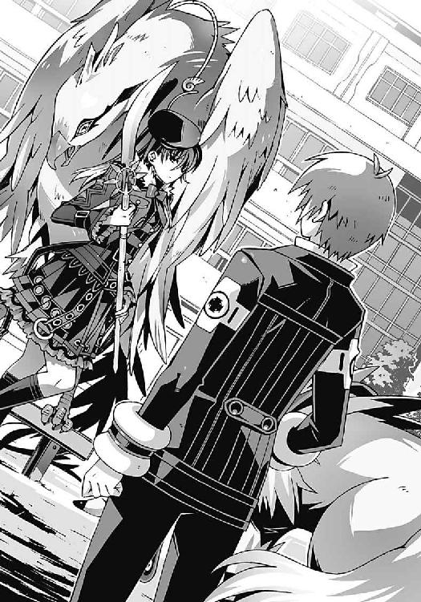
二人の睨み合いは一瞬だった。
「......いいでしょう。鳳島の用はもう済みましたから」
氷の薙刀を消滅させて、氷羽子は溜息をついた。それきり彼女は真日和にはもう目もくれず、
「それでは夏目様、宴の夜に再びお目にかかりましょう」
氷羽子が一方的に僕にそう告げる。
彼女の言葉に従う以外の選択肢は、僕たちには残されていなかった。彼女が僕たちを呼びだした場所は、クリスマスパーティが行われている最中の洛高だ。つまり氷羽子は、洛高のすべての生徒を人質にする、と言っているのだ。
「少し気が早いですけれども......よい聖夜を」
恭しい口調でそう言って、氷羽子は僕たちに背を向ける。使い魔の背中に乗って去っていく彼女の姿を、僕たちはなにもできないまま見送った。
三章
十二月二十四日は曇天だった。暗い鉛色の雲が空一面を低く覆って、見る者をひどく不安にさせた。時折、遠くの雷鳴の音も聞こえてくる。晴れるでもなく、雨が降るわけでもなく、雪になりそうな気配もない。クリスマスイブとしては致命的に盛り上がりに欠ける、パッとしない天気だ。いつもと違うところといえば、明け方ごろから震度二程度の、どうでもいいような地震が何度か起きていることくらいだろうか。
しかし、そんなやる気のない天気とは裏腹に、洛芦和高校の周辺は奇妙な活気に溢れていた。
校門ではスノーマンとサンタの張りぼてが来客たちを出迎え、校内の植木はそれぞれクリスマスツリー仕様に飾り付けられている。体育館の窓にはスノースプレーで雪化粧が施され、金銀の紙吹雪がきらびやかに舞っていた。校内放送では有名なクリスマスソングがノンストップで流れ続けて、否応なく気分を盛り上げてくれる。終業式の直後から始まった、洛高名物のクリスマスパーティ。毎年、文化祭以上に盛り上がるという大がかりなイベントだ。
校庭にそびえ立つ巨大な尖塔も、人々は特に違和感を覚えることなく、普通に受け入れているようだった。パーティの飾り付けの一部だと思われているらしい。
パーティは外来の一般客にも開放されているので、他校の制服を着ている生徒や、中学生の姿もちらほら見かける。彼らをもてなす各クラスの出し物は意外に本格的で、飲食系だけでも定番のフライドチキンやブッシュ・ド・ノエルから、クリスマスと明らかに無関係の焼きそば、綿菓子、チョコバナナまでよりどりみどりだった。なぜかメイド喫茶やお化け屋敷まであって、もはやクリスマスとは無関係のお祭りと化している気もする。
そして僕たちのクラスのダンスミュージカル〝クリスマス・キャロル〟は、そんな意味不明な騒ぎの中でもひときわ異彩を放っていた──
公演会場となっているのは洛高屋上の特設ステージ。プロレスのリングを模した舞台上空に、悪の組織の女幹部っぽい衣装の操緒が浮かび、その下で奇怪な覆面をまとった男子生徒たちが、それぞれ好き勝手に踊り狂っている。ダンスミュージカルというよりは、デパートでやってるヒーローショーのノリである。今は、強敵であるクリスマスの精霊の一体が、主人公スクルージの生き別れの兄である、という秘密が明かされて、大いに盛り上がっている場面だ。
『ホーホッホッホ、燃えろ、燃えろー！ 燃えて灰になっちゃえ！』
高らかな笑い声を上げながら、スクルージの家に代々伝わる借金の証文を燃やす魔王・操緒。高利貸しであるスクルージが借金の証文を失ったら、彼は一文無しとなって、明日から路頭に迷ってしまうという非道な行為である。演技とはとても思えない幽霊の少女の邪悪な表情に、観劇中の客たちが、おおっとどよめく。
『この借金の証文が燃え尽きたとき、おまえの存在だけでなく、生きてきた歴史も灰になって消えてしまうのじゃー』
「私の歴史もだとおおおおぉ......!?」
クリスマスソングのメロディに乗せて伸びやかなテノールでセリフを歌い上げるのは、クラス担任の柱谷教師である。奥さんと別居中という鬱憤を晴らすかのごとき見事な演技だ。
『おまえとスクルージを倒して、今年のクリスマスを粉砕してやるのじゃー。全員自宅に引きこもって二酸化炭素を削減するのじゃー』
「おおーっ！」
「やったらーっ！」
「聖夜にいちゃついてるんじゃねー！ 地獄に堕ちろカップルども！」
「期末テストの日本史難しすぎるだろ！ ふざけんなー！」
私怨の籠もったセリフをミュージカル調に重唱しながら、スクルージ兄を蹴りまくる男子たち。スクルージ兄こと柱谷教諭は、ボロボロの姿になりながらも渾身の演技で、
「スクルージよ......私はおまえのために兄としてなにもしてやれなかった。しかし私がこの世界から消え去る前に、俺の最後の戦いを見届けてくれ──」
かくして自らの命と引き替えにスクルージに新たな必殺技を授けて消えていく兄。スクルージの戦いはこれからだ──
というわけで、
「つ、疲れた......っ」
出番を終えて楽屋代わりのテントに戻ってきた僕は、パイプ椅子にぐったりともたれて覆面を脱いだ。特設ステージの上では今もスクルージ役岡田が、操緒や樋口たちと熱い戦いを繰り広げている。しかしそれを最後まで見届けるだけの体力は僕には残されていなかった。リハーサルに一回参加しただけのほとんどぶっつけ本番状態で、あんなデタラメな舞台に出演したら、神経を磨り減らすどころではない。消耗しきった今の僕には、もはや立ち上がる気力もない。
「お疲れさま、智春」
そんな僕の前に、杏が温かい缶コーヒーを差し出してきた。彼女が着ている着ぐるみは、某プロ野球チームのマスコットキャラ風コアラだった。もうクリスマスとは縁もゆかりもない、ただの仮装大会と化している。
「いやいや、上出来、上出来。ウケてたよ。特にマリポーサが貧乏自慢するところとか、演技とは思えないリアリティだったよ。そのあとのスクルージの首四の字固めも決まってたし」
着ぐるみの頭部を脱ぎながら、笑いをこらえているような表情を浮かべる杏。
僕は缶コーヒーをずるずるとすすりながら、
「演技っていうか、ほとんど全部アドリブだったし......首四の字固めって、もうクリスマス・キャロルでもミュージカルでもないだろ、あれ」
「いやいや。上出来、上出来」
杏がそう言って、僕のすぐ隣に腰を下ろした。僕たちは二人並んだまま、慌ただしく働いているクラスメイトたちの姿をぼんやりと眺める。こうやってパーティの喧噪の中に紛れていると、なんだか自分が普通の高校生に戻れたような気がしてくるから不思議だ。部長や〝神〟のことも忘れて楽しんでいた自分に気づいて僕は苦笑する。
そう、僕は楽しんでいたのだった。このくだらないバカ騒ぎを。
「お疲れ、智春。ロクに練習に出なかったくせに、うまくやったな。ウケまくりだったぜ、首四の字。実にいい演技だった」
公演を終えて戻ってきた樋口が、汗だくの全身タイツ姿で僕の肩を抱いてくる。
「演技ってレベルじゃないだろ、あれ。本当に痛かったんだよ。今も首が回んないし」
飲み残しの缶コーヒーを樋口に手渡しながら、僕はズキズキと痛む首筋を押さえる。
空中に飛び上がりながらの首四の字固め。よい子は絶対に真似してはいけないレベルの危険技だったと思う。あれは。
そして露出度の高い魔王姿のまま戻ってきた操緒は、さっきまでの演技を引きずってるのか、妙にテンションが高い表情で、
『でもさ、来るかどうかもわからない智春を、よくあんな出番の多い役に割り振ったね。誰か怪我して、人数足りなくなったの？』
「ああ、それは大原に礼を言っとけよ」
ぐび、と缶コーヒーの残りを一息に飲み干しながら、樋口が言った。
「杏に？」
どういう意味だ、と僕は首を傾げる。樋口は、僕の隣に座っている杏を、ちょっと面白そうに横目で眺めて、
「大原が言い張ったんだよ。おまえはきっとパーティに間に合うからって」
「だ、だってみんなで一緒にクラスの出し物に出たいじゃん」
杏が軽く声を上擦らせながら、焦ったように言い訳した。そして小さく唇を尖らせ、
「なんか最近いろいろあって、智春たち、ちょっと浮いてたし」
「はは......」
僕は弱々しく乾いた声で笑った。やはりクラスでは浮いてたか。まあ当然か。
「ありがとう、杏」
「え？」
「さすがに最初はちょっと抵抗あったけどさ、楽しかったよ。今日のことは、この先もずっと忘れないと思う」
「智春？」
杏が驚いたように目を丸くして僕を見た。そして無理やりに明るい表情を作って、
「やだなあ、なに言ってるの。まるでもう会えなくなっちゃうみたいじゃない」
「うぐ......」
杏に思い切り後頭部をはたかれて、僕はくぐもった呻き声を洩らした。さっき痛めた首筋に、電気のような激痛が走る。
杏は着ぐるみの腰に手を当てて、上目遣いに僕を睨み、
「言っとくけど、年末年始はうちのお店の稼ぎ時なんだからね。今月サボったぶんもしっかり働いてよ」
「ああ、うん。わかってる」
「智春だけじゃ人手が足りないかな......ね、嵩月さんってバイトしてくれないかな、夏休みのペンションのときみたいに」
「嵩月か。なるほど、そりゃいいな」
樋口がにやり、と悪事を企んでいるような表情を浮かべた。
「わかった。プロデュースは俺に任せろ。嵩月に巫女服を着せて、店の前で御神酒とか振る舞わせたら、いい客寄せになりそうだ」
「......なんで酒屋のバイトが巫女服なんだ？ 神社でもないのに」
僕が呆れ顔で樋口に訊き返す。しかし杏も、いいじゃん、と妙に乗り気で、
「それいいよ。巫女服、似合いそうだし。あたしも前から一回着てみたかったし」
樋口が、えっ、と軽く驚きの表情を浮かべ、
「おまえも着るのか？」
「そうだよ。でも一人じゃ恥ずかしいし」
なぜか堂々と胸を張って杏が言う。その着ぐるみが平気なら、巫女服くらいべつにいいだろ、と思わないでもなかったけれど、
「嵩月には話しておくよ。たぶん喜ぶと思う」
特設ステージの観客席、クマの着ぐるみ姿で迷子になった子どもをあやしている嵩月を眺めながら、僕は杏に告げた。嵩月の隣ではトナカイ姿のアニアが、男のガキどもに殴る蹴るの暴行を受けて、本気で怒りまくっている。
「......智春？」
そんな嵩月たちと僕を見比べて、杏が怪訝そうに目を細めた。
「ねえ、智春って嵩月さんと何かあったの？」
ぎしっ、と僕は、頬の筋肉を硬直させて振り返る。
「ど、どうして？」
「ん、なんとなく......」
杏が、じとっ、と不審そうな目つきで僕を見る。僕は、ぶるぶると大きく首を振り、
「ないない。べつに変わったことはなにも」
「ふーん」
杏はやけにあっさりと納得して追求をやめた。僕はさりげなく杏から視線を逸らし、ホッと安堵の息を吐く。そんな僕の背中で、杏が小さくぽつりと、
「うそつき」
「え？ なにか言った？」
僕は驚いて杏を見返すが、彼女は何事もなかったかのような笑顔で、
「べつになんにもー」
『ねー』
なぜか操緒も、杏に同調して二人で意味ありげにうなずき合う。なんだそれは、と僕は困惑。女子同士の謎の団結力に、軽く疎外感を覚えていると、
「じゃあね。あたし、そろそろ部活のほうの手伝いにいくから」
そう言って、杏は着ぐるみの頭を抱えて立ち上がった。僕は、そのまま楽屋を出て行こうとする彼女の背中に手を伸ばして、
「杏！」
「ん？」
ショートカットの小柄な少女が、いつもの人懐こい笑顔で振り返る。その瞬間、なぜか僕は彼女に伝えようとした言葉を失った。なにも知らない。なんの力も持たない普通の少女。だが、どれだけ異常な体験を繰り返しても、最後まで僕をこの平凡な世界につなぎ止めていてくれたものは、たぶん彼女のその笑顔だったのだと思う。
そのことを不意に理解して、言葉にならない無数の想いが頭の中を渦巻いて、結局、僕が口にしたのは、少し間の抜けたひと言だけだった──
「ありがとう、杏」
「え？」
突然の僕の言葉に、杏はきょとんと目を瞬いて、
「うん。じゃあ、またあとでね」
クスクスと笑いながら手を振った。着ぐるみの頭部を自力で器用に装着し、そのまま外へと飛び出していく。彼女の背中を見送って僕が静かに息を吐いたとき、杏と入れ替わりに誰かが近づいてくる気配がした。
「夏目智春！ 夏目智春はいるか──!?」
楽屋の外で、よく通る低い声がする。うわ、と僕は頭を抱え、操緒がげっ、と顔をしかめる。佐伯玲士郎の声だった。暑苦しいくらいに美形の第一生徒会会長。僕たちは彼が苦手なのだ。
しかしそんなことはお構いなしに、楽屋の入口から、ぬっと長身の影が現れる。
そんな彼の姿を渋々と見返して、
「どうしたんですか、佐伯あ......会長？ って、げっ!?」
その瞬間、僕は絶句した。あまりの衝撃に眼球が潰れるかと思った。
佐伯兄が着ていたのは、金糸の縁取りを施したヒラヒラフリフリの純白のドレス。ウエストをコルセットでぎちぎちに締め上げ、胸は詰め物でこんもりと膨らんでいる。頭には金髪ロングヘアのウィッグを被って、顔はばっちりとお姫様メイクが決まっている。
そして彼は、長いマスカラで縁取られた目を細め、
「なんだ、その恰好は？」
全身タイツ姿の僕を見て怪訝そうに訊いてくる。言われたくない。今のあんたにだけは、そのセリフを言われたくないぞ。
「会長こそ......なんで女装なんか......」
僕はうんざりと訊き返す。この人と女装というキーワードには、僕は嫌な思い出があるのだ。なまじ元が美形だけに、似合ってなくもないという事実に余計に腹が立つ。ふと見れば、操緒が、腹を抱えながら声を殺して笑っていた。
しかし佐伯兄は真面目な口調で、
「このあとクラスの劇に出ることになっているんだ。王女役でな。本来であれば黒崎がこの役をするはずだったのだが、あの女に代理を頼まれてな」
「だからって、そんな恰好で出歩かなくても......」
僕はやんわりと遠回しに佐伯兄の行動を非難してみるが、
「次の公演まであまり時間がなくてね。通し稽古の途中で抜けてきたのだよ」
本人は特に気にする様子もなく平然と言った。もしかしたらその恰好が気に入ってるのではないか、と想像して僕はゾッとする。
「それよりもきみに話がある。悪いが、少しつき合ってもらおう」
佐伯兄は有無を言わせぬ口調で告げた。つき合ってくれ、という彼の言葉に、いろんな意味で悪い予感を僕は覚えた。とはいえ、断るわけにもいかず、僕はやれやれと上着を羽織る。
「はあ......いいですけど、少し離れて歩いてくださいね」
○
佐伯兄が僕を連れて行ったのは、第一生徒会の会長室だった。いつもの屈強な生徒会役員たちはパーティの会場整理で出払っているらしく、部屋の中にいるのは僕と操緒と佐伯兄だけだ。
会長室は、豪華な応接セットを揃えた、ティールーム風の部屋だった。僕と操緒が、初めて機巧魔神に遭遇したのも、この部屋だったな、と嫌な記憶を思い出す。
相変わらず学校の敷地内にあるとは思えない場違いな部屋だが、あのとき佐伯兄の隣にいた哀音はもういない。元演操者と化した今の佐伯兄には、操緒の姿はもう見えない。そして会長室の窓の外には、かつては存在しなかった塔の姿が見える。
洛高の校庭にそそり立つ、巨大な黒い尖塔が──
「黒崎から事情は聞いている」
席に着くなり、佐伯兄はそう話を切り出した。もちろん女装状態のままである。ふざけているとしか思えない姿だが、彼の表情はいたって真面目だった。
「塔貴也の仕業らしいな。倉澤六夏に重傷を負わせたのも、第三生徒会室を爆破したのも、科學部を壊滅させたのも──」
淡々と告げる佐伯兄を、僕は苛ついた気分で睨みつけた。洛高生の安全を守るのが、校内の治安維持を担当する第一生徒会の任務のはず。なのに、
「それを知っていて、あの塔をこのまま放置しておくつもりですか？」
「塔には手を出すな、と学生連盟からの通達だ。第一生徒会は動けない」
佐伯兄の言葉に、かすかに悔しさが滲んだ。僕は彼のその反応に驚く。やはりアニアが言っていたことは本当だったのだ。学生連盟は部長と手を組んでいる。
「......本気ですか？ あの塔が建てられた目的を知っても？」
「あの塔は、〝神〟を破壊するために造られたものだと聞いた」
「それは......たしかにそうですけど」
「非在化が、始まっているそうだ......この世界の非在化が」
佐伯兄はそう言って窓の外に視線を向けた。
「......え!?」
『非在化!?』
僕と操緒は愕然と彼の言葉を聞いた。
佐伯兄は、厚い雲に覆われた空を物憂げに見上げて、
「〝神〟の仕業だよ。どれほど広大でも世界の内部の質量が有限である以上、やつがこの世界に出現する代償として、世界からは何かが消滅することになる。〝神〟は、世界の一部を喰らうことで実体化しようとしているんだ。このままでは、遠からずこの世界は消滅する」
『智春......もしかして、今朝の地震って......』
操緒の呟きに、僕はハッと顔を上げる。
謎の地震が続いていることは、今朝のニュースでも話題になっていた。それが世界の急激な非在化の影響だとしたら、原因不明のその異変にも納得がいく。
非在化とは、記憶すら残さずに世界から消滅することだ。人間には非在化してしまった世界は知覚できない。場所も人も、それが存在したことすら思い出せないままに、消滅する。どんなに調べても地震の原因が特定できるはずがない。
〝神〟は自らの出現と引き替えに世界を消滅させる。
それが世界が滅びるメカニズムの正体か。
「〝神〟をこのまま放置するわけにはいかない。いや、我々はあんなものを神だとは認めない。あれこそが本当の〝機械仕掛けの悪魔〟だ。やつを滅殺することが我らの使命だ」
佐伯兄が、相変わらずの生真面目な口調で言った。頬にかかる長い髪が無駄に色っぽい。
僕は険しい表情で彼を睨んだ。佐伯兄が僕をここに呼んだのは、部長に協力するように僕を説得するためか──
「だから、あなたは、部長のやり方を認めるっていうんですか？」
「〝神〟を破壊するためだ」
苦々しげに眉間に皺を刻んで、佐伯兄が告げる。
「そのために何億もの人々の魂を犠牲にしてでも？」
「たとえこの世界の人類が一度滅びても、塔貴也にはそれを復活させる手段がある。やつの機巧魔神の力で過去に戻って歴史の分岐を変えれば──」
「だけど、そうやって生き返った人々は、もう僕たちの知っている彼らとは違う！」
僕は乱暴にテーブルを叩いて立ち上がる。
我ながら深刻な会話をしていると思うのだが、佐伯兄は女装中で、僕の服装は全身タイツ。そのせいかまったく緊張感がない。操緒が、たまに唇をひくひく痙攣させているのは、もしかして笑いをこらえているのだろうか。
「あの人の目的は、〝神〟の存在しない〝三巡目〟の世界を作ることじゃない。自分の思い通りになるように、世界の歴史を変えることです。鐵に魂を喰われた副葬処女、橘高秋希を生き返らせるために──」
馬鹿な、と佐伯兄が低く呻いた。
僕は、胸の奥に鈍い痛みが走るのを感じる。副葬処女を失ったのは、部長だけではない。もしかしたら佐伯兄は、誰よりも部長の気持ちに共感できる人間なのかもしれないと思う。
「それに部長のやり方では、世界の滅びを止められないんです」
「どういうことだ？」
僕の言葉が意外だったのか、佐伯兄がかすかに眉を上げた。
「〝神〟の目的は、超弦重力炉を生み出した世界の抹消です。もし今の〝神〟を破壊して過去に戻ったとしても、重力炉が存在する限り──」
「新たな〝神〟が現れる可能性がある、というのか？」
む、と佐伯兄が顎に手を当てる。僕はゆっくりとうなずいて、
「そうです。だけど部長が過去に戻るためには、時間移動のための門となる重力炉が稼働してなければならない。部長が、悪魔の力を借りて彼の望みを叶えようとする限り、〝神〟は必ず現れる──」
「......学生連盟がやつに協力するのは、無意味に滅びを早めるだけだというのか、夏目智春？ 塔貴也を止めない限り、世界の消滅は止まらないと？」
佐伯兄の表情が険しさを増していく。
彼の言葉に、僕は黙ってうなずいた。それはただの仮説に過ぎない。けれど、〝一巡目〟の世界で、僕が本物の直貴から聞かされた話から想像する限り、それが真実である可能性は高かった。
いまだ〝神〟の正体がわからない以上、誰にもそれを否定することはできないはずだ。
「だが、ならば今の〝神〟をどうする？ 塔貴也のやり方以外に、あの怪物を倒す方法があるとでもいうのか──？」
「あります」
「なに？」
驚く佐伯兄を見つめて、僕は首肯した。全身タイツの上に羽織っていた制服の内ポケットから、もぞもぞと一本の金属筒を取り出す。それはキノコに似た形の電子部品だった。機巧魔神のプラグイン──イグナイターだ。
「〝神〟は、僕たちが倒します」
「夏目智春......きみは......」
佐伯兄がなにかに気づいたように低く呻いた。
「わかっているのか？ イグナイターは点火装置──機巧魔神の魔力を暴走させ、爆弾に変えるための信管だ。たとえきみが魔神相剋者の能力を手に入れたとしても、〝神〟を破壊するほどの魔力を放出すれば、その反動で演操者も確実に消滅する」
「知ってます。でも──」
佐伯兄の警告に僕は首を振り、イグナイターをテーブルに置いて言葉を続けようとした。
そのとき会長室の入口近くで、がしゃん、と甲高い音がした。僕たちは驚いて振り返る。
「あ......」
立っていたのは佐伯玲子だった。彼女の足元には金属製のトレイと、割れてしまった高級そうなティーカップが転がっている。紅茶を運んでくる途中で、僕たちの会話を聞いてしまったのだろう。佐伯妹の顔色は真っ青で、彼女の唇は小刻みに震えていた。
「本当なの？」
かすれた声で佐伯妹が訊いてくる。僕は、怯えたように震える彼女の反応に軽く戸惑った。
「佐伯？」
「今の話、本当なの、夏目？ あなたが消滅するって......」
「え、いや、違うよ。僕は──」
僕は、追い詰められたような表情の佐伯妹に言い訳しようした。だが、佐伯妹はそれを最後まで聞かずに、
「くっ」
何か決意したように唇を引き結ぶと、僕に向かって猛然と突進してきた。その勢いに、僕は圧倒されて動けない。そして、
「玲子!?」
『わお......！』
唖然とする佐伯兄を強引に押しのけ、予想外の展開をおもしろがっているような操緒の横をすり抜けて、佐伯妹はテーブルの上に置かれていたキノコ型の金属筒を手に取った。そして、そのまま僕たちに背を向け、脱兎のごとく走り去っていく。
「イ、イグナイターを......」
部屋を出て行く佐伯妹の背中を、僕は呆然と見送った。そしてハッと我に返り、彼女を追って慌てて走り出す。なにがどうなっているのかわからない。なぜ佐伯妹がイグナイターを奪って逃走するのだ。
イグナイターを握りしめたまま階段を駆け下り、パーティで賑わう校舎のほうへと疾走していく佐伯妹。そんな彼女の必死な姿を、佐伯兄は無言のまま会長室の窓辺で眺めていた。
○
佐伯妹は、女子としてはかなり足の速いほうだったらしい。元陸上部の僕が全力で追いかけても、じりじりとしか差が詰まらない。それだけ彼女も必死なのだろう。なんでそこまで、という気もしないでもないが。
「佐伯、待てよっ。なにやってんだ、おまえ！」
ようやく彼女の背中が見えてきたのは、佐伯妹が、クリスマスムード一色に染まった校舎の中に入ってからだった。逃げまどう女子生徒と、それを必死の形相で追いかける全身タイツの僕の姿を、ほかの生徒や外来の一般客たちが、唖然とした表情で眺めている。
それでも僕は、どうにか彼女の手首をつかむことに成功し、
「待てってば！ それを持ってるとおまえが危険なんだよ！ 早く返せ！」
「イヤっ！」
佐伯妹が、僕の手を振りほどこうと暴れながら叫ぶ。
「これを渡したら、夏目はあの〝神〟だかなんだかと一緒に自爆するんでしょ！ そんなこと、このあたしが許すわけないじゃない！ 絶対に渡さないんだから！」
「なんでおまえが僕の心配をするんだよ!? 佐伯には関係ないだろ！」
僕は思わずそう叫び返して、その瞬間、佐伯妹の動きが凍りついたように止まった。
『......うわっちゃあー』
僕たちの様子を眺めていた操緒が、そう言って大袈裟に顔を覆う。
「うっ......く」
佐伯妹が、ゆっくりと振り返って顔を上げた。彼女の表情を見て、今度は僕が凍りつく番だった。顔を歪めた佐伯妹は、ぼろぼろと涙をこぼしている。
「さ、佐伯......？」
思いがけない佐伯妹の反応に、僕はひとたまりもなく狼狽し、そしてがら空きになった僕の脇腹へと、
「夏目のバカアアアアアアアアアァッ！」
「ぐおっ」
佐伯妹の渾身の右フックが炸裂した。ずん、と脳天まで痺れるような壮絶な苦痛に息が止まって、僕はふらふらと佐伯妹にしがみつき、
「バカ、バカっ......来ないでよ、バカ！ 変態！」
そんな僕の鳩尾を目がけて、佐伯妹がショートアッパーを連打する。情け容赦のないその攻撃に、僕の生命力はほとんどゼロになっていた。来るなと言われても、身体の自由が利かない。支えてもらわないと立ち続けることもできない状態で、僕はどうにか彼女を説得しようと、
「痛て......っ、やめろって。そのイグナイターは鳳島氷羽子たちが狙ってるんだって。そんなもの持ってたら、おまえが危険な目に遭うかもしれないだろ──！」
「な、なによそれ......」
佐伯妹の攻撃がようやくやんだ。彼女は声を震わせながら、ＴＫＯ寸前の僕を見返して、
「なんであんたは、この期に及んで他人の心配なんかしてるのよ......夏目が......あんたがそんなだから、あたしは......」
「え？」
僕が意識朦朧とした状態で顔を上げると、涙目の佐伯妹と驚くほどの至近距離で目が合ってしまう。そして佐伯妹は、突然、僕の背中に手を回すと、
「バカアアアッ......！」
「ぐお......」
彼女の強烈なヘッドバットを喰らって、僕はなす術もなく吹き飛んだ。壁際に積まれていた段ボールの山に突っこみ、鼻の頭を押さえて苦悶する。
操緒が、あーあ、と溜息をつきながら、そんな僕の姿を見下ろしていた。僕は力なく彼女のほうへと手を伸ばし、
「み、操緒。佐伯を止めてきてくれ。頼む」
『もう......しょうがないなあ』
呆れたように肩をすくめて、操緒は走り去った佐伯妹のあとをふわふわと追った。ものすごい勢いで階段を駆け上っていく佐伯妹に、天井を突き抜けて追いつき、
『佐伯ちゃん、佐伯ちゃん......』
あまりやる気のない口調で呼びかける操緒。
佐伯妹は、警戒したように幽霊の少女を睨みつけ、
「なによ。あんたまで邪魔する気!?」
ん、と操緒が澄ました表情で首を振る。
『そうじゃないけど......あんまり、そんなもの振り回しながら走らないほうがいいよ』
「え？」
気遣うような操緒の言葉に、佐伯妹が足を止めた。自分が右手に持っているイグナイターの形状を、彼女は冷静になってまじまじと見つめる。どぎつい原色で塗られたキノコ型の金属筒。自分がしっかりと握りしめていたアイテムの、どことなく卑猥なシルエットに気づいて、
「きゃあああああっ!?」
佐伯妹はそれを全力で投げ捨てた。校舎の壁にぶつかって跳ね返ったイグナイターは、お祭り騒ぎでごった返す廊下に転がり、不幸にもそこに通りがかったのは、一人の若い男だった。
パンク風の不良ファッションの上に、板前っぽい前掛けをつけた少年だ。見た目は威圧的だが、どこか頭の悪そうな雰囲気の若者である。両手にたこ焼きのパックを抱えて鼻歌交じりにふらふら歩いていた彼は、足元に転がるイグナイターの存在に気づかず、
「うおっとォ!?」
見事にそれを踏みつけて仰向けに転倒した。ごん、と後頭部を打ち付ける鈍い音が響き渡り、それに紛れて、バキ、となにかが折れるような小さな音がした。
「痛ってええええええええっ！ う熱ちゃああああああっ！」
後頭部を押さえてのたうち回っているところに、落っこちてきたたこ焼きを顔面にかぶり、少年が悲痛な叫び声を上げる。
そんな廊下の惨状を、ようやく追いついてきた僕は呆然と眺め、
「イ、イグナイターは？」
『バキ......？』
少年の足元を見つめて、操緒が呟いた。ようやく起き上がった銀髪の少年は、金属筒を拾い上げて、
「痛ってえな。なんだよ、これ。あ？」
『......鳳島蹴策？』
少年の顔を見た操緒が、露骨に顔をしかめて彼の名前を呼んだ。その言葉で少年も僕たちに気づいて、
「げっ、夏目智春？ これ、もしかしておまえのか？」
そう言って鳳島が拾い上げたのは、中央でぽっきりと折れたイグナイターだ。
「あ......ああ......」
佐伯妹が、無惨な姿に変わった金属筒を見つめて、虚ろな声を出す。鳳島は折れたイグナイターをぶらんぶらんと弄びながら、
「言っとくけど、俺が悪いんじゃないからな。こんなもん、廊下のど真ん中に転がしておくほうが──ぐべっ!?」
「なんてことしてくれんのよ、あんた──!?」
そんな鳳島の顔面を、佐伯妹が思いっきり踏みつけた。再び廊下に後頭部をぶつけて、鳳島はくぐもった悲鳴を上げた。
「れ、玲士郎んとこの妹？ おまえ、なんで他人の顔を足蹴に......俺は女に踏まれて喜ぶ趣味はないぞ」
「あたしだってそんなことして喜ばせる趣味はないわよっ！」
抗議の声を上げる鳳島を、佐伯妹はさらに容赦なく何度も蹴りつけ、
「あんた、自分がなにをやったかわかってんの？」
その言葉に鳳島はハッと顔を上げ、壊れたイグナイターと佐伯妹の顔をちらちらと見比べた。
「も......もしかして、この大人のオモチャ、おまえのだったのか？ おまえ、まだ若いのにこんなの使ってるとガバガバに......」
「この......下品な雄型悪魔は、今すぐ地獄に送り返されたいのかしら......!?」
佐伯妹がどこからともなく取り出してきたパイプ椅子を頭上に高々と振り上げた。さすがに鳳島が哀れになって、僕はそんな佐伯妹をどうどうとなだめる。放せえ、と抵抗する佐伯を、僕が必死で抑えている間に、
『なんで鳳島がこんなところにいるの？』
傷だらけの鳳島に、操緒が訊いた。鳳島は、廊下に散らばったたこ焼きのパックを見つめて、やれやれと首を振り、
「見てわかれよ。バイトだよ。たこ焼きの屋台のバイト中。おまえら学生と違って、社会人は忙しいんだよ」
『ふーん』
操緒がいちおう納得したように呟いた。どうやら鳳島は、部長の計画などとは無関係に、たまたま洛高に来ていたということらしい。鳳島が嘘をついている、という可能性もあったが、おそらく信用しても問題ないだろうと僕は判断する。この男に、演技などという高尚なことができるとはとても思えない。
「なあ、鳳島」
鳳島の手から壊れたイグナイターを受け取って、僕は彼にぼそりと語りかける。
「なんだ。弁償はしねえぞ。金ねえし」
いかにも鳳島らしい身勝手な返事に、僕は軽く苛立ちつつ、
「氷羽子のこと......救ってあげてくれないか」
鳳島がきょとんと僕を見返し、
「あん？ 誰だ？」
「おまえの妹だよ。鳳島氷羽子。彼女は、おまえに自分のことを思い出してもらうためだけに、この世界を滅ぼす手伝いをしようとしてるんだ......その前に、彼女を止めてやってくれ」
「俺の......妹？」
急な頭痛に襲われたように、鳳島はぐっ、と頭を押さえて呻く。
今の僕には、彼のその反応の理由がわかっている。雄型悪魔である鳳島は、魔力を使うのと引き替えに、最愛の者に関する記憶を失っていくのだ。
鳳島は、おそらく僕たちと出会う前に、妹の氷羽子を守るために強大な魔力を使ったことがあるのだろう。その結果、その大切な妹の記憶を失った。そして氷羽子は、兄の失われた記憶を取り戻すために、部長に協力している。今の氷羽子を止められるとしたら、それは鳳島以外にいなかった。だがしかし──
「なんだ、智春。なんの騒ぎだ」
タイミングの悪いことに、廊下の人混みをかきわけて現れたのは一人の小柄な少女だった。金髪碧眼の交換留学生、アニア・フォルチュナ・十五歳バージョン。
「アニア......いや、これは......」
べつにアニアの責任ではないのだが、最悪の巡り合わせに、僕は頭を抱えた。氷羽子の記憶を失った心の欠落を埋めるためなのかなんだか知らないが、鳳島は、アニアのことを自らの妹と勘違いして、ほとんどストーカーのようにつきまとっていたのだ。
「おお、久しぶりだな、我が理想の妹よ！ お兄ちゃんはここにいる......ぞ？」
別人のように生き生きした表情になって、銀髪男が振り返る。だがしかし、そこで彼が目にしたのは、五年分ばかり成長してすっかり大人びたアニアの姿だった。
鳳島は自らの目を疑うようにパチパチと何度も瞬きして、
「おおおおおおおおおっ!?」
この世の終わりかというような叫び声を上げた。
『おう......想像以上のリアクションだね......』
「まあ、こうなるよな」
操緒と僕は、あきらめたように溜息をつく。鳳島は、立っていられないほどの精神的ダメージを受けたのか、へなへなと廊下に座りこんで、
「どうなってるんだ、夏目智春。なんで、我が妹が......育って......」
「なんだ、このバカは。まだ生きていたのか？」
そんな銀髪男を見下ろして、アニアが辛辣なセリフを吐く。鳳島は恨みがましい目つきで成長したアニアを見上げ、
「う......俺の理想の妹が......理想は何処に......」
「はあ......」
真面目に相手をするのが馬鹿馬鹿しく思えてきて、僕は疲れた気分で壊れたイグナイターを眺めた。金属製の本体は見事にへし折れ、先端の傘状のカバーが大きく欠けている。内部の電子回路もあちこち潰れていたし、いくつか行方不明になってしまった部品もありそうだ。
「ごめん、夏目。あたしのせいで......」
佐伯妹が萎れた表情で謝罪してくる。僕はそんな彼女を驚いて見つめ、
「な、なによ、その表情？」
「いや、だって......佐伯が僕に謝るなんて珍しいと思って。いつも怒ってるような印象しかなかったから......」
「あ、あんたがそういう態度だから......」
ぎりっ、と奥歯を鳴らしながら佐伯妹が拳を固める。僕はそんな彼女を見返して、
「でも、ありがとう」
「......は？」
佐伯妹が、虚を突かれたように、ぽかんと口を開けた。壊れたイグナイターを手の中で軽く回して、僕は晴れ晴れとした表情を浮かべた。
「もっと早くこうすればよかった。ありがとう、佐伯」
「夏目......」
戸惑ったような表情で、佐伯妹が僕を見返す。僕は目を伏せて薄く微笑み、
「おかげで覚悟が決まったよ。イグナイターは部長には渡さない。〝神〟を破壊するだけじゃ駄目なんだ......みんなが生き延びないと」
「──あ、あなたもよ、夏目！」
佐伯妹が、僕の言葉を遮って早口で言う。
「え？」
「勝手に死んだりするなって言ってるのよ。〝神〟だかなんだか知らないけど、勝手にまたどこかに行って戻ってこないなんて、そんなこと許さないから」
「うん。まあ、なんとかやってみるけど」
そう言って頼りなく微笑む僕の目の前に、
「や、約束よ」
佐伯妹が差し出したのは、小指を立てた右手だった。指切りしろ、という意味なのだろう。
「え？ ああ......うん」
こんな人目のあるところで恥ずかしいなあ、と思いつつ、僕は彼女と小指を絡め合う。そして僕はふと気づく。佐伯妹の目から、涙がこぼれ落ちている。
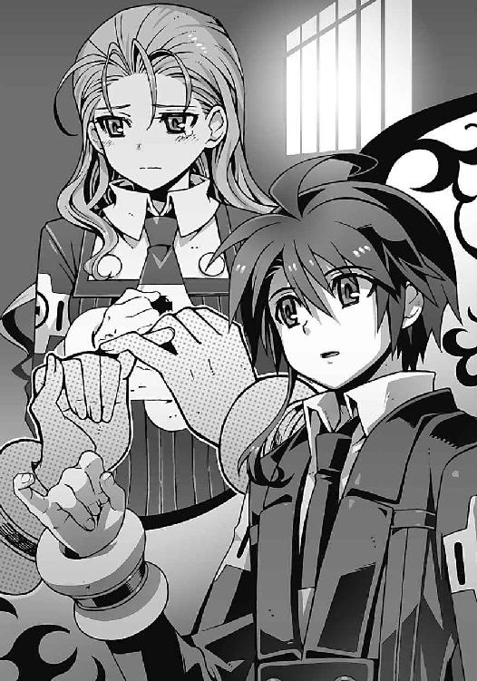
それが僕と約束を交わしたことへの安堵の涙なのか、それともなにかほかの意味があるのか、僕は理解できないまま、泣いている彼女を呆然と見つめ、
「見ないでよ......バカ」
佐伯妹は頬を赤くしながら、怒ったように目を逸らしてそう言った。
○
異様な雰囲気で盛り上がっていたクリスマスパーティも、日が暮れるころには閉会になった。
クリスマスとはまったく無関係の、ただのお祭り騒ぎでしかなかったような気もするけれど、今日のイベントの収益金は慈善団体に全額寄付されることになっているらしい。そういう話を聞いてしまうと、意外にまともな学校行事だったような気がしてくるので不思議だ。
華やかなクリスマスソングの演奏は終わって、体育館のステージでは、合唱部による賛美歌の斉唱が行われていた。今も礼拝堂では有志によるミサが行われているのだという。もしかしたら僕の知らないところでは、ちゃんとしたクリスマスが行われていたのかもしれなかった。
他校の生徒や一般客はすでに引き揚げて、今も校内に残っているのは、洛高生と学校関係者だけだった。閑散とした校庭には、クリスマスツリーの電飾がちかちかと瞬いて、儚くも美しい光景を描き出している。
僕たちは、校庭の隅の非常階段に座って、その地上の星たちのきらめきを眺めていた。あと少ししたら後夜祭が始まる予定になっているのだ。クリスマスパーティ最後のイベントが──
「智春！」
僕とアニアが夕食代わりのクリスマスケーキを頬張っていると、頭上から声をかけられた。両手に買い物袋をぶら下げた樋口が、非常階段を下りてくる。
「ほらよ、飲み物もらってきたぜ。ガキんちょも、ほれ」
「サンキュ」
放り投げられたペットボトルを受け取る僕の背後で、誰がガキだ、とアニアがふて腐れる。樋口は買い物袋に入っていた食料をガサガサと広げながら、ふと顔を上げて、
「あれ、嵩月は？」
『あっちあっち』
操緒が指さしたのは、ひときわ豪華なクリスマスツリーの方角だった。高さ十数メートルの本物のモミの木を、星飾りや、ベルや、キャンディケインとジンジャーマンクッキー、金銀のモールと雪代わりの綿、そして無数の電飾で彩った、とてつもなく豪華な代物だ。さすがに部長の黒い尖塔の存在感には遠く及ばないが、少なくともクリスマスらしさでは負けていない。
当然、そこで記念写真を撮りたいというのは誰もが普通に考えることで、ツリーの前には、写真撮影の順番待ちの長い行列が出来ている。
そしてその混み合った撮影会場の中央には、なぜか嵩月の姿があった。杏や玲子たちと嵩月が写真を撮ろうとしていたところ、自分も一緒に写りたいと言い出す生徒が、男女問わず続出。おろおろとうろたえる嵩月を取り囲む形で、大撮影大会になってしまっている。
そんなツリー前の騒ぎを、樋口は愉快そうに眺めて、
「おう、すげえ人だかり。あわよくばツーショットの写真を撮るチャンスを狙ってた野郎とか、多そうだもんな」
『モテモテだねえ、嵩月さん』
操緒も感心したように、うんうん、とうなずく。
「やっぱり嵩月って、人気があるんだな」
僕は今更のようにその事実に気づいて、少し複雑な気分になった。なぜそんな子が、自分の身を犠牲にしてまで僕を守ろうとするのだろう。
そんな僕の困惑を見抜いたかのように、樋口が何気ない口調で言う。
「まあ、半分はおまえのおかげなんじゃねえの？」
「僕が？ なんで？」
「最近の嵩月は、昔の取っつきづらい雰囲気がなくなったからな。前に比べてよく笑うようになったし、意外と間の抜けたところがあるってみんな気づき始めてるし。クールと思ってたらただ喋りがトロいだけだったってバレたり、それって、おまえと一緒にいたからだろ」
褒め言葉だかなんだかよくわからない樋口の言葉を、僕は不思議な気分で聞いていた。そう言われても実感はわかない。嵩月が本当に変わったのだとしたら、それは彼女自身の功績で、僕が彼女になにかしてあげられたわけじゃない。だが、それでも、僕と出会えたことが彼女にいい影響を与えたのなら、それは素直によかった、と思える。うん、よかった。
そうやって僕が、娘の成長を見守る父親のような感慨に浸っていると、
『恋敵が智春なら、勝ち目がありそうだってみんな思うだろうしね』
にししっ、と操緒が意地悪そうに笑いながら言う。
「そうそれ。それはある」
ぱちんと指を鳴らして激しく同意する樋口。どういう意味だ、と僕はふて腐れて頬杖を突く。
『まあ、そんなことはどうでもいいとして......結局これ、どうするの？』
落ちこむ僕の感情をどうでもいい呼ばわりして、操緒がさっさと話題を変えた。
彼女が見下ろしているのは、ぐにゃりとへし折れたキノコ型の金属筒だ。
「イグナイターか......」
どうしたものかな、と僕は頭を抱える。
『部長の儀式魔法は邪魔するにしても、〝神〟を倒すにはこれが要るんでしょ？』
「うーん」
冷静な操緒の指摘に、僕はもだもだと思い悩む。佐伯妹の前では、成り行きであんなことを言ってしまったが、イグナイターがないのはやはりまずいと思うのだ。確実に〝神〟を倒し得る唯一の手段を、人類は失ってしまったことになる。しかも、たこ焼きを運搬中のバイト店員に踏まれるという、思いつく限りもっともアホな原因で。
「なあ、アニア......これ、どうにか直らないか？」
「これだけ見事にぶっ壊しておいて、直るわけがないだろう」
フライドチキンを齧っていたアニアが、蔑むような視線を僕に向けてきた。
「こいつの構造は私にもよくわかってないんだ。誰が作ったのかもわからない謎のプラグインだからな......」
「前にもそう言ってたよな」
ぺろり、と口の周りの油を舐め取る少女の横顔を眺め、僕はぐったりと息を吐く。機巧魔神の設計者であるアニアに修理できないということは、このプラグインの修理は事実上もはや不可能ということである。
「しかし、壊れたままにしておくわけにはいかないだろうから、とりあえず壊れたところは、瞬間接着剤でくっつけといてやったぞ」
「なんか意味あるのか、それ......？」
よく見ると欠けていた部品のいくつかが、たしかに無理やり接着された痕跡がある。しかし適当なやっつけ仕事のせいか、そのシルエットは全体的にいびつに歪んで、
『なんか前よりも、いっそう卑猥な形になっちゃったような......』
操緒が嫌そうに顔をしかめて目を背けた。やれやれと僕は天を仰ぐ。
上空を覆っていた厚い雲はいつの間にか姿を消して、澄んだ冬の空気の向こう側に、美しい夜空が広がっていた。地平線すれすれに浮かぶ上弦の月と、無数の星たち。そして──
「見ろよ、智春」
樋口の言葉に、僕は南天の方角に目を向ける。
そこに浮かんでいたのは闇の中に、ぼんやりと光輝く銀色の塊だった。
これまででもっとも鮮明に姿を現した、圧倒的に巨大な機械仕掛けの腕──
「〝神〟......！ 前よりもくっきり見えるようになってる......!?」
「でかいな。この距離であれだけはっきり見えるってことは、地球なんか簡単にひねり潰せるくらいのサイズってことか。感動的だな」
感動的、という樋口の言葉に僕は唖然とする。だが、そういえばこいつはこういう男だった。樋口には自分の命や世界の滅亡なんかよりも、好奇心を満たすことのほうが重要なのだ。ある意味、ものすごい大物なのかもしれないとも思う。
しかし実際の〝神〟の姿は、感動的と言ってられるほど生やさしいものではなかった。僕たちの頭上を覆い尽くす、巨大な神の手。それは生物としての原初的な恐怖心を呼び覚ますのに十分な威圧感があった。
「私は、考え違いをしていたのかもしれない......」
「......アニア？」
金髪の小柄な少女が、怯えたように小さく震えている。こんなふうにアニアが恐怖を露わにしたのは、僕の知る限り初めてのことだった。悪魔である彼女は〝神〟の持つ圧倒的な力を、直に感じ取っているのかもしれない。
自分の両肩を抱いたまま、アニアは譫言のような弱々しい声で、
「あれはもう人間の手に負えるような代物ではないのかもしれない。魔神相剋者が無限に魔力を増幅できるといっても、それは理屈の上でのことだ。機巧魔神が、しょせん機械に過ぎない以上、どこかで限界が訪れる」
「イグナイターを使っても、〝神〟は倒せないかもしれないってこと......？」
思いがけないアニアの言葉に、僕は動揺を隠せなかった。とはいえ、〝神〟を倒すもなにも、肝心のイグナイターはへし折れて使い物にならない状態なのだが、
「塔貴也の選択が、正しかったのかもしれないな。全人類の魂をすべて魔力に変換して、増幅することができれば、あるいは......」
アニアが絶望の表情を浮かべてうめく。しかし僕は、そんな彼女の後頭部を軽くはたいて、
「違うよ、アニア」
「智春？」
アニアがムッと顔を上げて僕を見た。僕は彼女の頭に手を置いたまま、
「〝神〟は倒せる」
「なぜそう思う？」
「僕が、兄貴とは──〝一巡目〟の世界から来た過去の僕とは違うから」
「なに？」
アニアは、僕の手を払いのけることも忘れて、睫毛を震わせた。
「〝一巡目〟に飛ばされたときに考えたんだ。どうして彼が失敗したのか」
僕は自分の両手に視線を落とす。そう。夏目直貴と名乗っていた僕は失敗した。彼の失敗は、時間を遡ったときに悪魔化してしまったことでも、部長の正体に気づかず殺されてしまったことでもなかった。あいつは一人ぼっちだったのだ。
「あいつは自分だけの力で目的を果たそうとしたんだ。誰にも頼らずに、たった一人で──」
彼の最後の姿を見ていたときにわかった。あの男は、射影体になった嵩月にも、心を許してなかったのだと思う。あいつを追ってこの世界に来た環緒さんとも、頑なに会おうとしなかった。自分と、自分の機巧魔神の能力だけで世界を救おうとしていたのだ。
「だけど、それじゃ駄目なんだ」
僕は荒々しく地面を殴りつける。
「僕一人の力じゃ今までだってなにもできなかった。操緒や嵩月、朱浬さんやアニア、樋口や杏、それに佐伯会長たち──部長もだ。みんながいたから、なんとかやってこれたんだ。だから、〝神〟だってきっと倒せる。僕にはなんの力もないけど、それでも誰も犠牲にしないで世界を救う方法を絶対にあるはずだから──」
「......相変わらず今の状況が認識できていないようだな」
アニアが、冷ややかな声で僕の言葉を遮った。そして彼女は笑い始める。さっきまでの怯えていた態度が嘘のような愉快そうな笑顔で、
「なんの力もない、だと？ 最強の魔神相剋者の能力を手に入れておきながら、自覚のないことだ......だが、おまえらしいな。気に入ったぞ！」
「アニア？」
「樋口、手伝え！ パソコンが大量に必要だ」
ドリルのような金髪をふわりと広げて、アニアが立ち上がる。
樋口は怪訝そうにそれを見つめて、
「なにをする気だ、ガキんちょ？」
「〝神〟は倒せなくても、塔貴也の邪魔をするくらいなら私にもできるからな。あの塔の結界を破って、儀式魔法を解除する。勝手に他人の命を使わせてやるわけにはいかん。今度は私があの男を泣かす番だ」
ふふん、と鼻を鳴らして、アニアが唇を吊り上げた。樋口もニヤリと笑って立ち上がり、
「オーケー、そういうことなら手を貸すぜ」
「樋口？ 科學部の出し物の司会は......」
たしか、このあと天使召喚ショーだかなんだかの司会を任されていたのではなかったのか。
「当日までなにをやるのか聞かされてないのに、司会進行もクソもねえだろ。そんな知るか。無視だ、無視」
「そ、そうか。だったら僕も......」
そう言って立ち上がりかけた僕を、アニアが鬱陶しげに横目で睨んで、
「おまえはいい。休んでいろ。邪魔だ」
「邪魔って......」
自分の存在をいきなり否定されたような気がして、けっこう傷つく。もう少しオブラートにくるんだ表現はできないのだろうか、この悪魔は。
わかりやすく落ちこむ僕に、アニアは、面倒くさいモノを見るような視線を向けて、
「塔貴也には、おまえが抵抗を諦めたと思わせておきたい。せいぜい目立ってパーティを楽しんでおけ」
一方的にそう言い残してアニアは去っていく。そういう理屈なら、まあ、言われたとおりにするのもやぶさかではないが、
「でも、楽しんでろって今ごろ言われても......」
後夜祭が始まった校庭の様子を、僕は居心地の悪い気分で眺めた。朝礼台を改造して作った特設ステージで、軽音楽部のバンドがアップテンポなクリスマスソングの生演奏を始めていた。それに合わせて合唱の声が巻き起こり、ノリのいい生徒たちが集まって踊り始める。
クラスの出し物で使った仮装のまま騒いでいるアホな男子の姿もあれば、ちらほらと男女でこっそり肩を寄せ合うカップルたちの姿もある。あいつらいつからつき合ってたんだ、と見知ったクラスメイトの姿に僕が軽くショックを受けたりもしていると、
『いいじゃん、こうして見てるだけでも』
僕の肩の上にちょこんと乗っかって、操緒が言った。気持ちよさそうに夜風に髪をなびかせながら、空を見上げて愉しそうに囁く。
『ほら、綺麗だよ。星も』
そんな彼女の横顔を見上げて、僕はふっと息を吐いた。緊張感のかけらもない彼女の態度に、奇妙な安堵を覚えている自分に気づく。いつかも同じようなことがあったなと思い出す。
たとえこのまま世界が滅びるとしても、彼女はきっとその最後の瞬間まで僕の隣でこうして脳天気に笑っていてくれるのだろう。今を愉しまなければ勿体ないよ、と言わんばかりに。
「操緒......僕たちも踊りに行こう」
僕はそう言って立ち上がる。軽音楽部が次に演奏を始めたのは、スローテンポなダンスナンバーだった。普段なら照れて絶対にそんなことをやらない連中も、場の雰囲気と勢いとノリと、クリスマスの魔力に操られ、男女で手をつないで踊り始めている。
『え？ 踊るって、あたし、こんなんだけど......』
操緒がめずらしく戸惑いの表情を浮かべて、自分の腕を前へと伸ばした。
僕の身体をすり抜けて、なにもつかめないはずの彼女のその手を、僕の手がそっと包みこむ。傍目には僕たちが本当に手を取り合っているように見えるはずだった。
「大丈夫。合わせられるよ、僕たちなら──だろ？」
そう言って得意げに笑いかける僕に、
『ふふん......当然、だね』
操緒は不敵に笑って胸を反らした。そして、ツンと澄ました表情で、
『でも、頼み方が気に入らないな。女の子を誘うときには、礼儀ってものがあるでしょ？』
手間がかかるやつだなあ、と溜息をつきながら、僕は操緒の前に跪いた。そして右手を彼女に恭しく差し出して、
「......そこの美しいお嬢さん、僕と一緒に踊っていただけますか？」
操緒はゆっくりとうなずいて、優雅な動きで僕の手を取った。
『許す』
「それはどうも」
僕は苦笑しながら立ち上がり、操緒の手を引いて駆け出した。そして踊っている生徒たちの輪に飛びこんで、ダンスを始める。ダンスのステップなんてもちろんなにも知らないが、操緒の動きに合わせているだけで、それっぽく見えてくるから不思議だ。
重力を無視してふわりと舞い踊る操緒の姿に、人々の視線が自然に集まるが、不思議と注目されるのが悪い気分だとは思わなかった。記念撮影続行中の嵩月と一瞬目が合うが、彼女は、儚げに微笑んだだけだった。
やがてダンスミュージックの演奏は終わって、バラード風のクリスマスソングに変わった。
まるでそのタイミングを見計らっていたかのように、僕たちの頭上から、花弁のように舞い降りてくるものがあった。それは純白の雪片だった。
晴れ渡った夜空から、美しい雪の結晶が無数に降り注ぐ。
唖然として空を見上げた生徒たちの間に、静かなざわめきが広がった。
夜空に向かって屹立する黒い尖塔。
その頂上へと向かって、遥か上空からなにかがゆっくりと降りてくる。
純白の氷の羽を広げた不死鳥と、その背中で髪をなびかせている美しい少女──
「天使だ......」
誰かがぼそりと呟いた。天使、というその言葉は、たちまちのうちに生徒たちに伝わって、
「本当に天使が降りてきた......のか」
「まさか、本物？」
「科學部の出し物だろ？ なにかのトリックじゃないのか......!?」
「だって......この雪......」
音楽の演奏は中断して、生徒たちの疑問の声だけが校庭に広がっていく。
動揺する人々の中にまぎれて、僕たちは舞い降りてくる少女の姿を無言で見ていた。驚きも恐怖もなく、ただ静かに覚悟を決める。
『来たよ、智春』
操緒がどこか愉しげな口調で言った。
僕は静かにうなずいて、不死鳥の上の少女の名前を呼ぶ。
「鳳島氷羽子──！」
氷の不死鳥は、黒い尖塔の上にゆっくりと舞い降りて止まった。その背中に乗った鳳島氷羽子は、純白の羽根のように雪の結晶をまき散らし、僕を真っ直ぐに見下ろした。
「メリークリスマスですわ、夏目様──！」
そして華やかな笑みを振りまきながら、彼女は高らかに言い放つ。
巨大な尖塔の頂点に立って、天空に浮かぶ神の腕を見上げながら──
「さあ、科學部の演目を始めましょう。この世界の最後の〝奇跡〟という名の演目を──！」
四章
氷の不死鳥が、黒い尖塔の上で透きとおった氷の翼を広げている。その美しい使い魔を背後に従えた氷羽子の姿は、まるで本当の天使のように見えた。
奇跡を始めましょう──と言う彼女の声が、尖塔の頂上から降り注ぐ。
冷酷に澄んだ彼女の宣告は、ある種の威厳を持って静まりかえった校庭に響いた。
大輪の雪の結晶を、使い魔が白い羽根のようにまき散らす。その幻想的な光景を、校庭に集まっていた洛高生たちは、まるで魅入られたような放心状態で見上げている。
『見て、智春！』
耳元で聞こえた操緒の声で、僕はハッと我に返った。その瞬間、血が凍るような恐怖を覚えて戦慄する。
「塔が......!?」
校庭にそそり立つ黒い尖塔。濡れたように艶やかなその表面に、電子回路のような微細な魔法陣がびっしりと浮かび上がって、淡くオレンジに発光を始めていた。
生身の人間である僕にすら、塔の周囲で渦巻いている膨大な魔力の存在が感じられる。部長の儀式魔法が発動しているのだ。
「──夏目智春！」
どうすればいいんだ、と軽くパニックに陥っていた僕を、誰かが呼んだ。
振り返った場所には、純白の改造学生服を着た男子生徒が立っている。
「さ、佐伯会長？」
「あの女を止めろ！ 儀式をやめさせるんだ」
「儀式？」
僕は氷羽子の姿を見上げて呻いた。妖精めいた美貌の悪魔の少女は、塔の頂上に立っているだけに思える。あれがなにかの儀式だというのか──？
「見る者に畏敬の念を抱かせて心に隙を作り、魂を抜く──魔術の基本だ！」
佐伯兄が、これまでになく険しい表情で言う。
「あの女、ここにいる生徒たちの魂を、大規模な儀式魔法の呼び水にするつもりだ。数百人の魂を手始めに生贄として使って、塔の魔力回路を起動するつもりなんだろう」
「そうか......それで氷羽子は、あんな派手な登場を......！」
最初に観客の度胆を抜くようなハッタリをかまして、心理的な抵抗力を奪い取る。古くから使い古されてきた手口である。だが単純なやり方だけに、その効果は絶大だ。
「だけど、やめさせるって、どうやって!?」
「なんでもいい。きみの機巧魔神で、あの女を撃ち落とせ！」
「いや、そんな、無理ですって」
相変わらず無茶苦茶だなこの人の言うことは。
「ここからだと柱の死角だし、それに彼女は使い魔に守られてるし──」
敵よりも高い位置に布陣した軍が有利なのは、戦争の常識だ。ましてや相手は、よじ登ることもままならない高さ八十メートルもの塔の上にいるのだ。今の氷羽子は、難攻不落といっても過言ではない。地上からでは手の出しようがない。
しかし佐伯兄は平然とした口調で、
「きみの機巧魔神の能力は、重力制御だろう」
「は、はい？」
「あの程度の高さまでなら、飛べるんじゃないのか？」
「無理！ 絶対無理ですって！」
「なぜだ？」
理解できん、というふうに眉をひそめる佐伯兄。僕は声を裏返らせて、
「だって、八十メートルくらいあるんですよ。あんな高いとこ、絶対無理です！」
『あー......智春は高いところ苦手だから......』
見かねた操緒が、仕方なく解説してくれる。
「高所恐怖症......か」
佐伯兄が目眩に襲われたように頭を振った。
「しかし、この位置では狙撃もままならん......！ なんとかしなければ本当に全員殺されるぞ」
「そ、そんなこと言われても......」
佐伯兄の危惧はよく理解できるが、人間誰しも得手不得手というか、出来ることと出来ないことがあるのだ。
それに氷羽子は使い魔を連れている。魔神相剋者の使い魔であるあの不死鳥の魔力は、ほぼ無限だ。そんな怪物に守られた今の氷羽子を倒すのは現実的に不可能に近い。
力ずくで儀式を妨害するのは無理。ましてや彼女を説得しているような時間もない。
そんな絶望的な状況に、僕が途方に暮れたとき、
『レディース、エーンド、ジェントルメン──！』
校内放送用のスピーカーが、突然、場違いなほど脳天気な声を大音量で垂れ流した。放心状態だった生徒達の何割かが、その轟音に驚いて我に返る。
唖然としたように目を細めているのは、塔の上の氷羽子だ。
グラウンドに面した校舎の屋上が、突然ライトアップされる。
そこに浮かび上がったのは、漆黒のマントを翻し、金色のマイクを握った男子生徒の姿──
『え、樋口!?』
屋上に仁王立ちする樋口の姿を見上げて、操緒が呻いた。
「あいつ、こんなときに一体なんだ!?」
親友のあまりにも予想外の行動に意表を突かれて、僕の頭の中は真っ白になってしまっている。樋口はさっきまでアニアと一緒にいたはずだ。つまりあれはアニアの入れ知恵か？
そんな僕の混乱をよそに、樋口は何気にノリノリの態度で、
『さあ、いよいよ始まりました、今年のクリスマスパーティの後夜祭を大いに盛り上げる我ら洛高科學部のスペシャル・サプライズ・イベント！ 天使召喚のイリュージョン！ 壮大なスペクタクルをみんなッ、楽しんでますかああッ──!?』
「お、おおー」
樋口の無理やりな勢いに圧倒されたように、校庭の生徒たちが、まばらに反応した。
それに味をしめた樋口は、わざとらしく耳に手を当てて、
『なんだあ？ 声が小さいぞォ？ もう一回ッ！ 楽しんでますかああッ──!?』
「おおおおおおおっ！」
今度は大多数の生徒たちが、ヤケクソ気味な大声で樋口の問いかけに答える。氷羽子に目を奪われていた残りの生徒たちも、その声に正気を取り戻し、
「......イリュージョン？」
「やっぱり科學部の出し物だったのか、これ？」
「あの鳥とか女の子って、なに？ トリック？ ワイヤーで吊ってるとか？」
「立体映像とかじゃねーの？」
「まあ、演出はすげーけど、子ども騙しだよな。今どき天使とか......」
彼らのざわめきが静かに校庭に広がっていく。そして校庭の盛り上がりに反比例するように、塔の表面に浮かんでいた魔法陣の輝きは色褪せ、光をなくしていく。
「こ、子ども騙し......!?」
予期せぬ伏兵に儀式魔法を破られて、呆然と呻いたのは氷羽子だった。彼女は怒りに表情を歪めて樋口を睨み、
「く、くだらぬ戯れ言を......そのような虚言で、我が主の儀式を邪魔できるとでも思っているのですか、樋口琢磨!?」
そんな氷羽子を、樋口は嬉々として指差して、
『おおっと、ここで今夜のイリュージョンの主役をご紹介しなければなりませんッ！ 一年ッ、九組ッ、通称〝氷姫〟こと、鳳島氷羽子ちゃんだああああッ！」
「おおおおおお──！」
樋口の口上に、校庭にいる一部男子が盛り上がる。ミステリアスな美少女である氷羽子は、校内に根強いファンがいるらしかった。
彼らの声援に苦々しげな表情を浮かべて、氷羽子は氷の薙刀を生成した。屋上の樋口を刺し貫くべく、それを上段に構えるが、
『なんと今夜は、ミニスカ姿で空中から降臨ッ！ サービス全開ッ、中身もばっちり見せちゃうぞおおおおッ』
片足を振り上げた氷羽子を見上げて、興奮気味の口調でまくし立てる樋口。
「うおおおおおおおおおおおおおおおおっ」
今度は校庭にいるほとんどの男子が、異様なテンションで反応した。デジカメのフラッシュがバシバシと輝き、高く掲げられた携帯電話が次々にシャッター音を鳴り響かせる。
「だ、誰がサービスなどっ!?」
氷羽子が必死でスカートを押さえて絶叫した。そのはずみで手放した彼女の薙刀が、地面に落下して砕け散る。立っている場所が立っている場所だけに、スカートを手で押さえたくらいでは気休めにしかなっていない。あのスカート丈からして、わざと見せつけているつもりなのかと思っていたが、そういうわけではなかったらしい。
『完全に樋口のペースだねえ』
操緒が、感心したように息を吐く。ぶち壊された緊張感に、僕は頭を抱えながら、
「あのバカ......もっと上品なやり方はなかったのか......」
「だが、おかげで生徒たちの動揺は完全に治まったようだ」
佐伯兄がいつものマイペースな口調で言った。たしかに氷羽子の出現によって放心していた生徒たちは完全に正気を取り戻し、起動しかけていた儀式魔法も不発に終わっている。
操緒がなにかに気づいたように、ああっ、と手を叩き、
『そっか......朱浬さんは最初からこうなることを見越して、部長の儀式の司会をやれって樋口に言ったのかも......！』
「あ......」
なるほど、と僕は妙に納得した。圧倒的な魔力を備えた使い魔と、容赦なく冷酷な氷羽子を相手に、正面から戦いを挑んで儀式をやめさせようとするのは得策ではない。直情的でプライドが高い氷羽子を動揺させるには、今の樋口のような変則的なやり方のほうが有効なのだ。
そんなふうに感心している僕のすぐ背後から、不意に緊張感のない声が聞こえてくる。
「たしかに、こんなふうに盛り上げられるのがいちばんの妨害なんだよね」
どこか頼りなく響くその声に、僕はゾッと背筋が凍りつくような恐怖を覚えて振り返った。そこには、ぼさぼさに髪を伸ばした背の高い男が立っていた。予想外に端整だが、どこか間の抜けたような無邪気な笑顔の男子生徒。
彼は丸眼鏡のズレを指先で直しながら、屋上にいる樋口を見上げ、
「まったく、黒崎くんも人が悪いなあ。あんな人材を僕に黙って温存しておくなんてね」
「......部長......」
愕然とする僕を優しく見返して、塔貴也は、やあ、と手を振った。
○
「おかえり、夏目くん。無事に〝一巡目〟の世界から戻ってこれたようで、なによりだ。おかげで氷羽子の儀式が妨害されたのは少し想定外だったけど──」
カリカリと頭をかきながら、部長は、親しげな態度で僕に呼びかける。
なんの気配も感じさせないまま現れた彼の姿に、僕は息も出来ないほど驚いていた。
ほかの一般生徒たちに紛れ、堂々と歩いて僕たちに近づいてきたのだ。そのことに気づいて、僕は再び戦慄する。彼が本気で僕たちを殺すつもりなら、今の一瞬で勝負はついていた。
しかし部長は、余裕の表情で朗らかに微笑み、
「まあいいよ。の塔はここにある一本だけじゃないからね......ほら」
彼がそう呟いた瞬間、市内のあちこちから空に向かって、轟音とともに光の柱が伸びた。
眩しく輝く光の柱は、洛高を中心にして等間隔で六本。
僕たちは市内を取り囲む光の柱に閉じこめられた形になる。
それぞれの柱までの距離は十数キロメートルといったところか。魔術の知識のない僕でも、それらの光柱が六芒星の形に配置されていることくらいはわかる。直径十数キロの魔法陣が、洛高を中心に描かれたのだ。
その魔法陣の中央にあるのが、僕たちの目の前に立っている黒い尖塔だった。そして六本の光の柱に呼応するように、黒い尖塔の表面が再び淡い輝きを放ち始める。
「儀式魔法......が......」
僕は再び絶望に襲われた。せっかく樋口のおかげで塔の起動を阻止したのに、このままでは結局、儀式魔法が発動してしまう。しかし今から市内のほかの塔を壊しに行く暇はない。儀式が完成する前に、ここにある中央の塔を破壊しなければならないのだ。
しかし、焦る僕を嘲笑うかのように、僕の前に塔貴也が立ちはだかる──
「さあ、せっかくの聖夜だ。プレゼント交換といこうよ、夏目くん」
「......プレゼント？」
あまりにも場違いな部長の言葉に、僕は困惑。しかし部長は薄く笑って、
「イグナイターを渡してくれ。そうすればきみには、未来をあげよう。水無神くんを失わずに済む未来をね」
どこか悪魔めいた彼の誘惑の言葉に、僕が覚えたのは激しい怒りの感情だった。
この人はこれまでもそうやって皆の心を操ってきたのだろう、と直感する。真日和も氷羽子も、そして冬琉会長も──自分のもっとも大切なものを取り戻すために、彼に支配される道を選んだのだ。
「残念ですけど......」
僕は制服のポケットからイグナイターを取り出した。へし折れたキノコ型の金属筒。それを僕は地面に落とし、
「こいつはあなたには渡さない。あなたの計画は止めさせてもらう」
全体重をかけて思いきり踏みにじる。
メキ、と僕の靴底の下で音を立て、イグナイターが今度こそ完全に潰れた。いびつな形にひしゃげた金属筒は、もはやただの燃えないゴミだ。
「無駄なことを......」
呆れたような表情で部長が溜息をついた。怪訝な顔で見返す僕に教え諭すように、
「だってそうだろう。たとえ残骸でもそいつが僕の手元にあれば、鋼の能力で時間を巻き戻して、何度でも再生することができるんだ。というわけで、そいつは渡してもらうよ」
そう言って部長は、元イグナイターだった燃えないゴミに手を伸ばそうとする。
静かな彼の態度に逆に圧倒されて、僕は動けない。
しかし悠然と歩き出そうとした部長も、なにかに気づいたようにふと動きを止めた。どこからともなく舞い降りてきた呪符が、彼の行く手を阻むように地面に突き刺さったのだ。
「聞こえなかったのか、塔貴也。そいつはおまえには渡さないと言っただろう？」
かすかに幼さを残した声が、素っ気ない口調で部長に警告する。
呪符を投げて彼の動きを封じたのは、金髪碧眼の小柄な少女だ。
「アニア・フォルチュナか......」
成長したアニアの姿を見て、部長は軽く驚いたように笑った。そして、アニアが右手に持っている呪符に気づいて眉をひそめる。
座布団ほどの大きさがありそうな、規格外に大型の呪符だった。表面には幾何学的で繊細な模様が、びっしりと印刷されている。
「その呪符はなんのつもりだい？」
「悪いが、貴様の儀式魔法は解除させてもらうぞ」
とぼけたような塔貴也の質問に、アニアは冷淡に言い返す。
「結界破りの呪符......塔の護法結界を解除するつもりか。ふむ、それは困ったな」
たいして困った様子もなく呟いて、部長は、ぽんぽん、と両手を叩いた。
「......というわけで、出番だよ。千代原くん」
彼の言葉が終わるよりも早く、部長の背後の空間が揺らいだ。
そして美しく整列した数十人の学生の集団が、なんの前触れもなく出現する。機巧魔神《鋼》の能力で空間を歪めて、瞬間移動してきたのだ。
彼らが着ている他校の制服には、学生連盟の紋章を刻んだ腕章。
彼らの中央に立っているのは、一際目立つ制服を着た少女だった。
「千代原さん!? 学生連盟の武装生徒指導員がどうして......!?」
「悪う思わんといてな、夏目くん」
千代原はる奈は、はんなりと微笑んで目を細めた。
学生連盟の指導員たちは、黒い尖塔を護衛するように銃器を構えて展開する。それを見てアニアが舌打ちする。彼らを倒さない限り、塔に近づいて呪符を貼りつけるのは不可能だ。
はる奈の部下らしい男子生徒が、僕とアニアに銃口を向けて前に進み出た。
そして僕たちの隣にいる佐伯兄に向かって、高圧的な口調で命令する。
「佐伯玲士郎第一生徒会長。彼らは学生連盟の決定に対する違反者だ。拘束したまえ」
げっ、と僕は佐伯兄を振り返って呻く。この上、第一生徒会まで敵に回したら、もはや僕たちには打つ手がない。四面楚歌とはこのことだ。
しかし佐伯兄は、高圧的な指導員に向かって、いつもの生真面目な口調で答えた。
「悪いが、お断りさせてもらおう」
「なに？」
指導員が、ぴく、とこめかみを引き攣らせる。
「あらまあ、命令違反どすか。今の第一生徒会長は真面目な人やと聞いてましたけど......？」
はる奈がころころと楽しそうに笑った。佐伯兄は、それに対して揺るぎない口調で、
「我ら神聖防衛隊の任務は、校内の治安維持。すなわち我が校の生徒の安全を守ることをなによりも優先する。たとえ学生連盟の決定であっても、我が校の生徒たちに危害を加えることは許さん」
純白の改造学生服の背中から、佐伯兄が剣を引き抜いた。西洋風のサーベル型軍刀だ。そんなものを普段から持ち歩いてたのか、と僕が唖然としているうちに、校庭にわらわらと純白のコートを着たマッチョな男たちが現れる。佐伯兄の部下、第一生徒会の役員たちだ。
重火器で武装した彼らは、学生連盟の指導員たちと正面から対峙。まるで紛争地帯の国境線のような一触即発の緊張状態が校庭に訪れ、一般の生徒たちは置いてけぼりのままぽかんとそれを眺めている。
「やれやれ......こういう直接的なやり方は趣味じゃないんだけどね」
硬直状態に陥った校庭を見回して、部長が溜息混じりに僕を見た。そして薄く微笑んで、
「まあ、仕方ないか。おいで、鋼──！」
彼の足下の影が、暗い闇の色へと変化する。
そこから突き出されたのは一振りの巨剣。それは虹色の軌跡を描いて空間を薙ぎ払い、
「智春っ!?」
アニアが僕を振り返って悲鳴を上げた。
イグナイターを拾い上げて握っていた僕の右腕。それが肘の先から切断されて失われていた。
そして僕の右手はイグナイターを持ったまま、部長の手の中にある。
蒼白な顔色のアニアに、心配いらない、と僕は笑ってみせた。
僕は痛みを感じていなかったし、右手の感覚も残っていた。実際に僕の腕が切断されたわけではない。部長は空間を歪曲させて、僕の腕の一部を自分の手元に引き寄せたのだ。
つまり、ねじ曲げられた空間を戻せば、僕の腕も元に戻る──
「鐵！」
僕は自分の機巧魔神を呼んだ。その瞬間、
「なに!?」
部長の顔に動揺が走った。静電気のような軽いショックだけを残して、僕の腕が部長の手の中から消え、正常な状態に復帰する。
「鋼の空間制御を無効化した......だと!?」
空っぽの自分の掌を見つめて、部長が呻いた。彼の表情から初めて余裕が消えていた。
「言っただろ。あんたの計画は止めさせてもらうって」
僕は部長を睨んで静かに告げる。部長は僕の足下の影をじっと眺め、
「その機巧魔神......そうか。そういうことなら、きみをこのまま放置するわけにはいかないようだ......」
笑顔を消した酷薄な表情で、彼は淡々と宣告する──
「あとで生き返らせてあげるから、安心して、もう一度僕に殺されるがいい、夏目智春！」
○
部長が放つ静かな殺気に、僕は姿勢を低くして身構えた。しかし次の瞬間、彼の姿はゆらりと揺らめいて消滅する。
「消えた!? どこに......!?」
『智春！ 上っ！』
操緒の鋭い警告の声に、僕は弾かれたように顔を上げた。
「えっ!?」
その僕の視界を埋めたのは、白く凍った冷気の霧。氷羽子の使い魔の氷の息吹だ。触れるものすべてを一瞬で凍りつかせる純白の魔力。尖塔の頂上から吹きつけられた強烈な冷気の固まりに、僕はなにが起きたのかわからないまま死を覚悟する。
だが、そんな僕の眼前で、見えない壁にぶつかったように、純白の息吹が消滅した。
「一般の生徒も問答無用で巻きこむか......やはり、塔貴也は止めなければならないようだな」
「佐伯会長！」
僕たちを庇うように高々と手を掲げて立っていたのは、佐伯兄だった。
サーベルを握る彼の右手に、数字を思わせる奇妙な紋章が浮き上がっている。
周囲の魔力を無効化して輝くその紋章は、元演操者の烙印だった。佐伯兄が元演操者の能力を使って、使い魔の息吹を消滅させたのだ。
その光景を見た樋口が、すかさずマイクに向かって絶叫する。
『おおっと......これは、どうやら科學部の機材にトラブルがあった模様！ 液体窒素のタンクが爆発したかあっ!?』
ざわっ......と生徒たちがざわついた。さっきから校庭ではただでさえ異様な光景が繰り広げられていたのだ。トラブルという樋口の言葉は、異様な説得力をもって彼らに受け入れられた。
『危険です、皆さん、校庭から直ちに避難してください！ 塔周辺には大量の爆発物が貯蔵されているので、二次爆発の恐れもあるぞォ！ なおっ、我々科學部は皆さんの負傷については、一切の責任を負いません！ 文句があったら顧問の市原先生まで、よろしくっ！』
そこに追い打ちをかけるように、樋口のアナウンスが響き渡る。その警告が終わるより前に、校庭にいた生徒たちは我先にと逃げ出し始めていた。
「二次爆発？」「責任を負わないってなんだよ!?」「これだから科學部はっ」
異常事態慣れした洛高生の行動は呆れるくらいに迅速だった。口々に科學部を罵りながら、彼らは校庭から姿を消す。
「やるな。いい判断だ、樋口」
アニアがニヤリと満足そうに笑う。完全にとばっちりの市原先生がコーヒーを吹き出している姿が脳裏をかすめたが、人の命には代えられないのでそれくらいはまあ仕方ないか。
「神聖防衛隊、四班から七班までは、一般生徒たちの避難誘導を行え。残る一班から三班は、僕に続け。校内における魔力の私的使用、及び傷害の現行犯で塔貴也を捕縛する！」
完全に交戦状態に入ったことを確認して、佐伯兄が、部下にてきぱきと指示を出す。まるで彼の手足のように戦闘態勢に移行する第一生徒会の役員たち。
そんな佐伯兄たちの姿を、部長は尖塔の土台部分に座ったまま愉快そうに眺めて、
「おお、恐い恐い」
わざとらしく首を振りながら、そんなことを言う。
「だけどこちらも、そう簡単に捕縛されてやるわけにはいかないんだよねえ。というわけで、学生連盟の皆さーん、出番ですよ！」
ふざけているとしか思えない部長の態度に、はる奈が疲れたように溜息をついた。
「あまり気乗りしまへんけど......ほな、皆はん、行きますえ」
彼女がおっとりと手を振ると、学生連盟の指導員たちが十数人ほど前に歩み出た。
その直後、地震のように地面が揺れた。
彼らの足下の影が闇の色に変わり、その影をこじ開けるようにしてなにかが出現する。金属製の鎧に覆われた機械の巨人。巨大な絡繰り人形たちが──
「機巧魔神!?」
十数体も同時に出現した機械仕掛けの悪魔のシルエットに、僕は息を呑む。佐伯兄はサーベルを構えたまま無表情に首を振り、
「いや、違う。あれは、たしか学生連盟が研究開発を進めていた......」
「量産機か！」
アニアが声を低くして叫んだ。
出現した十数体の人型の機体は、たしかに完全な機巧魔神ではなかった。機巧魔神に特有の、中世騎士の鎧のような芸術的な雰囲気はなく、見るからに量産品とおぼしき粗雑な造りだ。
搭載している武装も、機巧魔神のような、魔力による超常的な攻撃手段ではない。背中の大口径榴弾砲と左腕の機関砲。単なる軍用品の重火器だ。
しかし数が多すぎる。たとえ紛い物の機巧魔神とはいえ、この数は脅威だ。
「僕の鋼は、最終型の完成された機巧魔神だからね。ほかの機巧魔神に搭載されているプラグインは、すべて標準で装備されている。当然、蒼鉛の〝ディストリビュータ〟もね」
呆然とする僕たちに、部長が得意げに説明する。魔力回路を持たない量産機は単独では活動できない。以前に僕たちが遭遇したときは、里見恭武の機巧魔神《蒼鉛》から魔力の供給を受けて、その子機として動いていたはずだった。その《蒼鉛》と同じ能力を、《鋼》は持っている──つまり、ここにいる十数体の量産機は、部長の手足も同然ということだ。
「かつて加賀篝隆也を敗北させた、学生連盟お得意の物量作戦だ。きみの鐵一体で、どこまで対抗できるかな......っ!?」
余裕の表情で僕を見下して、部長が笑う。その笑顔が途中で引き攣った。
飛来した一発の砲弾が量産機の一体に直撃し、その胸部装甲を貫通したのだ。巨大な爆発が巻き起こり、量産機は転倒。炎に包まれ、破片をまき散らしながら動きを止める。
「我ら第一生徒会の存在は物の数に入らない、とでもいいたげだな、塔貴也......舐めるなよ」
佐伯兄が冷厳な視線で部長を睨む。佐伯兄の周囲には、白コート姿の生徒会役員たちが、対物ライフルや対戦車ロケット砲を構えて配置についている。
「護法装甲を貫通した......だと？」
破壊された量産機の姿を眺めて、部長が呻いた。
「エクス・ハンドラーと同じ、魔力無効化能力を付与した反護法徹甲弾だ。我が第一生徒会の新兵器だよ。哀音を失ってからのこの僕が、無為に過ごしていたとでも思っていたか？」
冷ややかな佐伯兄の問いかけに、部長がぐっと言葉を呑みこむ。佐伯兄の言葉が、かつての引き籠もっていた部長への当てつけだということに気づいたのだろう。そして──
「氷鳳！」
佐伯兄の頭上へと、一人の少女が舞い降りてくる。彼女の手に握られているのは美しい氷の薙刀だった。
「我が主への暴言は、許しません！ 佐伯玲士郎！」
「鳳島氷羽子か──!?」
佐伯兄がサーベルを翻して氷羽子の攻撃を受け流す。付け焼き刃ではない、本格的な西洋剣術の構えだった。人間以上の身体能力を持つ氷羽子を相手にしても、まったくひけをとっていない。目まぐるしく繰り出される佐伯兄の斬撃に、氷羽子は防戦一方となって後退する。
だが、そんな氷羽子を護衛するように、佐伯兄の背後に巨大な影が飛来した。氷羽子の使い魔である氷の不死鳥だ。鋭い鉤爪をきらめかせた巨大な猛禽の攻撃に、佐伯兄の反応が遅れる──
「しまっ......」
佐伯兄が焦りに表情を歪め、氷羽子が勝ち誇った笑みを浮かべた。しかしその直後、
「シャーリーズ──!?」
笑顔を凍りつかせて絶叫したのは氷羽子のほうだった。突然出現した巨大な火球が、彼女の使い魔を横殴りに襲って、氷の不死鳥は地面に激突する。
使い魔を撃墜したのは、艶やかな黒髪をなびかせた一人の女子生徒だ。
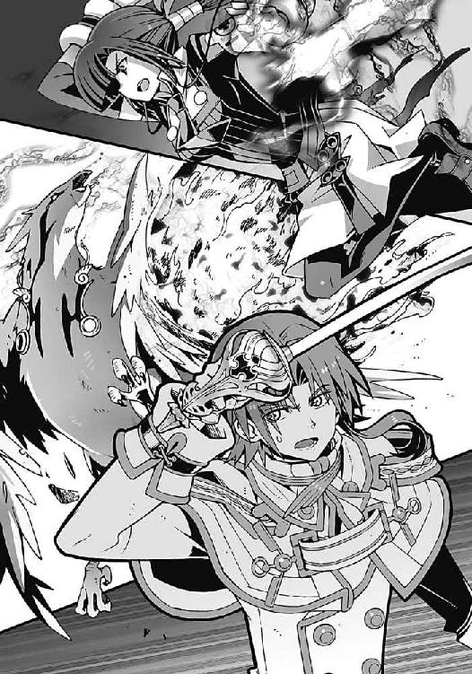
炎を羽衣のように全身にまとって、彼女は使い魔の前に立ちはだかる。
「嵩月奏......まだ消滅していなかったのですか？」
氷羽子が愕然と呟いた。嵩月に邪魔されるとは思っていなかった、という表情だった。氷羽子は、非在化して消滅する寸前の嵩月の姿しか知らないのだ。
しかし今の嵩月は、かつてよりも遥かに強大な炎をまとって氷羽子の使い魔を圧倒している。
「まさか、きみに助けられる日が来るとはな......嵩月奏」
そんな嵩月の姿を見て、佐伯兄が複雑そうな表情を浮かべた。今の彼には、かつてのような嵩月への敵意はなかった。
嵩月はなにも答えない。ただ小さく微笑んだだけだ。
そして佐伯兄は、僕のほうを振り返り、
「夏目智春。ここは我々が引き受ける。先に行け！」
「だ、だけど......」
いくら量産機に対抗できる武器を装備しているとはいえ、戦況は今も第一生徒会が圧倒的に不利なのだ。ましてや氷羽子と彼女の使い魔もいる。
だが嵩月も同じように僕を振り返って、
「夏目くんは、ニアちゃんと一緒に、あの塔を──」
「......わかった」
本当に大丈夫なのか、と僕は嵩月の目を見つめる。嵩月は、淡い緑色に両方の瞳を輝かせてうなずいた。それでも僕が、復活して間もない彼女を戦わせることに躊躇っていると、
『いつまで見つめ合ってんの！』
「行くぞ！」
操緒とアニアに同時にどやされた。
「あ、ああ」
僕は仕方なく塔に向かって駆け出そうとした。
学生連盟の量産機は第一生徒会が、氷羽子は嵩月たちが押さえてくれている。残る障害は部長の機巧魔神だけ。だが、《鋼》の能力には、今の《鐵》で対抗できることは証明済みだ。アニアが塔に辿り着けさえすれば、あの尖塔の結界は破れる──
「せっかくやけど、そういうわけにはいかしまへんな」
「えっ!?」
ようやく勝機を見いだして希望を抱いた僕の耳元に、はる奈のはんなりとした声が聞こえてくる。次の瞬間、僕とアニアの身体に絡みついたのは、糸だった。
魔力によって紡がれた純白の糸──絡みついたすべてのものを爆発させる導火線だ。
「おいでやす、亜鉛華」
はる奈が自らの機巧魔神を静かに喚び出す。巨大な籠手を装着した白い機体。その籠手から伸びた導火線が、蜘蛛の糸のように僕たちを搦め取る。
「千代原はる奈、貴様！」
アニアが歯を剥いて唸った。
はる奈はにっこりと微笑んで、
「わかってると思いますけど、その糸は切ったらあきまへんえ。導火線に火がついてしもたら、ウチにも止められへんよって」
「くっ......」
僕は身動きの取れない状態のまま唇を噛む。《亜鉛華》の能力は、物質爆破。無理にこの糸を切ってしまえば、その切断面が発火して、僕たちの肉体を容赦なく爆破する。
かつてこの《亜鉛華》の能力を破ることができたのは、元演操者の冬琉会長だけだった。今の僕たちに、この糸から逃れる方法はない。
「ゼロ班、撃て！ あの塔を破壊しろ」
僕たちが身動きできないことを察したのだろう。佐伯兄が、部下に向かって無線で叫んだ。
その直後、空き教室の窓から炎とともになにかが撃ち出された。携帯型のロケット砲弾だ。
「狙撃部隊を配置してたのか。有能だなあ、第一生徒会長」
尖塔へと向かって飛来する砲弾を見上げて、部長が感心したように呟いた。
第一生徒会のロケット砲弾に、量産機の装甲を撃ち抜いたものと同じ反護法加工が施されているのなら、塔の結界を貫通できる可能性がある。
だが、それを知っていてもなお、部長は笑って肩をすくめた。
「だけど、惜しかったね」
「なにっ」
突如として吹きつけた突風に、ロケット砲弾が角度を変えた。砲弾はそのまま目標を見失い、地面に叩きつけられるような形で爆発する。
「使い魔か！」
その原因に気づいた佐伯兄が、塔を見上げて歯を軋ませた。
『風獣！』
「まっ......真日和ああっ！」
旋風をまといながら出現した使い魔の姿を見て、操緒と僕が、怒声を張り上げた。巨大な狐に似た姿の、真日和秀の使い魔が、塔の周囲に、暴風の障壁を張っていた。
これではロケット砲弾による狙撃はもちろん、塔に近づくことも不可能だ。
睨みつける僕に気づいても、真日和は目を逸らさない。
非在化の進行した契約悪魔を救うため、真日和は、最後まで部長に協力するつもりなのだ。
「思ったよりも手こずらせてくれたけど、そろそろ手が尽きたようだね......」
身動きできない僕たちを見て、部長がどこかホッとしたように呟いた。
そして彼は潮泉家のある方角へと目を向けた。潮泉家の裏山周辺。六本の光の柱とはべつに、青白い光が地下から漏れ出している敷地がある。潮泉家の裏山の地下に、荷電粒子を光速以上に加速するような巨大なエネルギー場が出現しているのだ。
それを見て部長は、満足げにほくそ笑む。
「さて、超弦重力炉の再起動も始まったようだ。これで障害はなくなった」
「重力炉の......再起動......？」
訊き返す僕を、部長は少し面白そうに眺めた。
「夏目直貴は教えてくれなかったのかい？ 潮泉家の地下に眠っていた超弦重力炉は〝一巡目〟の世界によって生み出された、最大の遺跡だ。夏目直貴はそれを破壊するために、この世界に来たんだろう？」
僕は無言で部長を見返した。僕がかつて兄貴と呼んでいた男は、たしかに超弦重力炉を破壊しようとしていた。空間を歪め、異世界へと続く〝門〟となる重力炉の存在が、〝神〟を呼び寄せてしまうことを知ったからだ。
「〝二巡目〟の世界で、遺跡として発掘された超弦重力炉は、再起動されないように厳重に封印されていた。潮泉太秦の仕業だよ」
「嵩月の......爺さんが......？」
僕は、渦巻き模様の奇妙な屋敷に住んでいた老人のことを思い出す。かつて〝一巡目〟の世界で、超弦重力炉を研究していた機関の責任者だった男。たしかに彼ならば、遺跡化した重力炉を封印することもできるのかもしれない。
「だが、そのせいで夏目直貴──すなわち〝一巡目〟の世界のきみが、重力炉を破壊することもできなかった。どうやら潮泉太秦も、封印を解く方法までは知らなかったらしいよ。あるいは、ボケて忘れてしまっただけかもしれないけど」
やれやれ、と部長が肩をすくめた。そして、どこか敬意を払うような表情になって、
「だから夏目直貴は、五年かけて重力炉の封印を解く方法を探していたんだ」
そう言って彼は微笑んだ。
そうか、と僕は呟いた。
「......だから兄貴は、この世界に来た目的を果たすことができなかったのか......」
夏目直貴が殺される直前、もうすぐだ、と言っていたことを思い出す。彼は本当に重力炉の封印をあと少しで解くところまで来ていたのだ。
しかしそこで直貴は殺された。
部長は、僕が兄貴と呼んでいた男を殺して、彼の研究成果を奪った、というわけだ。
重力炉を破壊するのではなく、再起動するために。
過去の世界へと跳躍し、〝三巡目〟の世界を生み出す〝門〟として利用するために──
「僕たちの勝ちだ、夏目くん。素直にイグナイターを渡してもらえるかな。それとも僕は先にきみを殺して奪い取るべきなのかな──？」
部長が、いつもと同じ飄々とした口調で訊いてくる。
今度こそ完全な絶望が僕を襲ってくる。アニアと僕は《亜鉛華》の糸に拘束されて身動きが取れず、機巧魔神も呼び出せない。嵩月と佐伯兄は、氷羽子と彼女の使い魔の相手で手一杯。そして尖塔は、真日和の風獣に守られて、今にも儀式魔法を発動しようとしている。どう考えても、この窮地を抜け出す方法はない。
「............」
なのに、僕はまだ諦めていなかった。この窮地を抜け出す具体的な方法など何も思いつかなかったけれど、部長が考えているほど極端に彼らが有利な立場にいるとも思えなかったのだ。
その理由は、おそらく絆の差だと僕は思う。
たしかに部長は、圧倒的な戦力を用意していたけれど、彼らの絆は脆いのだ。部長の用意した手駒には、ほんの少し戦場のバランスが崩れれば、瓦解してしまいそうな脆さがある。
そう、ほんの少しのきっかけさえあれば──
「......ん？」
部長が、かすかに怪訝な表情を浮かべて、頭上を見上げた。
それで僕も気づいた。
音が聞こえる。鈴の音だ。
クリスマスソングの伴奏のような鈴の音が、どこか遠くから聞こえてくる。
シャラシャラと鳴り響く安っぽい音に、校庭で戦っていた人々が、一瞬、動きを止めた。
まるでタイミングを見計らっていたかのように、その直後、校庭になにかが現れた。
ほぼ完全な球体を二個、上下に連結したような白くて丸い物体だった。雪ダルマだ。
身長五、六十センチほどの小さな雪ダルマの群れが、校庭へと転がり出てきたのだ。
雪ダルマの数は、おそらく全部で数十体ほど。
あまりにも場違いなその姿に、校庭にいた誰もが呆然と立ち尽くす。そして──
『ケケケ......』
どこか不気味な鳴き声を上げて、雪ダルマたちが一斉に左右に割れた。その中から飛び出してきたのは、ハロウィンのカボチャお化けによく似た人形だった。逆三角形の不気味な目と口。クリスマスに合わせたつもりなのか、申し訳程度にサンタ帽を被っていたが、どう見てもハロウィンのアレである。そして彼らの手には、鋭く研ぎ澄まされた手斧や鉈が握られている。
『ケケケケ......』
小さな身体に不釣り合いな巨大な凶器を構えて、人形が笑う。
その物騒な姿を見て、僕は頼りなく声を震わせた。
「第二生徒会の......殺人人形!?」
『だけど、こんなにたくさん......誰が？』
顔をしかめて操緒が訊いてくる。しかしもちろん殺人人形たちはなにも答えない。
彼らは斧や鉈を振り上げて、身動き出来ない僕やアニアのほうへと殺到すると、
「なっ、こいつら......!?」
『ケーッ！』
奇声を放ちながら跳躍し、《亜鉛華》の導火線を問答無用でいきなりぶった切った。
「う、うわっ!?」
切断された導火線が次々に火花を散らして燃え上がる。この導火線が燃え尽きたとき、僕たちの身体は爆弾と化して粉々に吹き飛ぶ。それが千代原はる奈の機巧魔神の能力なのだ。
確実に迫り来る死の影に、僕は断末魔の絶叫を上げ、
『待って、智春！』
異変に気づいた操緒が叫んだ。その直後、僕たちの身体を搦め取っていた導火線がするりと解けた。その原因は殺人人形たちだった。
切断した亜鉛華の導火線を自分たちの身体に巻きつけることで、殺人人形たちは絡みついた糸を解いている。僕たちを拘束状態から解放しようとしているのだ。
「智春、伏せろ！」
同じく自由になったアニアが、そう言って地面に転がった。僕も慌てて彼女に倣う。
その直後、僕たちの背後で殺人人形が爆発した。
僕たちの身代わりになって《亜鉛華》に爆破されたのだ。
なぜか敬礼しながら次々に吹き飛んでいく殺人人形たち。その姿を呆然と眺めて、操緒が呻いた。
『智春を......助けた!?』
「あらまあ......」
驚いていたのは、はる奈も同じだった。殺人人形たちの捨て身の攻撃で、僕とアニアを拘束していた糸は、完全に消滅してしまっている。
「......殺人人形は、塔貴也の機巧偶人と同じ、脳波による遠隔操作のはずだ。それをこんな大量に操る、だと......」
爆発の煙にケホケホと咳きこみながら、アニアが呟いた。
「いったい、誰が......!?」
煤けた背中をはたきながら顔を上げ、僕は周囲を見回した。もうもうと立ちこめる煙のせいで視界が悪い。だが、声だけははっきりと聞こえてきた。
おっとりとマイペースな、懐かしい声──
「真打ちは、いつだって遅れてやってくるものよ、トモハル」
含み笑い混じりのその声の方角を、僕は驚いて振り仰ぐ。
ライトアップされたままの校舎の屋上に、洛高の制服を着た長身の少女が立っていた。銀色の杖を突いた彼女は、長い髪を風に遊ばせ、僕たちの姿を見下ろしている。
「朱浬......さん!?」
病院にいたはずの生身の朱浬さんは、僕の呼びかけに、はぁい、とお気楽に手を振って答えた。彼女が背後に従えているのは、数え切れないほどの殺人人形の群れ。その人形たちが構えているのはロケットランチャーと擲弾発射筒、対物ライフルと重機関銃、迫撃砲にグレネードランチャー──とにかく大火力の重火器だ。
下手すれば、そのまま戦争が始められそうなくらいの大量の兵器を抱えた殺人人形たちが、朱浬さんの合図で一斉にそれらを構えた。
「え......ちょ、まさか......朱浬さん!?」
強烈に悪い予感を覚えて、僕は声を上擦らせる。
そんな僕に、朱浬さんは世にも愉しげな表情を浮かべてうなずき、高らかに叫んだ。
「発射ェ──ッ！」
殺人人形たちが構えた無数の銃口が一斉に火を噴いた。僕はたまらず悲鳴を上げた。
降り注ぐ弾雨。押し寄せる爆風。地震のように大地が揺れ、衝撃波が人々を薙ぎ払った。
そして校庭は焦土へと変わる──。
○
立ちこめた爆煙が晴れても、人々は呆然としたまま動けずにいた。
校庭には隕石が落下したあとのような爆発痕がいくつも穿たれ、学生連盟の量産機は一機残らず破壊されていた。それに対して、第一生徒会側の被害は少ない。無差別攻撃のようにしか見えなかった朱浬さんの砲撃だが、いちおう敵味方の区別はつけていたらしい。とはいえ爆発の余波やら流れ弾やらで、味方にもけっこうな被害が出ているようだったが──
「黒崎くん......か。なるほどな。病院のベッドの上から、機械化したもう一人の肉体を操っていたきみなら、殺人人形ごとき、数十体を同時に操るくらい雑作もないか......」
ただ一人、なんの被害も受けずに塔の台座に座ったままの部長が、感心したように呟いた。
「だが──！」
そう言って彼がパチンと指を鳴らす。それを聞いた氷の不死鳥が上空へと舞い上がり、鋭い鉤爪を、無防備に屋上に立つ朱浬さんへと向けた。今の朱浬さんは生身の人間だ。使い魔の攻撃に耐えられるわけもない。
すべての武器を撃ち尽くした殺人人形たちには、氷の不死鳥を迎撃する術がない。
しかし朱浬さんは焦る素振りも見せずに、優艶と笑って、
「──当然、操れるのは殺人人形だけではありませんわよ、部長」
その直後、遥か上空から撃ち放たれた機関砲の弾幕が、氷の不死鳥の背中を襲った。完全な死角からの不意打ちを喰らって、使い魔の巨体が体勢を崩した。
大口径の機関砲を構え、夜空を背景に浮かんでいたのは、巨大な金属の翼を背中に広げた少女だった。もう一人の朱浬さん──機械化されたほうのメカ朱浬さんだ。
僕たちが知っている昔の彼女と雰囲気が違うのは、全身にメカメカしい鎧をまとっているせいだろう。顔の上半分も金属製のマスクで覆って、まるでアメコミのヒーローのようだ。
今のメカ朱浬さんは、前に部長が使っていた不細工コアラと同じ──人形だ。
魂を失った〝本物〟の朱浬さんの肉体を再改造して、脳波による遠隔操作が可能な機巧偶人として復活させたのだ。完全なる朱浬さんの分身として──
『発射エエエエエェ──ッ！』
生身の朱浬さんと、メカ朱浬さんが同時に叫んだ。
メカ朱浬さんの鎧が開いて、その内側から、かつて見たことがないほどの大量のミサイルが撃ち出された。それらは狙いを違えることなく氷の不死鳥に着弾し、巨大な爆発を引き起こす。
爆発の衝撃でビリビリと大気が揺れた。
炎に包まれながら落下する不死鳥。いくら魔神相剋者の使い魔が無限に近い回復力を持っているといっても、これでは完全に復活するまで相当な時間がかかるはずだ。
「黒崎め......無茶をしてくれる」
その光景を見上げていた佐伯兄が、薄汚れた頬を拭きながら呟いた。ヒュン、と風を切ってサーベルを構え直し、
「だが......これで形勢逆転だな、千代原はる奈」
そう言って剣の切尖をはる奈に向ける。指導員たちの量産機がすべて破壊された今、学生連盟に残された戦力は、はる奈の機巧魔神《亜鉛華》だけだ。
しかし、はる奈は、そんな佐伯兄をにこやかに見返して質問した。
「なんぼ魔力無効化能力がある言うたかて、元演操者一人でＧＤの機巧魔神に勝てると思うてはりますの？」
佐伯兄も微笑みを浮かべた。祈るように剣先を空に向け、
「勝てるから戦うのではない。己の信じるもののために戦うのだ。この僕を信じてくれた者と最後まで共にあるためにも──」
まるで、すぐ隣にいる見えない誰かに伝えるように呟く佐伯兄。
そうですか、とはる奈は静かにうなずいた。そして、
「ほな、行きますえ、亜鉛華」
《亜鉛華》の腕から糸が放たれた。元演操者の佐伯兄には、《亜鉛華》の爆破能力は無効だが、佐伯兄も機巧魔神の魔法攻撃そのものを阻止できるわけではない。彼の周囲の物体を爆破して、間接的にダメージを与えることは可能なのだ。
《亜鉛華》が、佐伯兄の周囲の地面を次々に爆破する。しかしその爆風と破片を華麗にかいくぐって、佐伯兄が《亜鉛華》の懐に入った。そして機巧魔神に守られているはる奈本人を直接狙って剣を振るう。
しかし、はる奈もやはり並の演操者ではなかった。舞踏のような鮮やかなステップで佐伯兄の攻撃をかわし、ふわり、と無傷で着地する。
ちっ、と舌打ちする佐伯兄。即座にはる奈を追撃しようとするが、その前に《亜鉛華》が体勢を立て直し、新たな攻撃のモーションに入った。そして、その直後、
「ああっ、あかん。やられてしもた、およよよよ」
はる奈が突然、わざとらしく胸元を押さえてその場に倒れこんだ。
「なっ......!?」
八百長などというレベルではない。あまりにもあからさまなはる奈の演技に、攻撃を仕掛けた佐伯兄のほうが絶句する。しかしはる奈は、自分の演技に酔っているように、わざとらしくシナをつくって、
「かなんわぁ......うちもＧＤの職務を果たすために気張って戦ったんやけどな」
「千代原......」
もともとあまりやる気がなかったのか、あっさりと戦意を喪失したはる奈を見て、佐伯兄が剣を下ろした。もともとはる奈には、部長に協力する義理はない。いちおう戦ってみせた、ということで、ＧＤとしての義務は果たした、というつもりなのだろう。
そう、部長たちの絆は脆いのだ。ほんの少しの戦況の変化で、あっさり崩れてしまうほどに。
「トモハル、ニアちゃん、今のうちに塔を破壊しなさい！」
着陸したメカ朱浬さんが、僕たちに命じる。氷羽子の使い魔は回復中で、学生連盟にはもう戦力が残っていない。塔までの道はがら空きだ。
「そうはさせないッス！」
そんな僕たちの前に立ちはだかったのは、風獣に跨った真日和だった。金色の毛並みを持つ獣型の使い魔が、全身に暴風をまとって僕たちを威嚇する。
「真日和っ！」
メカ朱浬さんが機関砲を連射するが、暴風の障壁に阻まれて真日和には届かない。
勝ち誇った真日和が、血走った目つきで、
「無駄ッスよ。この俺と風獣がいる限り、誰もこの防衛ラインを抜けることはできないッス。儀式の邪魔はさせないッスよ！」
そう叫んだ直後、
「真日和のクセに、いつからそんな偉そうな口を叩けるようになったの!? 生意気よっ！」
校内放送用のスピーカーから流れ出したのは、底意地の悪そうな若い女の声だった。
調子に乗っていた真日和の表情が、怯えたように、びくっと強張る。
操緒が、なんとも形容しがたい表情を浮かべて顔を上げ、
『この声......』
「り、六夏会長？」
校庭の隅の特設ステージの上に立っている倉澤六夏の姿に気づいて、僕は驚く。あんた入院してたんじゃなかったのか。
しかし六夏は、グビグビと点滴用のブドウ糖溶液を直接飲み干しながら、やけに元気な声で、
「それと塔貴也！ 誰に断って校庭にこんなデカブツを押っ立ててんのよ。土地のレンタル代と敷金！ 日照権と景観権侵害の慰謝料！ その他もろもろきっちり取り立てるわよ！ しかも一人で余裕かまして高見の見物とか、許さねーっての！ 見物料払えっ！」
途中から妙な方向に向かい始めた六夏の演説に、僕は軽い頭痛を覚えて、
「なんか......論点がズレてる気が......」
『まあ、六夏会長だからねえ』
操緒も諦めたように溜息をついた。
そして六夏は、握っていたマイクを投げ捨てると、悪役っぽい美貌を歪めてニヤリと笑い、
「それに瞬間移動はね、あんたの専売特許じゃねーのよ！ ひかりっ！」
病み上がりの六夏に肩を貸していたひかり先輩が、小さくうなずき、呪文を唱える。
〝ふぁすたー・ざん・ざ・すぴーど・おぶ・らいと──〟
「沙原!? しまった......！」
真日和の顔が焦りに歪んだ。その直後、ステージの上から六夏たちの姿がかき消えた。
沙原ひかりの悪魔の能力──瞬間移動。風獣の暴風の障壁をすり抜けて、尖塔のすぐ背後に、六夏たちは出現する。そこは部長の死角であり、氷羽子が追いつける距離でもない。
六夏の足下の影が、漆黒の虚無の色に変わった。その影の輪郭を引き裂くようにして、鎧に覆われた腕が出現する。南国の海のような透きとおった色の、機械仕掛けの悪魔の腕──
『闇より刮ぎし氷晶より出でし──』
六夏の機巧魔神《翠晶》の腕が、青白い魔法の光を放った。いかなる物質をも液体へと変える、物質液状化能力の輝きだ。
「くそっ......風獣！」
真日和が、六夏の機巧魔神を目がけて風獣を突進させた。だが、その前に立ちはだかったのは、垂れ耳ウサギのような髪型の小柄な少女だった。
「六夏ちゃんの邪魔は、させないっ！」
ひかり先輩が校庭の地面に手を突いた。その周囲の土が、ごっそりと消滅した。瞬間移動能力で、校庭の土を岩盤ごと跳ばしたのだ。
そして跳ばされた岩盤が出現したのは、真日和と風獣の進路上だった。分厚い岩盤に激突して、風獣が悲鳴のような咆吼を上げた。
その隙に──
『其は科学の涙が融かす翳！』
六夏の機巧魔神が、物質液状化能力の閃光を尖塔の根本へと叩きつける。その光は巨大な魔法陣となって尖塔の周囲一面に広がった。
校庭が、溶けたシャーベットのようなドロドロの姿へと変わる。
「倉澤六夏っ......！」
塔貴也が驚愕の声を上げた。
六夏の高笑いが、それをかき消すように響き渡る。
「どんだけ塔本体が頑丈に出来てようが、土台になる地盤が液状化してたら、立ってられないでしょうがっ！」
六夏の言葉どおりだった。漆黒の護法装甲は無傷のままだが、塔本体は、ゆっくりと傾いて倒れていく。地面が液状化したことで、自らの重量を支えきれなくなったのだ。
高さ八十メートルを超える塔の倒壊。その衝撃も半端ではなかった。
「う、うわっ！」
直下型巨大地震のような衝撃に、僕たちは投げ出されて転倒した。巻き添えになった洛高の校舎が次々に粉砕されていく。危うく塔の下敷きになりかけて、僕は四つん這いのまま必死で逃げた。そして、
「智春、そのまま動くなっ！」
「えっ......うが!?」
四つん這いの僕の背中を踏み台にして、アニアが高々とジャンプする。アニアの目の前には、倒れてきた尖塔の装甲壁。彼女の右手に握られているのは、座布団型の巨大呪符だ。
「くらえっ！」
装甲壁に張りついたアニアの呪符が、毒々しい真紅の光を放った。尖塔の表面に、蜘蛛の巣のようにびっしりと亀裂が広がる。護法装甲が解除されたのだ。
魔力による加護を失ってしまえば、の塔は単なる急ごしらえの鉄塔である。自分自身の重量を支えることもできずに、バラバラと崩れ落ちていく。まるで積み木のような脆さだ。
「あんたねえ、こんなことして美里亜が喜ぶとでも思ってたの！」
塔の崩壊の音をＢＧＭに、六夏の怒声が響き渡った。
ふと見れば、六夏の機巧魔神によって、風獣は押さえつけられていた。そして這いつくばった真日和の背中を、六夏が乱暴に足蹴にしている
「このバカバカバカバカバカバカバカバカバカバカバカバカバカバカバカバカバカバカバカ！ ここまでは美里亜のぶんの怒り。そしてここから先は、このあたしの怒りだあああっ！ おまえのせいで、あたしは、あの味気ない病院食ばっか毎日毎日毎日毎日......！」
「り、六夏ちゃん。死んじゃう、秀ちゃんが死んじゃうよ！」
六夏の容赦ないキックの嵐に、真日和はすでに息も絶え絶えだった。ひかり先輩が必死で、そんな六夏を止めている。
儀式魔法の中心が破壊されたことで、市内のほかの六カ所の光の柱も消滅していた。数億人の魂を犠牲にして〝神〟を倒す、という部長の計画は、これで完全に破綻したのだ。
それを呆然と見つめていたのは氷羽子だった。
目の前の嵩月を睨みつけ、彼女は憤怒に表情を歪めた。
「お......おのれええええええっ！」
「............」
怒りにまかせて振り下ろす氷羽子の薙刀を、嵩月が炎の剣で受け流す。そしてすれ違いざまに放たれた嵩月の二の太刀が、氷羽子の背中を切り裂いた。
「ぐ......！」
炎に焼かれた背中の傷を、自らの冷気で塞ぎながら氷羽子が呻く。嵩月は、そんな氷羽子の姿を見て、なにかに気づいたように眉を寄せた。
振り返った氷羽子が再び薙刀を構えるが、
『退きますよ、鳳島氷羽子』
突然現れた幽霊の少女が、そんな氷羽子を制止した。
長い前髪で右目を隠した小柄な少女。冬琉会長の射影体だ。
「副葬処女ごときが、わたくしに命令するな！」
そんな冬琉会長を睨んで、氷羽子が怒鳴った。しかし冬琉会長は表情を変えない。むしろ氷羽子を哀れむように冷ややかに見下ろして、
『塔貴也の命令よ。わきまえなさい』
「くっ......」
氷の薙刀を軋ませて氷羽子が呻いた。
屈辱で声を震わせながら、彼女は自らの使い魔を呼ぶ。
「シャーリーズ！」
ようやく再生を終えた氷の不死鳥が、まず部長を、そして氷羽子の身体をつかみ上げて、上空へと舞い上がった。そのまま僕たちに背中を向けて、部長たちは遠くへ飛び去っていく。
小さくなっていく彼らの後ろ姿を睨んで、アニアが叫んだ。
「しまった！ 追え、智春！」
「え、追えって、でもどこに......！」
いきなりそんなことを言われても、と僕はうろたえる。だから高いところは苦手なんだって。
「塔貴也の行き先は超弦重力炉──潮泉家の裏山だ！ 超弦重力炉が稼働すれば、やつは時間を遡って何度でもやり直すことができる。その前に塔貴也を止めるんだ」
アニアの指摘に僕は、う、と息を呑んだ。たしかにもう一度同じことを繰り返して、今度も部長の計画を阻止できるという保証はまったくない。
「わ、わかった......けど、今から追いかけても......」
空を飛んでいった連中を相手に、どうやって追いつけというのだ。《鐵》の空間移動だって、そんな長距離を失敗せずに跳ぶ自信はないぞ。
そうやって途方に暮れている僕の背後に、メカ朱浬さんが立つ気配がした。
彼女の背中で、バックパックの前進翼が展開。ジェットエンジンが始動する甲高い音がする。悪寒を感じて硬直する僕の首根っこを、メカ朱浬さんの右手ががっちりと摘み上げ、
「飛ぶわよ、トモハル。奏っちゃんも──！」
「やっぱりこれかあああ──っ！」
「はうう......！」
同じようにメカ朱浬さんにつかまった嵩月と一緒に、僕は絶叫した。
そんな僕たちの抗議を無視して、朱浬さんがジェットエンジンを全開にした。心臓が押し潰されるような強烈な加速が僕たちを襲って、そして地面が遠ざかっていく。
「あとは......頼む」
「あんじょうおきばりやす」
玲士郎とはる奈がそう言って、僕たちに手を振った。
美しい金髪をなびかせ、アニアが呟く。
「任せたぞ、智春」
そんなアニアたちの言葉に答える余裕もなく、僕たちを引きずるように朱浬さんは加速していく。行き先は、青白いチェレンコフ放射光に包まれた潮泉家の裏山──
すべての始まりの場所だった。
○
強烈な風が吹きつける潮泉家の上空。半失神状態でぐったりする僕の耳元に、操緒が叫ぶ。
『見て、智春！』
「え......」
僕は怖々と目を開けた。ほぼ完全に左右対称な、円錐形の潮泉家の裏山。その頂上付近に、火口のようなすり鉢型の穴がぽっかりと開いて、眩い光が漏れ出している。
穴の中心には深い縦坑。人工的に造られた垂直のトンネルが地下深くまで続いていた。
「あれが......超弦重力炉の入口......！」
封印が解けた、という部長の言葉を僕は思い出す。あの裏山の地下深くで、埋設された重力炉の炉心が再起動を始めているのだ。
だが、重力炉が完全に再起動する前の今ならば、あの縦坑から攻撃を撃ちこんで炉心を破壊することができるはず。否、今を逃せばもう二度とそのチャンスはない──
朱浬さんもそのことに気づいているのだろう。背中に搭載した飛行ユニットの出力を限界まで上昇させ、裏山の頂上を目がけて一気に急降下する。
そのとき、嵩月がなにかに気づいて、ぼそりと控えめに呟いた。
「あ......前......」
「えっ!?」
朱浬さんが、ぎょっとしたように正面を見た。僕たちの進行方向に、灰色の巨大な鳥が翼を広げて舞っていた。闇の中でもギラギラと輝く緑色の瞳。奇妙な人間臭さを感じさせる巨大な猛禽──フクロウだ。
「クロエ！」
僕は、見覚えのあるそのフクロウの名を叫んだ。〝一巡目〟の世界で遭遇した、律都さんの使い魔、クロエだ。律都さんの能力が〝すべての世界の自分自身との感覚の共有〟だということは知っていたが、よもや〝二巡目〟の世界でも使い魔を召喚できるとは予想していなかった。
翼長十メートル近い巨大なフクロウが、バサリ、と翼を羽ばたかせる。
その瞬間、すさまじい衝撃波が僕たちを正面から襲った。
「あ......」
朱浬さんが、やっちゃった、というふうに小さく呟く。なにそれ、どういう意味ですか、と僕が訊き返すまでもなく、いきなり彼女の飛行ユニットのエンジンが停止する。今の衝撃波でなにか不具合が発生したらしい。
推進力を失った朱浬さんは、あっという間に失速した。僕たちを両腕に抱いたまま、地上の雑木林へと向かって落下していく。またか、と僕は声も出せずに呻いた。今までこの飛行ユニットを使って空を飛んで、墜落しなかったことは一度もないような気がするぞ。
「う、うわああああああああああああっ」
地面に激突寸前のところで、朱浬さんはエンジンの再始動に成功した。だが、あまりにも高度が低すぎた。翼の先端を木の枝に引っかけて、飛行ユニットの主翼が根本から折れた。その衝撃で今度は完全にエンジンが停止。再び再始動するだけの余裕はすでになく、僕たちは山の中に不時着する。
普通なら即死でもおかしくない勢いだったが、幸いなことに今は十二月だった。地面には落ち葉が分厚く積もって、ふかふかの腐葉土と化していた。ついでにいえば、これまで数え切れないくらい墜落したおかげで、僕たちは受け身を取ることにも慣れていた。墜落のエキスパートといっても過言ではない。斜面をごろごろと転がりながらも、僕と嵩月はたいした怪我もなく立ち上がり、
「まずいわね。今ので武器をだいぶ失ったわ......」
背中の飛行ユニットを切り離した朱浬さんが、ぐにゃりと砲身のねじ曲がった機関砲を投げ捨てる。彼女の全身を覆っていた鎧も、あちこち破損して、生身の部分が露出していた。
そしてそんな僕たちの前に、巨大なフクロウが舞い降りてくる。
横座りしていたフクロウの背中から、音もなく飛び降りたのは年齢不詳の白衣の女性だ。
中央渦界域の管理人、そしてすべての世界の滅びを見てきたたった一人の悪魔──潮泉律都。
「律都ちゃん......どうして？」
嵩月が、自らの従姉でもある律都さんに問いかけた。
「奏......それに智春くんも......」
白衣の女性が、悲しげに首を振って微笑んだ。
「〝一巡目〟の世界の私が伝えたはずよ。この世界は、〝神〟を倒す唯一の希望なの。私は、塔貴也のやり方が、もっとも成功率が高いと判断したわ。あなたよりもね」
「律都さん......」
どこか疲れた表情の律都さんを、僕は複雑な気分で見上げた。
無限とも思える世界の滅びを経験してきた彼女にとって、〝神〟を倒すことは、圧倒的な悲嘆の中で出会った最後の希望なのだ。この世界のすべてと引き替えにしてでも、〝神〟を倒す。そんな塔貴也のやり方に、彼女が惹かれるのは当然かもしれない。
だが、僕たちはそれを認めるわけにはいかないのだ──
「そういうことなら......どっちが倒れても恨みっこなしってことでいいわね」
そう言って、朱浬さんが右肩から内蔵ミサイルをぶっ放した。
しかし巨大フクロウは自らの翼を大きく広げて、その右の翼にそのミサイルを呑みこんだ。
そして呑みこまれたはずのミサイルが、左側の翼から逆に朱浬さんを目がけて撃ち出される。朱浬さんは愕然とした表情で、左腕の内蔵ショットガンを抜いてミサイルを撃墜。
律都さんは白衣のポケットに両手を入れたまま微笑んで、
「私は、なんの戦闘力も持たない悪魔だけれど、私の使い魔は違うわよ」
「クライン空間の生成能力......厄介ね」
朱浬さんが唇を歪めて苦々しげに笑った。
クライン空間は、内側も外側も存在しない三次元版のメビウスの輪だ。律都さんの使い魔クロエは、そのクライン空間を自由に生成することができるらしい。すなわちクロエに対する攻撃は、そのまま攻撃した本人へと返ってくる、ということになる。
〝一巡目〟の世界で、機巧魔神の母艦〝うずしお〟を守っていたのも、クロエのこの能力だったのだ──
「トモハル、奏っちゃんを連れて先に行きなさい。彼女はあたしが引き受けるわ」
朱浬さんが撃ち尽くしたミサイルポッドを切り離しながら、そう言った。
「引き受けるって......でも、朱浬さん一人じゃ......」
僕は驚きながら朱浬さんを見た。すべての攻撃を相手にそのまま撃ち返すクロエには、物理攻撃が一切通用しないはずだ。朱浬さん一人でどうにかできる相手ではない。
そして律都さんは、どこか悪戯っぽく笑って、
「心配しないで。あなたたちも行かせはしないから」
「しまっ......」
翼を大きく広げたクロエを睨んで、朱浬さんが舌打ちした。次の瞬間、僕たちの周囲の景色がぐにゃりと歪んだ。まるで合わせ鏡の中に閉じこめられたみたいに、外を見る自分たちの姿を外から見ているような錯覚に囚われる。クロエの能力で生成された、クライン空間に閉じこめられたのだ。
外側から中に入れない、ということは、中からも外に出られないということである。律都さんは、このまま部長が目的を果たすまで、僕たちをこの場所に閉じこめておくつもりらしい。
『智春っ！』
操緒が振り返って僕を見つめた。そうか、と僕はうなずいた。《鐵》の空間制御能力ならば、おそらくこのクライン空間を破壊することができるはずだ。
だがしかし、無駄よ、と律都さんが首を振る。
「鐵を喚び出すことはできないわ。この空間には外の世界が存在しない。つまりこの結界の中にいる限り、機巧魔神を喚び寄せることはできないわ」
「そんな......」
触れることすらできない律都さんの使い魔を睨んで、僕は呻いた。
今こうしている間にも、部長は、重力炉の再起動を終えて過去に跳ぶかもしれないのだ。こんなところで時間を無駄にするわけにはいかない。しかし今の僕たちには、クロエに対抗する手段が──ない。
「くっ......」
金属製のマスクの下で、朱浬さんが唇を噛む。嵩月が僕の制服の袖をぎゅっと握りしめてくる。僕は、あまりの焦りに目が眩みそうになっていた。まさにそのとき、
「......お困りのようだね、朱浬」
涼しげな少女の声とともに、突然、歪んでいた視界が元に戻った。
ガラスの割れるような音とともに、クライン空間の檻が砕け散る。
「クロエの結界を......破壊した!?」
律都さんが、驚いたように目を見開いた。
彼女の正面に立っていたのは、男子の制服を着た長身の女生徒だ。彼女は右手に長大な日本刀を提げて、左手をクロエに向けていた。
その左手の手首から二の腕にかけて、入れ墨のような紋章が淡い輝きを放っている。元演操者の烙印の輝きだ。
「雪原瑤......!? なにしに来たのよ、こんなところまで」
朱浬さんが、ぎり、と奥歯を鳴らして呻いた。
リベンジだよ、と洛高所属の武装生徒指導員、雪原瑤が笑った。
「冬琉にリベンジするつもりで待ち構えていたんだが......きみを守ることのほうが優先順位が高かったことを思い出した」
「な、なにを......今さら」
朱浬さんが明らかに動揺したような早口で言う。相変わらず瑤の前でだけは、この人は感情がいろいろダダ洩れで面白い。
「というわけだ、夏目クン。ここはボクたちに任せて、塔貴也の相手を頼む」
そう言って瑤はすらりと右手の日本刀を抜き放った。
異様な長さのその野太刀が、かつての冬琉会長の愛刀〝冬櫻〟だと気づいて、僕はハッとした。瑤の機巧魔神《白銀》を斬ったその刀を、今は瑤が持っている。リベンジするつもりだった、という瑤の言葉は、おそらく嘘ではなかったのだ。
けれど瑤は復讐よりも、朱浬さんを助けることを優先した。
それはきっと正しい判断なのだろう、と思う。
「夏目くん──」
嵩月が僕の名を呼んだ。
『智春、行こう！』
そして操緒が僕の背中を押すように言った。彼女たち二人に促されて、僕は木々に覆われた斜面を走り出す。火口までは直線距離で百メートル足らず。この森を抜ければ目的地はすぐそこだ。
「夏目くん、これを、持っていって」
慣れない山道に苦労する僕に手を貸しながら、嵩月がなにかを差し出してきた。
それは一本の懐剣だった。刃渡り六寸足らずの護身刀。美しい鞘の装飾には見覚えがあった。
「これって、たしか......」
洛高への入学祝いとして、僕が嵩月の親父さんから預かって、彼女に渡したプレゼントだ。
「嵩月家の護り刀──〝焔月〟です。わたしが炎の剣を呼び出すときに使っている、触媒」
「触媒？ そうか......」
嵩月がいつも使っていた炎の剣の魔法。あれはこの護り刀の分身だったのか。
「持っていて。今の夏目くんには、きっと役に立つ、から」
「......わかった。ありがとう。でも、嵩月は......」
嵩月の意図に気づいて、僕は護身刀を受け取った。しかしこれは本来、彼女を守るための法具のはず。嵩月はそれを失っても平気なんだろうか──？
「行って！ 早く！」
そんな僕の迷いを断ち切るように、嵩月が叫んだ。
「えっ!?」
唖然として立ち尽くす僕を目がけて、純白の凍気の霧が殺到してくる。
氷羽子の使い魔の息吹だと気づいたときには、僕の周囲の木々が一瞬で凍りついて砕け散っていた。だが、その凶悪な攻撃は僕には届かない。
嵩月が掌から放った炎の奔流が、純白の凍気を切り裂いて押し返す。
「た、嵩月......!?」
自分を庇ってくれている嵩月の背中を、為す術もなく見つめて僕は呻く。嵩月は柔らかく微笑んで、そんな僕を振り返り、
「わたしは、大丈夫。今の彼女には負けません。絶対に──」
きっぱりと告げる彼女の姿に、僕は胸が締めつけられるような感情を覚えた。
信頼とも不安とも違う奇妙な気分。それは操緒に対しても感じたことのない不思議な感覚だった。ああそうか、と僕は思い出す。これが人を好きになるということか──
「嵩月......！」
走り出した僕はすぐに足を止めて、嵩月のほうへと駆け戻った。操緒が見て見ぬふりをしてくれることを期待しながら、怪訝顔で振り返る嵩月を抱き寄せ、唇を重ねる。
「......！」
嵩月がびっくりしたように目を見開いた。動揺した彼女の体温が際限なく上昇する気配を感じて、僕は火傷する前に慌てて離れる。頬を真っ赤にしながら俯いた嵩月を、彼女の全身から噴きだした炎が覆う。あとで謝らなければ、と思いながら、僕は再び彼女を置いて走り出した。
こんなときに不謹慎だとは自分でも思うが、契約悪魔である嵩月のために今の僕がしてあげられることを、ほかになにも思いつかなかったのだ。
息を切らせて森を駆け抜けた僕は、火口の縁に立っている部長の姿を認めた。
そんな僕の背後で、氷羽子の声がした。
「行かせません！」
氷の不死鳥を従えた氷羽子が、巨大な薙刀を振り上げ、僕の背中に向けて投げ放つ。
だが、その薙刀は僕に届く前に、すさまじい炎に巻かれて一瞬で蒸発した。
「なっ......!?」
遠ざかる僕の姿を、氷羽子が驚いて見つめていた。彼女の前に立ちはだかったのは、ゆらり、と夜目にも鮮やかな陽炎を纏った嵩月だった。
嵩月が放つ圧倒的な魔力の気配に、氷羽子が声をなくす。
摂氏数千度の地獄の業火を全身から噴き上げて、嵩月は静かに宣言した。
「夏目くんはわたしが守ります──」
○
青白い光を放つ火口の縁に、部長は立っていた。彼の隣に浮かんでいるのは、冬琉会長の射影体だ。長い前髪を揺らして最初に振り返ったのは冬琉会長──
続けてゆっくりと部長が振り返る。
「やあ」
肩で息をする僕を見つめて、部長は笑ったようだった。
「一足遅かったね。超弦重力炉の再起動は終わったよ」
「............」
余裕の表情を崩さずにいる部長の姿を、僕は無言で見つめ返した。重力炉が放つ青白い光は、むしろ前よりも弱まって、裏山の震動もほとんど収まっている。
代わりに裏山の上空を、奇妙な雲が覆いつつあった。真紅に輝く、不気味な固まり状の雲だ。地震の予兆といわれる地震雲に似ているが、螺旋状に渦を巻くその姿は、あまりにも不自然で、見るだけで本能的な恐怖を感じさせた。この潮泉家の裏山の地下で、なにか巨大な異変が起きていることを実感せずにはいられない風景だ。
「重力炉の周辺は完全に歪曲空間に囚われて、普通の人間ではもう近づけない。重力炉を止めることはもうできないよ」
部長が満足そうに呟いて、眼鏡を外した。
「鐵なら、重力炉の中に入れます」
僕の言葉に、部長はあっさりとうなずいた。
「だろうね。だけど、きみが機巧魔神を重力炉内に送りこめば、その瞬間、無防備になったきみを僕が殺す」
平然と告げる部長の表情に、僕はうっすらと寒気を覚えた。この人の考え方はわかっている。僕を脅そうとしているわけではない。本気で殺すつもりだから、そう口にしただけなのだ。
「なぜですか？」
僕は真剣な表情で問いかけた。
部長は、ははっ、と退屈そうに首を振り、
「......なぜ？ 愚問だなあ。あれほど説明したのにどうしてわかってもらえないのか──」
「あんたには訊いてない。黙ってろ！」
彼と目を合わせることもせず、僕は怒鳴った。部長は親に叱られた子どものような表情を浮かべたが、それに取り合うつもりはなかった。僕が見ていたのは、彼の隣に浮かぶ冬琉会長だ。
「なぜです、冬琉会長。こんなことは、あなたの本当の望みじゃなかったはずだ。あなたは本当は誰も傷つけたくなんかなかった。ただ部長と一緒にいられればそれで良かったんじゃないんですか！」
僕の問いかけに冬琉会長は答えない。詰問する僕を見つめて、つらそうに目を細めただけだ。僕はそんな彼女を、泣きたいような気分で睨みつけて、
「秋希さんが、今のあんたがやってることを喜ぶとでも思ってるのかよ──！」
ビクッ、と冬琉会長が肩を震わせた。人斬り、と恐れられ、生身で機巧魔神を撃破するほどの強さを誇ったあの冬琉会長が、怯えた少女のような表情で、僕の視線から目を逸らす。
「これ以上、冬琉を責めないでやってくれないか、夏目くん」
かすかな苛立ちを声に滲ませて、そう言ったのは部長だった。
「たとえきみが今から僕を倒したとしても、超弦重力炉は止まらない。〝神〟を滅ぼす手段もない。これ以上、無駄な抵抗はやめて、そろそろ諦めてくれないかな」
『......諦める？』
僕の代わりに答えたのは、操緒だった。彼女は今にも笑い出しそうな表情で部長を見下ろし、蔑むように首を振る。
『無駄な抵抗？ ばっかじゃないの？』
「......なに？」
部長が、かすかな困惑の表情を浮かべて訊き返した。
操緒は攻撃的な表情で彼を睨みつけ、笑った。
『超弦重力炉は、止まるよ。誰にも止められない、なんて本気でそんなこと信じてるの？』
「なにを......馬鹿な。きみになにがわかる？ 夏目くんの機巧魔神を僕がこうやって封じている以上、副葬処女であるきみにできることなどなにも──」
部長がムキになったように操緒に反論しようとして、その言葉が不意に途切れた。
ずん、と大地を震わせる巨大な衝撃が突き上げたのだ。
断続的に裏山を揺らし続けていた微震動が、それをきっかけに消え去った。
火口から洩れていた青白い光が薄れて、消滅する。そして上空を覆っていた地震雲も急速に発光を止めて、完全だった渦の形が崩れていく。再起動したはずの重力炉が、止まったのだ。
「バカな......いったい、誰が......」
部長が怯えたように呟いた。
『人間は、稼働中の重力炉には近づけない？ じゃあ、悪魔だったらどうなの──？』
操緒が残酷な笑顔で部長を見つめる。
彼女の視線の先、重力炉に続く縦坑の縁に、誰かが立っているのが見えた。色素の薄い髪が特徴的な、ほっそりとした若い女性。その面立ちは操緒によく似ている。
彼女が伸ばした両腕の先に握っているのは、光をまったく反射しない漆黒の球体だった。
それは触れるものすべてを消滅させる、魔力の弾丸だ。
『重力炉を破壊するのが、〝一巡目〟の世界の智春の望みだったんだよ。だったらその願いを、あたしが聞き届けないわけがないじゃない！ 〝一巡目〟の世界の操緒が！』
自分の胸を押さえて、操緒が笑った。勝ち誇るでもなく、ただそれが当然の事実であるかのように、なんの迷いもない表情で。
「そうか......環緒さん......が」
火口の中心部近くに立っている女性が、僕の姿に気づいて、どこか愉快そうに笑った。僕のよく知る操緒と同じ表情で。
彼女の両腕から放たれた漆黒の弾丸が、重力炉の中心部へと次々に撃ちこまれる。膨大な量の魔力の放出に耐えきれずに、彼女の身体が非在化して消滅していく。だが、もちろん重力炉も無事では済まない。炉心部に致命的なダメージを受けて今度こそ完全に沈黙する。
重力炉を止めてくれたのは、悪魔の能力を手に入れた、もう一人の水無神操緒だった。
〝一巡目〟の世界から来た操緒が、同じ世界の僕の遺志を継いで、重力炉を完全に消滅させたのだ。自らの命と引き替えに──
「水無神環緒の......〝神無〟......か」
地下の重力炉本体を失い、崩壊していく縦坑を呆然と眺めて、部長が呻いた。
非在化した環緒さんの姿は、もうどこにも見あたらなかった。だが、彼女を道連れにして、超弦重力炉も消滅している。そして、非在化した悪魔を生き返らせることができないのと同様に、この世界から消滅してしまった重力炉を復活させることは誰にもできない。
たとえ機巧魔神の能力で、時間を巻き戻したとしても──だ。
部長の計画を阻止したのは、僕ではなかった。この世界ではおそらくお互いに言葉を交わすことすらなかった直貴と環緒さんの〝絆〟が、最後の最後で部長の望みを打ち砕いたのだ。そのことに部長は果たして気づいたのか──
「終わりです、部長。これ以上は、もう......」
火口の前で立ち尽くす彼に、僕は一歩近づいた。
部長がゆっくりと振り返る。その頬が血の気を失って、噛み切った唇からは血が流れている。
「まだだ！」
部長が、感情を露わに絶叫した。
「消滅してしまった秋希をもう一度生き返らせるためなら、僕はどんなことでもやる。どんな犠牲をも払う。たとえなにを失っても諦めはしない。だが、ひとつだけわかったよ」
瞬きすら忘れて喚く彼の隣で、冬琉会長の姿がモザイク状に分解されてゆっくりと消えた。
部長の足下の影が、深い裂け目のような闇の色に変わった。
その虚無の隙間から、声が漏れだしてくる。金属が擦れ合うような低い声。
『闇より熱き融炉より出し──』
部長の影を引き裂いて出現したのは、鋼色の鎧を纏う機械の巨人だ。
機械仕掛けの人造の悪魔。
唯一の完成体の機巧魔神──《鋼》！
「夏目智春──きみの存在だけは許さない。きみがいなければ、僕の計画は成功していたはずだったんだ。きみを放置していたことは僕の最大の過ちだった。その過ちを、今ここで償う！」
怒りに声を震わせて部長が叫ぶ。
演操者の怒りに反応したように、鋼色の巨人も、大気を震わせて咆吼する。
『──其は、科学の鎚が鍛えし玉鋼』
《鋼》の右腕に握られた剣が、僕を目がけて振り下ろされた。空間切断能力を備えた、悪魔の剣──
『智春！』
不敵に微笑む操緒が、僕の名を呼ぶ。僕が覚悟を決めるのは、それだけでもう十分だった。
「来い、鐵！」
僕の叫びに応えるように、僕の影の中から漆黒の機巧魔神が出現する。その右手に握られた銀色の巨剣が、《鋼》の剣を受け止めた。
互いの魔力を相殺して、二体の機巧魔神が激突する。
「そうか......やはりそういうことか。白銀と鐵の両方の部品を合わせて、鋼と同等の能力を手に入れたか！」
銀色の装甲をあちこちに纏った《鐵》を見て、部長が不愉快そうに唇を歪めた。
「なら......これでどうだ──シャーリーズ！」
「うっ......！」
背後に舞い上がった氷の不死鳥の姿に、僕は焦る。《鋼》との鍔迫り合いを続けている《鐵》には、僕の背後からの攻撃を防ぐ余力はない。
だが、不死鳥の攻撃が僕を襲うことはなかった。
地上から放たれた炎の奔流が、不死鳥の翼を撃ち抜いたからだ。
「夏目くん──！」
不死鳥を追って森の中から飛び出してきたのは、全身に炎を纏った嵩月だった。僕の無事を確認し、彼女はホッとした表情を浮かべた。
「嵩月！ 無事か」
「はい」
無傷の嵩月が、僕の背中を守るように隣に立つ。彼女が見ていたのは、不時着した不死鳥の足下だ。そこには、傷ついた使い魔に寄り添っている鳳島氷羽子の姿があった。
掌から噴きだした純白の凍気で、氷羽子が氷の薙刀を形成する。
嵩月は、そんな氷羽子を悲しげに見つめて呟いた。
「やめて......もう、やめて......鳳島さん」
「今さら命乞いですか、嵩月奏」
氷羽子が冷ややかな口調で訊き返す。
その直後、彼女の手の中で氷の薙刀が砕け散った。驚いて動きを止めた氷羽子に、
「わかっている......くせに」
嵩月が声を震わせて呼びかけた。
「今のあなたでは、わたしには勝てない。だって、あなたの身体は、もう......」
「お黙りなさい......」
自分の両手を見つめて、氷羽子が呻く。その指先から、砂のような結晶がさらさらとこぼれ落ちていく。闇の中で淡く光り輝く、ガラス状の砕片──非在化した氷羽子の肉体の欠片だ。
「魔力を手に入れることだけに目を奪われて、十分な愛情も、想い出も共有できない契約者を選んだあなたは、わたしには勝てない......だから......」
「黙れっ！」
氷羽子が、嵩月の言葉を遮って吼えた。悲痛な表情の嵩月を睨んで、
「シャーリーズ、そのクソ雌豚を黙らせなさい！」
追い詰められたような表情で、自分の使い魔に命令する。
傷ついた翼で飛び立った不死鳥が、全身にすさまじい凍気をまとって、息吹の発射態勢に入る。
嵩月はそっと目を伏せた。
彼女の指先から放たれた炎の奔流が、空中に巨大な魔法陣を描いた。
炎の魔法陣にそっと手を触れて、嵩月が囁く──
「──来て、ペルセフォネ！」
魔法陣がすさまじい勢いで膨れあがり、巨大な火球と変化した。その灼熱の火球を割って、一体の新たな使い魔が出現する。
〝春の女神〟と名付けられたその使い魔は、全身を灼熱の炎で包んだ、巨大な爬虫類の姿をしていた。背中に翼竜のような翼を持つその容姿は、蜥蜴というよりも龍に近い。
炎から生み出されたその使い魔は、巨大な火柱を巻き起こして上昇し、そのまま不死鳥の巨体を突き抜けた。
「シャーリーズ──!?」
撃墜された使い魔の姿に、氷羽子が喉を裂くような悲鳴を上げた。最後の拠り所を失ったかのように、彼女はがっくりと地面に膝を突く。
「翼持つ火蜥蜴......嵩月一族の使い魔か......！」
動揺していたのは、部長も同じだ。彼の表情から完全に余裕が失われて、紛れもない焦りが浮かんでいた。彼は初めての感情を経験しているのだと、僕は気づく。あの強固なシェルターを出て、これまで一度も経験したことがなかった感情を。恐怖を──
「だが、同じ魔神相剋者の能力を手に入れたからといって、そんな継ぎ接ぎの機巧魔神で、この鋼に太刀打ちできると思っているのか！」
その恐怖を振り払うように、部長が叫んだ。
鋼色の機巧魔神が空間を歪めて、傷ついた不死鳥を無理やり呼び寄せた。使い魔と機巧魔神の間で、無限の循環を始めた魔力が膨れあがる。
《鋼》が握る巨剣の刀身に、無数の魔法陣が浮かび上がった。
「鐵──！」
僕の漆黒の機巧魔神が、左腕から重力球を撃ち放つ。だが、空間をも歪める超重力の砲弾は、膨大な魔力に包まれた《鋼》の装甲に傷をつけることすら出来ずに弾かれる。そして《鋼》が振り下ろす剣の圧力に耐えきれず、《鐵》の機体が大きくよろめいた。単に部長が魔神相剋者だからというだけではない。完成体の機巧魔神である《鋼》が、機体の基本性能で《鐵》を圧倒しているのだ。
「くっ......」
しっとりと汗で濡れた拳を握って、僕は呻く。だが、それでも僕は恐怖を感じてはいなかった。僕が勝てるという保証はなにもない。けれど、僕は一人で戦っているわけではない──
背後から、嵩月が僕を支えるように手を伸ばす。
振り返った僕と嵩月の目が合って、二人はどちらからともなく不敵に笑う。
彼女と互いの手を重ね合わせたまま、僕たちは声を合わせて叫んだ。
「焔月──！」
僕たちの使い魔である火蜥蜴が、灼熱の炎の奔流へと姿を変えて、《鐵》の機体を包みこむ。全身に漲る膨大な魔力を感じて、漆黒の機巧魔神が咆吼した。
操緒が自分の魂を削って生み出した魔力と、嵩月が非在化の危険を冒して僕に与えてくれた魔力。融合したその二つの魔力が、《鐵》の左腕に巨大な炎の剣を形成する。
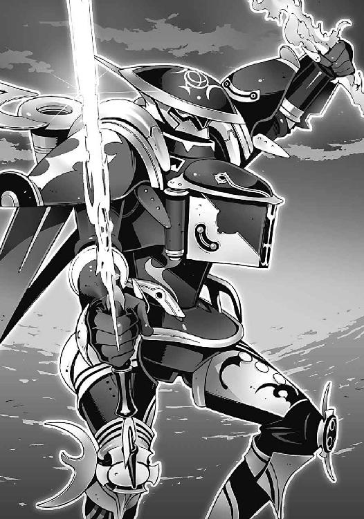
「二刀流......だと......!?」
部長が掠れた声で弱々しく呻いた。《鐵》の巨体が、無駄のない流麗な動きで二刀を構える。その構えを目にした瞬間、部長は怯えたように全身を震わせた。
「その構え......秋希と同じ......!? なぜきみがその技を知っている!?」
部長の声が恐怖で引き攣る。《鐵》は、彼のかつての恋人を──橘高秋希という名の少女の魂を喰らった機巧魔神だ。その漆黒の機械の悪魔が、秋希さんを生き返らせようとしている部長の前に、敵として立ちはだかっているのだ。秋希さんと同じ剣技をもって──
「頼まれたんだ......」
怯える部長を睨んで、僕は告げる。橘高道場の技を僕に教えてくれたのは、〝一巡目〟の世界の冬琉会長だった。ほとんどイジメのような猛特訓で彼女が僕に叩きこんだのは、なぜか冬琉会長のものではなく、秋希さんの得意の型だった。いつか僕がそれを必要とすることを、最初から知っていたかのように──
「冬琉会長に頼まれたんだよ、秋希さんの代わりにあんたを止めてくれって──！」
「な......に......!?」
僕の言葉に、部長が息を呑んだ。
《鐵》が二刀を構えたまま、部長の機巧魔神へと突進する。内蔵された無数の歯車が回転し、圧縮された発条が軋む。
『──闇より暗き深淵より出し』
擦れ会う無数の部品が、低い呪文のような声を紡いだ。
部長がハッと顔を上げて、自らの鋼色の機巧魔神を見た。
しかし《鋼》は動かない。まるで凍りついたように動きを止めている。
「どうした!? 動け、鋼！」
部長が悲愴な声で命令した。それでも《鋼》は動かない。
《鐵》が右手に握った銀色の巨剣が、鋼色の機巧魔神の剣を弾き飛ばす。そしてがら空きになった《鋼》の胸部へと、《鐵》の左腕が──炎の剣が突き刺さる。
『其は、科学の光が落とす影──！』
灼熱の炎の剣は、《鋼》の装甲を一瞬で引き裂き、その内部へと炎の奔流を注ぎこんだ。全身の関節、隙間という隙間から炎を噴き出して、鋼色の機巧魔神が断末魔の咆吼を上げた。
「冬琉っ！」
塔貴也が幼なじみの少女の名前を絶叫する。
そんな彼の目の前で、機巧魔神《鋼》がゆっくりと崩れ落ちていく。最終生産品。時間すら操る完成体の機巧魔神。機械仕掛けの悪魔にかけられた呪いは打ち破られて、あとに残されたのは、焼けこげた人形の残骸だけ。
炎に融かされたその頭部は、まるで涙を流しているようにも見えた。
終章
重力炉を失った潮泉家の裏山には、静寂だけが残されていた。
無惨に破壊された《鋼》の機体を、漆黒の機巧魔神が、無表情に見下ろしている。
部長が魔神相剋者の能力を失ったことで、彼の使い魔も、無限の魔力の供給を絶たれた。傷ついた氷の不死鳥には、先ほどまでの異様な再生能力はすでにない。
「終わった......のか。僕は......もう......」
がっくりと地面に両手を突いたまま、部長が消え入りそうな声で呻く。
僕はそんな彼を睨んで、首を振る。漆黒の機巧魔神が、重々しい音を立てて《鋼》の残骸へと近づいていく。再び右腕の剣を構える《鐵》の姿に気づいて、部長が表情を恐怖に歪めた。
「まだです、部長。まだなにも終わってなんかない──鐵！」
「やめろ......これ以上、冬琉を傷つけるような真似は......う!?」
部長の制止を無視して、《鐵》が剣を振り下ろした。虹色の軌跡を描く斬撃が、鋼色の巨人の胸部を縦に斬り裂く。そして生み出された空間の亀裂へと、《鐵》は左腕を突っこんだ。装甲の隙間を無理やりに押し広げ、巨大な腕がなにかをつかみ取る。
「部長は前に、元演操者であっても副葬処女になれると言いましたよね──」
《鐵》に内蔵された無数の歯車が唸りを上げ、魔力回路が膨大な力を吐き出した。機巧魔神の内部の異空間を強引に歪めて、封印を破壊する。
機械仕掛けの悪魔の生贄として捧げられた、副葬処女の封印を──
「それは逆に言えば、副葬処女になったとしても、元演操者の能力は失われないということではないんですか!?」
《鐵》の腕がつかみ取ったのは、ガラス状のカプセルの中で眠っていた一人の少女だった。胎児のように膝を丸めた小柄な少女。彼女の裸身が、淡く光り輝いている。
それは彼女の体内のナノマシンが稼働している証──
元演操者の輝きだ。
「魔力の......無効化能力......冬琉は、生きているのか？」
虚ろに彷徨っていた部長の瞳に、かすかな光が戻る。
冬琉会長の肉体は、一切の魔力の影響を受けつけない。《鋼》の機体を貫いた《鐵》の炎の剣も、彼女を傷つけることはできない。だから僕は、なんの迷いもなく《鋼》に攻撃を叩きこむことができたのだ。
「たとえ機巧魔神の中が、どこともしれない異空間につながってるとしても──今の鐵の、空間制御能力なら！」
斬り裂かれた空間の亀裂を突き抜けて、《鐵》の左腕が封印のカプセルを破壊した。そして冬琉会長の身体を引きずり出す──
「嵩月、頼む！」
僕が彼女を振り返ると同時に、嵩月が地面に横たわる冬琉会長へと駆け寄った。彼女の胸に両手を押し当て、仮死状態になった彼女の蘇生を試みる。
何度目かの心臓マッサージのあとで、かはっ、と弱々しい息を冬琉会長が洩らした。
「冬琉......」
息を吹き返した冬琉会長によろよろと近づいて、部長は自分の上着を彼女に着せた。
弱々しい呼吸を続ける幼なじみの身体を抱きしめ、部長が嗚咽を始める。それは冬琉会長を失わずに済んだことに対する安堵の啜り泣きだった。
「我が......主......」
氷羽子が、そんな部長の姿を眺めて呆然と呟いた。信頼していた飼い主に裏切られた子犬のような表情だった。
彼女の戦意を繋ぎ止めていた最後の糸が切れてしまったかのように、氷羽子はがっくりと力尽きたように倒れる。その彼女を背後から誰かが抱き止めた。
ばつの悪そうな表情で立っていたのは、粗暴そうな顔立ちの銀髪の男。鳳島蹴策だった。
「お兄......様......」
信じられないものを見るような表情で、氷羽子が彼を呼ぶ。
「鳳島、おまえどうしてここに？」
僕も驚いて、たこ焼き屋のエプロンをつけたままの鳳島兄を見た。
鳳島兄は、自分でもなぜそんなことをしているのかわからない、というふうに困惑しながら、
「てめえが言ったんだろうが。氷羽子って女を救ってやってくれって」
「夏目様が、そんなことを......？」
氷羽子が瞬きを忘れて僕を見つめる。しかし彼女は、すぐに自嘲するように首を振り、
「でも、いいのです。鳳島の望みは、もう......叶うことはないのですから」
そう言って氷羽子は、鳳島兄を突き放そうとした。鳳島兄はそんな氷羽子の手首をつかんで、
「あのよ」
鼻の頭をぼりぼりと掻きながら、照れ隠しのような荒っぽい口調で言う。
「おまえ、俺の妹になってくれないか」
「は？」
氷羽子が、どこか間の抜けた表情で固まった。
「あの、バカ......」
僕は本気で頭を抱えた。よりによってこんなときまでその台詞か。鳳島兄のそんな態度が、氷羽子の神経を逆撫でするのではないかと僕は戦々恐々とするが、
「あ......待って......」
嵩月が焦る僕を押し止める。
鳳島兄は、ますます居心地の悪そうな表情になって、それでも妙に真摯な言葉を続ける。
「俺はおまえのことをよく知らないけど、おまえみたいな妹がいてくれたらいいと、ずっと夢に見てたような気がするんだよ。だからさ、これからの人生は俺の妹として──おう!?」
どん、と胸に伝わってきた衝撃に、鳳島兄が呻いた。氷羽子が彼の身体にしがみつき、兄の胸に顔を埋めて、子どものように泣いていた。
「バカ......バカです。お兄様は......本当に......」
どんどんと自分の胸を叩く氷羽子のことを、鳳島が途方に暮れたような表情で見つめている。
僕はホッと溜息をついて、機巧魔神の制御を解いた。
《鐵》の機体が、僕の影の中にずぶずぶと沈んでいく。
代わりに操緒が、ふわり、と唐突に姿を現した。泣きじゃくっている部長や氷羽子の姿を見て、彼女はぎょっとしたような表情を浮かべる。どうしてこんなことになっちゃってるの、と言いたげな表情だ。眉間に皺を寄せる彼女を見上げて、僕は無言で肩をすくめた。
「どうやら終わったみたいね」
少し遅れて朱浬さんが森の中から現れた。破壊された《鋼》と重力炉の姿を見て、満足そうに彼女は笑った。彼女の背後に、瑤と、クロエを連れた律都さんの姿も見える。
重力炉が破壊されてしまったことで、彼女たちが戦う理由ももうなくなったのだ。
「よくやったわね......はい、ご褒美」
そんなことを言いながら、朱浬さんが僕の頭をよしよしと撫でる。くすぐったいその感触に、僕は妙に懐かしい気分を覚えて息を吐いた。
そしてそんな僕の安堵の時間をぶち壊すように、
「あれー、夏目智春!? あんたまさか勝っちゃったわけ!?」
空中から非難がましい金切り声が聞こえてくる。
「どうしてくれるのよ。この賭け、あたしの一人負けじゃないの！ ああっ、来年の予算がっ」
風獣の背中に跨って現れたのは、六夏だった。うずくまっている部長を見て、彼女は本気の表情で頭を抱え、
「当然だ。そんな賭けをするほうがおかしい。そもそも校内における賭博行為は校則違反だ」
そんな六夏を蔑むように睨んで、生真面目に呟く佐伯兄。ひかり先輩も、おろおろと六夏をなだめながら、
「し、失礼だよ......六夏ちゃん」
「定員オーバーっすよ。どう考えても」
風獣の鬣にしがみついたまま、ぐったりとした表情で真日和が言う。実際、真日和が言うとおり、風獣に乗っていたのは六夏たちだけではなかった。
「智春！」
「夏目っ！ 無事なの？」
風獣の、やや貧相な尻尾の影から飛び降りてきたのは、杏と佐伯妹だった。なんで彼女たちがこんなところに、と僕が唖然としていると、両手を顔の前で合わせた樋口と目が合う。
「樋口い......」
「悪ィ、捕まっちまった」
そう言って樋口はへらへらと頭を掻いた。どうすんだよ、と僕は嘆息する。佐伯妹はまだしも、この騒ぎのことを杏にどうやって説明するつもりだ。
「......これで、全部終わったのか？」
風獣の背中から降りてくるアニアに手を貸しながら、樋口が真面目な顔で訊いてくる。
まだだよ、と僕は首を振った。
「まだだ。まだなにも終わっていない」
そうだな、とうなずいて、アニアが空を見上げた。
無数の星を散りばめた夜空に、くっきり浮かび上がっているのは、機械仕掛けの巨大な〝神〟の手だ。こうしている今も〝神〟はこの世界の非在化を進行させている。僕たちに残された時間は、想像していたよりもかなり少ない。
「あのデカブツをどうにかしないことには終わらないんだ......だが......」
そう言ってアニアは物憂げに目を伏せる。部長の儀式魔法を阻止したことで、〝神〟を倒す確実な方法は失われた。生き残った魔神相剋者は僕だけだ。イグナイターを再生して〝神〟を倒せば、確実に僕は消滅することになる。
けれど──
「〝科学の光が落とす影〟......か」
夜空を照らす星たちを見上げて、僕はふと呟いた。アニアが怪訝顔で僕を見る。
「ん？」
「いや......大丈夫。あれは僕がなんとかするよ」
そう言って僕は小さく笑った。なんの説得力もなかったけれど、奇妙な自信だけがあった。操緒の考え方が伝染ったのかもしれない。
「なんとかする？」
冬琉会長を抱きかかえた部長が、咎めるような視線を向けてくる。
「わかっているのか、あれはたとえ魔神相剋者の能力でも確実に倒せるとは限らないんだ......そんな不確実なことのために命を賭けるなんて非科学的だ。馬鹿げている──！」
彼の言葉は辛辣だったけれど、僕を責めているようには感じられなかった。むしろ僕たちの命を気遣うような響きがあった。
「そうですね。でも......」
部長の言葉が間違っているとは思わなかった。けれどそれが絶対に正しいとも思えない。僕一人では倒せなくても、〝神〟を破壊する方法はあるはずだ。たとえ人間の力では〝神〟を破壊できなくても、だ──
『できるよ』
そっと僕の傍らに舞い降りてきて、操緒が言った。驚く僕を見て、彼女は当然でしょ、と言わんばかりに微笑み、
『だいじょうぶ、操緒がついてるよ』
根拠のない自信に溢れたいつもの口調で断言する。そして、
「はい」
嵩月までもが、操緒と同じような確信に満ちた瞳で僕を見ていた。彼女は、背後に従えた火蜥蜴の顎を撫でながら微笑み、
「わたしたちの娘が、夏目くんを守るから。たとえどんなに遠く離れていても」
「うん」
僕は彼女たちの言葉にうなずいた。
迷いは嘘のように消えていた。誰に強制されたわけでもない、自分で決めたことだった。〝神〟は僕たちが倒すのだ。
「行くのか、智春」
淡々とした口調でアニアが訊いた。気負いのない表情でうなずく僕に、
「そうか」
ずいっと、アニアがいきなり顔を寄せてきた。彼女は僕の後頭部を両手でがっちりと鷲掴みに固定し、僕が反応できずにいるうちに、そっと目を閉じて唇を重ねてくる。
どよっ、と周囲がどよめく気配がするが、アニアは気にした素振りもなく、
「目ぐらい閉じろ、馬鹿者」
そう言って僕を突き放した。僕は自分の口元を押さえて狼狽し、
「ア、アニア？」
「祝福のキスだ。幸運を祈っていてやる。ありがたく思え」
そう言ってアニアが、あかんべえ、と頬に指を当てる。それを見て、僕は、ようやく彼女の目的に気づいた。アニアは運喰らいだ。他人の運気を奪うだけでなく、自らに溜めこんだ運気を分け与えることもできる。
〝神〟と戦う僕のために、彼女は自分の運気を与えてくれたのだ。
言葉通りの本物の祝福のキスだ。
「ありがとう」
アニアは、かすかに頬を赤らめて、礼を言う僕からフン、と目を逸らす。
口を大きく開けてそれを見ていた杏が、ハッとなにか思いついたように、
「あ、あたしもする！ 祝福のキス！」
「え？」
駆け寄ってくる杏を見て、僕はさすがに焦りを覚え、一方そのころ佐伯妹はコホンと小さく咳払いしながら、
「そ、そういうことなら仕方ないから、私も」
「な......っ」
妹の発言を聞いた佐伯兄が絶句する。
うろたえている僕を見て、朱浬さんはニヤニヤと愉しそうに笑い、
「それなら、あたしがしないわけにはいかないわね」
「朱浬さんまでなに言ってるんですか！」
僕はたまらず絶叫した。
「杏たちも、今のはそういうんじゃなくて......アニア、ちゃんと説明してやってくれよ！」
「なんのことだ？」
素知らぬ表情でそっぽを向くアニアを、僕は呆然と眺め、
「うー......」
ふと気づくと、嵩月が拗ねたような顔で低く唸っていた。
僕はほとんど泣き出しそうな気分になる。いったい僕がなにをしたというのだ。
「緊張感のない人たちね......」
そんな僕たちの姿を眺めて、律都さんが苦笑混じりに溜息をついた。
彼女の隣に立っていた瑤が、いつもの無駄に恰好いいポーズを取りながら、
「だけど......おかげで信じたくなってしまうよ。彼らなら、本当にあの神をもどうにかできるんじゃないかってね」
「そう？」
疑わしげに眉をひそめる律都さん。しかし彼女は、すぐに愉快そうに目を細め、
「でも、そうね......それがあなたの選択なのね、夏目智春」
どこか満足したようにそう呟く。
「......じゃあ、ちょっと行ってくるよ」
僕は、寂しげに微笑む嵩月を見つめて笑った。
「どこに......？」
訊き返したのは杏だった。僕は彼女にどう説明するべきか少し悩んで、結局思いついたのは、意外なほど短い言葉だった。
「奇跡を起こしに」
微笑む僕を見て、杏が息を呑む。その一瞬の沈黙を衝いて、僕は叫んだ。
「来い、鐵──！」
僕の足下の影が、暗い虚無の色へと変わる。異世界へと続くその裂け目をこじ開けて、鎧に包まれた機械の腕が迫り出してくる。
僕はその機巧魔神の腕へと飛び乗った。
赤く光り輝く火蜥蜴の巨体が、そんな僕を守るように絡みついてくる。
嵩月が言っていたとおりだ。たとえどんなに遠く離れても、彼女の使い魔が僕を必ず守ってくれる。
《鐵》の腕が、僕の身体を包みこんだまま、虚無の闇の中へと沈んでいく。このまま異空間を経由して、僕は〝神〟を倒しに行くのだ。
「帰ってくるよね......智春!?」
僕の視界が闇に呑まれる寸前、泣きそうな顔で叫ぶ杏が見えた。
だいじょうぶ、と拳を突き上げて、僕はきっぱりと彼女たちに告げる。
「もちろん」
○
次に気づいたとき、僕の身体は虚空を漂っていた。
地上を遠く離れた宇宙空間。それも僕たちの世界とは位相の違う異世界だ。
かつて中央渦界域で見たのと同じ、〝神〟が本来いるべき世界である。
その証拠に、僕の目の前には、虚空から伸びてくる機械仕掛けの巨大な腕が見えていた。
生物を思わせる緻密さで、そのくせ都市に似た不規則な粗雑さをもって無数の歯車やカムやシリンダーが動き続けている。あまりにもいびつな姿の、世界を破壊する機械だ。
そして僕たちの背後には太陽が煌々と輝いている。
この世界にも太陽はあるんだな、と気づいて僕は微笑んだ。
どことも知れない空間に投げ出されているのに、僕は不安を感じていなかった。
僕の周囲を包んでいるのは、美しい輝きを放つ炎の結界。
嵩月の使い魔が僕を守ってくれているのを感じる。
そしてもう一人──
「ありがとう、操緒」
僕の隣に寄り添っている幽霊の少女に、心の底から礼を言う。
『ん？』
そんな僕を、操緒は不思議そうに見返して、
「なんとなく思い出したんだ......操緒が僕と一緒にいてくれた理由。おまえが僕を生き返らせてくれたんだろ。自分の魂と引き替えにして」
『......そうだよ』
操緒が、まるでそれがなんでもないことであるかのように笑った。
『だから操緒の願いはもう叶ってるの。操緒は智春と一緒にいたかっただけだから』
そう言って操緒は、僕の背中にそっとしがみつく。
彼女の柔らかな温もりをたしかに感じて、僕はそっと首を振った。
「僕の願いはまだ叶ってない」
『え？』
目の前の巨大な機械の腕を睨んで、僕は獰猛に微笑んだ。
「〝神〟を倒して、みんなを守って......それから操緒を生き返らせるんだ」
最初から決めていたことだった。僕は世界を救うためにここに来たんじゃない。操緒を生き返らせることが今の僕の望みなのだ。世界を救うのは、ほんのついでだ。操緒を機巧魔神から解放して、みんなのいる場所に連れ帰る。その邪魔をするというのなら、たとえ相手が神だろうが倒すと僕は決めたのだ。
操緒はしばらく驚いた表情を浮かべて黙っていたが、やがてクスクスと笑いながら僕に頬を寄せてきた。
『そっか......じゃあ、ここから生きて帰らないとね』
「ああ」
操緒の囁きに僕はきっぱりとうなずいた。そんな僕の頬に操緒の唇がそっと押し当てられた。
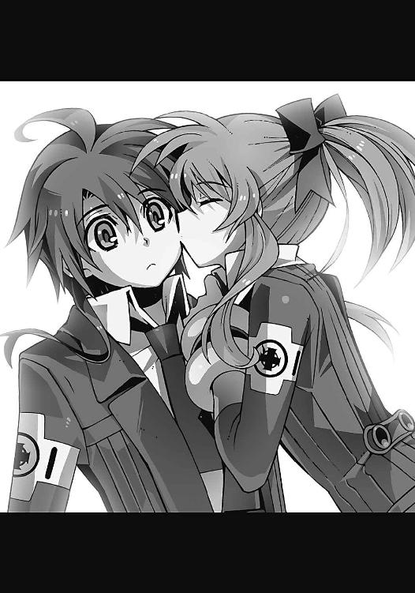
「......操緒？」
驚く僕を見て操緒は悪戯っぽく目を細め、
「祝福のキス、だよ。それからこっちは、大好き！ ......のキス」
振り返った僕の口を、自称〝守護霊〟の幽霊の少女の唇が塞ぐ。
そして彼女の姿はかき消え、同時に僕の背後には、漆黒の影が出現した。
機械仕掛けの悪魔の影が──
『闇より暗き深淵より出し......』
使い魔の炎を纏った《鐵》が、咆吼とともにすさまじい魔力を解き放つ。
僕たちのいる場所を中心にして、虚空に闇が広がっていく。
それは強大な重力場の闇だ。〝神〟の巨大さには遠く及ばない、ちっぽけな超重力の塊。たとえそれをぶつけたところで、機械仕掛けの神は痛みすら感じることはないだろう。
だがその重力塊は、そこに存在するだけで周囲の空間をわずかに歪めている。
宇宙全体からみればほんのちっぽけな変化だけれども、僕の意志が世界を変えるのだ。
『其は、科学の光が落とす影──！』
強烈な光が、〝神〟を包んだ。
光の源は、僕たちの背後の太陽だった。遠い場所にある太陽の光が収束して、〝神〟の巨体を照らし出している。重力レンズと呼ばれている現象だった。
《鐵》が生み出した巨大な重力が、周囲の空間を歪めて太陽光をねじ曲げ、虫眼鏡のレンズのように光を一点に集めている。その際に焦点部に発生する熱は、太陽の表面温度とほぼ同じ。太陽に直接放りこんだのと同じの高温が〝神〟の巨体を包み込んでいるのだ。
太陽の光が、否、この宇宙そのものが僕たちに力を貸してくれている。
そして嵩月の使い魔が、自らの身体を触媒として、収束された太陽光をさらに濃縮した。焦点温度数万度超の、太陽光励起レーザーだ。それを巨大な閃光の刃に変えて、漆黒の機巧魔神が、〝神〟の機体を薙ぎ払った。
この世界を滅ぼすはずの神の腕が光に包まれて、崩れていく。
暗き深淵の底から放たれた、科学の光の中で──
○
聖夜の街。マンションの一室のベランダから、私たちは空を見上げていた。
午前零時を過ぎて、浮かれていた街も寝静まり、イルミネーションの電飾だけが、残り火のように瞬いていた。
風のない静かな夜だった。飾り気のないベランダに、私の吐く息だけが白く凍る。そして、
『星が......消えていくわ』
暗い夜空を見上げて、彼女が呟いた。
雲ひとつなく澄んだ冬の空。けれど彼女の言うとおりだった。夜空に星の姿はない。地平線近くにわずかに消え残っていた星たちさえも、やがて闇に呑みこまれて消えていく。
『重力レンズ......科学の光が落とす影......』
私の知らない難しい言葉を、彼女はぽつりと口にする。
遠い夜空の向こうでなにが起きているのか、彼女は知っているのかもしれないと思う。
光の見えない、闇色の夜空。
一瞬だけ、一筋の美しい閃光が、その夜空を切り裂くように伸びた──ような気がした。
その瞬間、私はふと一人の少年の顔を脳裏に思い浮かべて、彼を呼ぶ。
「お兄ちゃん......？」
∴ エピローグ
昼間から始めた引っ越し作業は、夕方にはあらかた片付いていた。
飴色に変色した古い柱。年代物の絡繰り時計と、色褪せた革張りのソファ。まるで古いセピア色の写真から抜け出してきたようなアンティーク調の居間を見回して、私は、ふう、と溜息をついた。開けっ放しの窓から吹きこんでくるのは、穏やかな春の陽射しと乾いた風。
桜の花弁がひらひらと舞いこんで、私の髪にそっと張りついた。
「和葉、和葉ってば」
ぼんやりと床に座りこんだ私の名前を、誰かが呼んでいる。
「おーい、苑宮和葉さん！」
「あ、うん？ 喬香ちゃん、なに？」
驚くほど近くで親友の声が聞こえてきて、私は顔を上げた。
ぽかん、としている私を見下ろして、喬香ちゃんが呆れたように嘆息する。
長い髪を左右で結んだ喬香ちゃんは、スタイルのいい美人さんだ。しっかり者で面倒見のいい彼女には、私は中学時代からいつも助けてもらっている。今日の引っ越しだって彼女がいなかったら、こんなに早くは片付かなかっただろうと思う。
「この荷物、どこに運べばいいの？ 二階？」
足下のスーツケースを指差して、喬香ちゃんが訊いてくる。私は、うーん、と少し考えて、
「いいよ。この部屋に置いといて」
「ふーん。なにが入ってるのこれ？ 制服？」
喬香ちゃんはスーツケースを勝手に開けて、中に入っていた荷物を引っ張り出した。私は、おろおろと手を振って、
「ふあっ、ちょっと勝手に開けないで」
「駄目駄目。和葉は、そうやってすぐにシワにしちゃうんだから」
そう言って喬香ちゃんが、袋に入ったままの新品の制服を引っ張り出した。
ひっくり返ったスーツケースから、ほかの荷物もばらばらとこぼれて、
「ん......なにこれ？ パンツ？」
「だから開けないでっていったのに......」
情けない声を出しながら、私は慌てて下着を拾い集めた。そんな私の肩に喬香ちゃんが優しく手を置いて、
「わかった、和葉。今度一緒に、ちゃんとした高校生らしいパンツを買いに行こう」
「ちゃ、ちゃんとしてるよ！」
私は精いっぱい抗議する。たしかに少し子どもっぽいデザインかもしれないけど......それは主にサイズの問題であって、べつに私が子どもっぽいわけではないのだ。うん、そう思いたい。
「しっかし、古い屋敷だねえ。噂には聞いてたけど、本当に幽霊とか出そう」
あらためて屋敷の中を見回しながら、喬香ちゃんが顔をしかめた。彼女は心配そうな表情で私を見て、
「こんなところに一人で住むの？ 大丈夫？」
うん、と私は微笑んだ。彼女が心配する気持ちもよくわかる。私の下宿先のこの古い洋館は、近所では心霊スポットとして有名な場所なのだ。幽霊とか巫女とか空飛ぶ美女とか怪獣とか、とにかく怪奇現象の目撃情報には事欠かない場所らしい。爆発して跡形もなく吹っ飛んだのに、翌月には何事もなかったように復活していた、なんて噂もある。さすがにそこまでいくと信じる気にはなれなかったけど。
「お兄ちゃんが去年まで住んでた家だから、中は意外にまともなんだ。学校にも近いし」
下着をスーツケースに詰めこみながら私がそう答えると、
「出た出た、和葉の〝お兄ちゃん〟」
喬香ちゃんがからかうように笑って言った。
「な、なによ、それ......」
「和葉は、お兄ちゃん大好きだもんね」
「ち、違うよ。私とお兄ちゃんはそういうんじゃなくて......」
「はいはい、わかってます。和葉と和葉のお兄さんは血もつながってないし、一緒に住んでたこともない赤の他人で、結婚だって出来るんだもんね」
「よ、余計に誤解を招くようなこと言わないで！」
私は顔を真っ赤にして叫んだ。そう、本当にそんなんじゃないのだ。私は兄とは、ほとんど口を利いたこともないし、数えるほどしか直接顔を合わせたこともない。向こうが私の顔を覚えてくれているのかも、実を言うとあまり自信がない。
『......だけど、好きなんでしょ』
私の耳元で、咲華が言う。
もう、と私は乱暴に息を吐く。咲華までそんなこと言わないで！
「お兄さん、まだ帰ってきてないんだ。外国に留学してるんだっけ？」
私の制服をハンガーにかけながら、喬香ちゃんが訊いてくる。
「うん。たぶん」
そう言って私は溜息をついた。
兄は去年の年末くらいに、この街からふらりと姿を消した。うちの継母、つまり兄の実の母親も、彼の行き先は知らないと言う。気になって学校に問い合わせたら、留学中という回答が返ってきた。中欧の、なんだか聞いたこともない長ったらしい名前の小さな国に、交換留学生として派遣中なのだとか。
妹に挨拶もなし、というのは、いくらなんでもひどいのではないかと、私は密かに兄に対して怒っているのだ。
「そっか。早く帰ってくるといいね」
喬香ちゃんが真面目な口調でそう言った。そして彼女は、ひひっ、と意味ありげに笑って、
「そしたら兄妹で一緒に住めるしね」
「......べ、べつにそのために一人暮らしを始めたわけじゃ......ないもん」
私は耳まで赤くなってぼそぼそと反論した。うん、まあ、実家を出ると決めたときに、期待しなかった、といえば嘘になってしまうのだけど。
と、そのとき──
『誰か来た』
咲華が突然そう言った。少し遅れて、ピンポン、と玄関のチャイムが鳴った。
「お客さん？ 新聞の勧誘かな？ あたしが出ようか？」
「ううん、平気。行ってくる」
そう言って私は玄関へと向かった。この洋館、無駄に広いだけあって、玄関までの距離もけっこう遠い。ぱたぱたとスリッパを鳴らして玄関に辿り着き、
「うわ」
玄関の扉を開けた瞬間、私は思わず声を洩らしていた。
そこに立っていた人が、ものすごい美少女だったからだ。
艶やかな長い黒髪と、大きな瞳。透けるような白い肌。アイドルの誰それに似ているとか、クラスでいちばん、とかいうレベルではない。人間離れしたデタラメな美少女だ。
おまけにスタイルも抜群だった。全体的にはほっそりとしているのに、黒いコートの上からでも胸元の魅力的な膨らみがわかる。なにを食べたらそんなふうになれるのだろう、と思う。
「こんばんは」
その規格外の美少女が、私を見て穏やかに微笑んだ。
「あ......こ、こんばんは」
私はドキドキしながら挨拶した。彼女の訪問が、現実に起こっていることとは思えなかった。この美少女が実は人間ではなく、この屋敷に取り憑いている妖精かなにかだといわれたほうがまだ納得できる。しかし彼女は、真面目な口調で、
「あなたが夏目くんの妹さん、ですか？」
彼女の言葉に私は激しく動揺した。この美少女が兄の知り合い？ いったいどういうことなの、と思う。
「あ、はい。夏目智春は私の兄です。でも、兄はまだ留学先から戻ってなくて......」
私はおどおどと説明する。けれど彼女は静かな微笑みをたたえたまま、
「知ってます」
「は？」
「わたしは、あなたに用があって来たんです。苑宮和葉さん。あなたにこれを渡すために」
渡す。なにを。訊き返そうとして、私は気づいた。
黒いコート姿の美少女の足下に、見慣れない銀色のトランクが置かれている。
それは旅行用のスーツケースくらいの大きさで、表面が独特の金属光沢を放っていた。どこにも継ぎ目のない奇妙なトランクだ。
「あの......これって？」
問い返す私に、美少女は儚げな表情を浮かべて言った。
「もしあなたが、夏目くんの行き先を知りたいと思っているなら、これを持っていてください。あなたがこれを必要とする日まで、大切に──」
『あ......この人......』
黒コートの少女を見て、咲華がかすかな驚きの声を洩らした。
咲華の反応で私も気づいた。
瞳の色が人間とは違っている。黒コートの少女の双眸は、淡い緑色に輝いている。
「これって......兄の持ち物なんですか？」
かすかな恐怖を覚えながら、私は訊いた。
彼女はかすかに首を振ったようだった。
「いいえ。それは、あなたたちのものです。最初から」
何気ない彼女の言葉に、私はぎくりとする。
かすかな違和感に振り返る。どうして彼女は、私に向かって複数形であなたたちと呼びかけた？ この玄関で彼女を出迎えたのは、私以外、誰もいないはずなのに──
「あ、あの、ちょっと待って......せめて、お名前を」
立ち去ろうとする彼女に向かって、私は思わず訊いていた。
長い黒髪を揺らして少女が振り返る。けれど彼女は名乗らないままに、
「また、会いましょう、苑宮和葉さん」
澄んだ声でそう言って、そのまま私に背中を向けた。屋敷の扉がゆっくりと閉ざされる。私はそれを呆然と見つめる。
咲華もかすかに動揺しているようだった。あの黒髪の美しい少女が、咲華の存在に気づいているかのように振る舞ったことが気になっているのだろう。
私以外の誰にも見えないはずの咲華に。
私の中のもう一人の人格に──
「ねえ、今の人、なんだったの？」
ふと気づくと、リビングから顔を出した喬香ちゃんが私を呼んでいた。
「すっごい美人だったね。何者？」
無邪気にはしゃぐ喬香ちゃんに、私は軽く混乱したまま首を振り、
「さあ？ お兄ちゃんの知り合いらしいんだけど......」
「へえー......強敵だね、あれは。特にあの胸は」
「うぅ......」
私は自分の胸元を押さえて弱々しく呻く。べつにいいけど。敵とか味方とかそんなんじゃないから。私はただお兄ちゃんに会いたいだけなのだ。この世界でおそらく私以外に唯一、咲華の存在を理解してくれそうな彼に。幽霊憑きと呼ばれていたあの人に──
私は、リビングの埃っぽいカーテンを開ける。そしてそこに広がる中庭の風景を見て、わ、と思わず息を呑んだ。
「うわ......」
喬香ちゃんも、驚いたように歓声を上げる。
この屋敷が、鳴桜邸と呼ばれている理由がようやくわかった。屋敷の中庭には一本の大木が生えていた。根本近くで二つに分かれた幹が螺旋状に絡み合い、大きく枝を広げた桜の木だ。
満開のその桜が、空一面を花弁で埋め尽くしている。
「すごい桜吹雪。こんな見事な桜、滅多にないよ。街中探しても」
喬香ちゃんがはしゃいだ声で言う。うん、うん、と私も興奮してうなずく。
『あの人も、見たのかな、この桜を......一年前に』
咲華が感慨深げにぽつりと言った。
自分が兄と同じ景色を見ている。そのことが嬉しくなって、私は部屋の隅にかけられた制服を見つめる。十字架の校章をあしらったモノトーンの制服。洛芦和高校の制服を。
「もうすぐ......会えるね」
私はそう呟いて、桜吹雪の中に手を伸ばす。
明日は入学式だった。
春が始まる──
あとがき
アスラクラインというのは少し不思議な作品で、最初に書き始めたときには、物語の最後の場面が完成していました。なにを言ってるのかわからねーと思いますが、結末から逆算して書き始めたというようなことではなくて、本当に二人分のストーリーが同時にイメージとして再生されているような感じなのでした。
なのでこの巻の最後の場面を描き終えたことで、ようやくスタート地点に辿り着いたような気が遠くなりそうな感覚を味わっています。なるほどこれがループするということか......
そんなわけで、十三冊目の『アスラクライン』をお届けします。
智春と操緒の物語は、これでひとまず完結ということになります。
今さらですけど、長かったですね。ここまでおつき合いいただいた読者の皆様には、どれだけの言葉を尽くしても感謝の気持ちを伝えきれません。正直に言ってしまえば、アスラクラインという作品を世に送り出すにあたっては、べつに誰が悪いってことでもないんだけど、何度か絶望したくなるような酷い体験をしました。そんなときに自分を励ましてくれたのは、この作品を読んでくれる誰かがいる、という事実だけでした。手紙やメールで皆様からいただいた感想には、どれだけ支えられたかわかりません。読んでくれる誰か（つまりあなた）がいなければ、アスラクラインがこうして最後まで描かれることは絶対にありませんでした。そう思うと、完結した、というよりも完結させてもらった、という気持ちのほうが強いです。
本当にありがとう──
最後の最後までアスラクラインらしい、コミカルで悲しくて残酷で、そして希望が感じられる物語になっているといいのですが。
とはいっても、アスラクラインというシリーズそのものは、もうちょっとだけ続きます。
エピローグで出てきた「彼女」の話というわけではないのですが、たぶん短編とか後日談とかいろいろやります。できれば、本編ではあまり描かれなかった登場人物の話もやりたいなあ。もちろんこちらも確実に続きが出る、と決まっているわけではありませんが、もし無事に世に出すことができましたら、手にとってやってもらえると嬉しいです。本編のほうの感想などもお待ちしていますので気が向いた方はぜひ。
この十三巻が発売される頃には、『アスラクライン』アニメ第二期の放映が始まっていると思います。草川監督をはじめ一期と同じスタッフの方々が制作してくださっていますので原作者的にも安心というか、本当に勿体ないくらいのカッコイイ作品になっています。あとはなんといっても声優陣の皆様が豪華。そしてイメージ以上の素晴らしい演技を披露してくださっています。アニメオリジナルの展開などもあって、原作版の読者も必ず楽しめると思います。こちらも是非ご覧になってみてください。
そしてあきづきりょう先生によるコミック版『アスラクライン』も、引き続き月刊コミック電撃大王誌上で連載中です。単行本も二巻まで発売中。こちらも本当にクオリティが高くて、もしかしたらアスラクライン関係でもっとも完成度が高いシリーズかもしれないと思っています。未読の方はぜひチェックを。
そのほかにもアスラクラインという作品は、様々な企画に参加させていただいて、多くの方々のお世話になりました。先日開催された『アスラクラインＡＷＡＲＤＳ』では、自分のほうが、皆様から送っていただいたアスラクラインのショートストーリーを読ませてもらうという貴重な体験をしました。アスラクラインという作品は、基本、智春（と、あともう一人）の視点からしか描かれません。そのぶん、読者の方が自らの手で、ほかのキャラクターの心情を描いてくれた作品などを読むと、原作者としても驚いたり納得したり感動させられたりします。本当にすごく楽しかった。アスラクラインがどうにかエンディングまでこぎ着けたのは、こうして多くの人々が支えてくれているおかげだと思います。しつこいくらい繰り返しますが、本当に本当にありがとう。
それでは最後になりましたが、本書の出版にあたりお世話になった方々に、あらためて感謝を申し上げます。特にイラストの和狸ナオ様、厳しいスケジュールの中、今回はさらに表紙の全面リニューアルという大仕事にまでご協力いただき感謝の言葉もありません。アスラクラインというシリーズをここまで続けることができたのは、間違いなく和狸さんのおかげです。
そしてこの本に最後までおつき合いくださった皆様にも、究極の感謝を──
次巻の巻末にまたお会いできれば幸いです。三雲岳斗でした。
三雲岳斗
大分県出身横浜市在住。楽器を弾くのも聴くのも好きですが、木目を眺めているのも同じくらい好きです。ぼーっと見つめていると、なんとも言えない幸せな気分に。たまに頬ずりとかしてしまう俺はもうダメかもしれない。
和狸ナオ
１９７６年生誕の千葉県民。くじ運は最低ながら本作の挿絵を描かせて頂き、実はすごく仕事運が良いのでは...?!と人生見直しております。遅咲きな絵描き兼ぬるいゲーマーですが、よろしくどうぞ。
電撃文庫
アスラクライン⑬
さくらさくら
三雲岳斗
二〇十二年八月二十四日 配信
発行者 塚田正晃
発行所 株式会社アスキー・メディアワークス
〒一〇二−八五八四 東京都千代田区富士見一−八−十九
(C)2009 GAKUTO MIKUMO／ASCII MEDIA WORKS
本書（電子版）に掲載されているコンテンツ（ソフトウェア／プログラム／データ／情報を含む）の著作権およびその他の権利は、すべて株式会社アスキー・メディアワークスおよび正当な権利を有する第三者に帰属しています。
法律の定めがある場合または権利者の明示的な承諾がある場合を除き、これらのコンテンツを複製・転載、改変・編集、翻案・翻訳、放送・出版、公衆送信（送信可能化を含む）・再配信、販売・頒布、貸与等に使用することはできません。